| 冷血公爵の溺愛花嫁 姫君は愛に惑う (蜜猫文庫) | |
| 小出みき & Ｃｉｅｌ | |
| 竹書房 (2018) | |
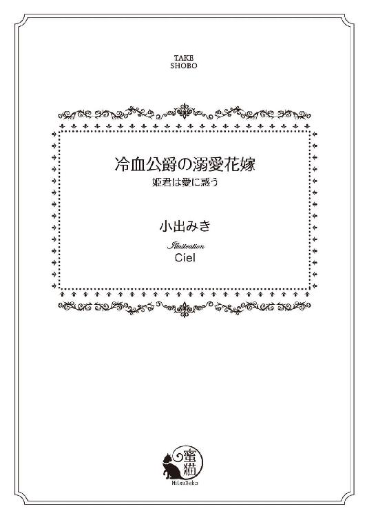
この作品は縦書きでレイアウトされています。
また、ご覧になる機種により、表示の差異が認められることがあります。
一部の漢字が簡略字で表示されていることがあります。
イラスト／Ｃｉｅｌ
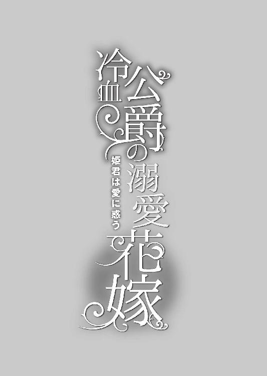
第一章 歓迎されざる花嫁
「......これで見納め、ね」
小高い丘の上にそびえる王城を馬車の窓から見上げ、フィオリーネは緑の混じる黄玉色の瞳を曇らせた。
馬車に同乗した侍女のカトリンが慌てて身を乗り出す。
「そんなことございません！ いずれご夫君と一緒に来られますとも。公爵様の領地はこのグリトニールから馬車を飛ばせば一日で着く距離ではありませんか」
「これから向かうのはそこではないわ」
「ええ、まぁ......」
カトリンは口ごもって眉を上げ下げした。フィオリーネは次第に遠ざかる王城をじっと凝視めた。父譲りの艶やかな黒髪が、さらりと風にそよぐ。
生まれ育った王宮が遠くなる──。そう思っただけでやるせなさが胸を塞いだ。
悲しげな主を見かね、侍女は語気を強めた。
「大丈夫ですわ、姫様。公爵様はずっと国境におられるわけではありません。いずれ領地に戻られます。ほんの少しのご辛抱ですよ」
「......そうね」
城から目を離さないまま頷く。いつ領地へ戻れるのだろう。今は全然わからない。それでも見知らぬ他国に嫁がされるのではなく、国内貴族に降嫁できてよかった。
別れを告げた家族の姿が眼の奥で城とだぶって見えた。
涙ぐんでいた美しい母。いつも猛禽のように鋭い父の瞳も少しばかり潤んで見えた。双子の次兄たちは交互にフィオリーネを抱きしめて離そうとせず、いいかげんにしろと父に叱られていた。途中まで送ってくれる長兄は馬車の前を騎馬で先行している。
（......さようなら、みんな）
城が視界から消えてしまうまで、フィオリーネはずっと目を凝らし続けた。
およそ一カ月前──。フィオリーネは父王から結婚相手を決めたと告げられた。驚きはしなかった。もう十八だし、早晩そういう話が来るでしょうと母からも言い含められていた。
わかっていた。いつまでも優しい家族のもとでぬくぬくと暮らしているわけにはいかないことは。自分はグランフェルト王国唯一の直系王女なのだから。
相手はリンドホルム公爵リーンハルト。長兄と同い年で親しい友人でもある。兄の友人なら悪い人ではあるまい。物静かで思慮深い長兄のことは心から敬愛している。
貴族の結婚では婚約から半年ほどを準備にあてるのがふつうだ。しかしフィオリーネはたった一カ月で慌ただしく夫の任地へ赴くことになった。現在、リーンハルトは国境守備を任されており、領地ではなく東の城砦シュトルツェーレで暮らしている。
父王の出身一族に連なる公爵ゆえ、嫁ぎ先として不足はない。しかし、こうまで急いで結婚させるにはむろんそれだけの理由があった。
東の隣国ファラハールの王がフィオリーネを妃にしたいと申し入れてきたのだ。同時に自分の妹を王太子妃としてグランフェルトに嫁がせたい、とも。
グランフェルトは三年前からファラハールと国交を断絶している。それ以前もけっしてよい関係とは言えなかった。かの国が頻々と国境侵犯を繰り返していたからだ。
三年前までは王都に領事館があって交易も行われていたのだが、現在は王都への出入りは一切許されていない。その状況を打開しようと、先王崩御によって後を継いだ若き国王セリムが通婚を申し入れてきたのである。
グランフェルトの家臣のなかにはよい機会ではないかと言う者もいた。しかし国王ルガートはこの結婚で得られるものは何もないと撥ねつけた。
信用ならない国の王女を大事な王太子の妃に迎えるつもりはないと断言されれば、あえて勧める利点はない。交易についても別の国を通るルートがすでに確立している。
結婚の申し込みを断るにあたり、王女は婚約済みだということにした。ただ拒否しては侮辱されたと受け取られかねない。相手がもう決まっているので......という断り方が一番穏便に済ませられる。
王女を嫁がせられないのでそちらの姫もいただけない、と言えば両方の話を流せる。
そのように断った以上、なるべく早く結婚させねばならない。
溺愛する一人娘を他国へ嫁がせる気など微塵もなかったルガート王は、国内貴族に降嫁させようと考え、以前からしかるべき相手を慎重に見繕っていた。
家柄だけでなく、年齢や容姿、性格、騎士としての技倆など、さまざまな点を考慮して最終的に決定したのがリンドホルム公爵リーンハルトだ。
家臣であるリーンハルトからすれば、王女を嫁がせたいと言われて否はない。
念のためルガートは想う相手はいるかと彼に確認した。そのような相手はいないとの返答があり、話は決まった。かくして最低限の嫁入り支度だけでフィオリーネは急ぎ彼に嫁ぐこととなった。
最低限といっても、そこは王女である。結婚相手が現在国境の砦に駐屯中という特殊事情もあり、可愛い一人娘に不自由させたくないと、十数台もの馬車に衣裳やら家具やら身の回りの品々やらが満載されている。
（......どんな方なのかしら）
整備された街道を馬車に揺られながら、つらつらとフィオリーネは考えた。肖像画を用意する暇もなく、人となりを聞いただけだ。
（金髪で、瞳は綺麗な翠色だとか......）
背は長兄より少し高く、父よりは若干低いという。父はとても上背があるので、リーンハルトも充分に長身の部類に入る。
美男子だよ、と長兄は微笑んだ。お兄様よりも？ と尋ねると、兄は困ったように眉根を寄せた。負けないくらい凛々しい方よ、と彼に何度か会ったことのある母がにっこりと請け合うと、いつも表情の薄い兄の頬がかすかに染まった。
（無口だって、お兄様は仰っていたけど......）
口数が多いとは言えない兄がそういうくらいだから相当に寡黙なのだろう。その点は少し心配だ。フィオリーネもあまり積極的に喋るほうではない。すぐ上の双子の兄がわりとお喋りで、ふたりがやり合うのをにこにこしながら見ているのが好きだった。
寂しくなって、フィオリーネの黄玉の瞳は自然と潤んだ。
（そのうちまた会えるわ。外国に嫁ぐわけじゃないんだもの）
国内貴族、それも公爵に降嫁するのだ。両親とも兄たちとも会う機会はいくらでもある。侍女の言うとおり、リンドホルム公爵の本来の所領は王都からそれほど離れていない。ただ、一時的に国境に駐屯しているだけなのだ。きっとすぐに戻れる。
（──リーンハルト、様）
心のなかでそっと呼んでみる。金髪で、翠の瞳をして。背が高く、寡黙で凛々しい美男子。伝え聞いた婚約者の立ち姿を思い描き、フィオリーネはほんのりと頬を染めた。
（恰好いいわ、ね......）
そう。きっと素敵なひとに違いない。父が選んでくれた人だもの。兄の親友でもある。
『......だけど、あの方は、ねぇ』
ふと漏れ聞いた女官たちのひそひそ話が思い浮かび、フィオリーネは急いでその声を頭から追い払った。
（ただの噂よ。根も葉もない噂）
フィオリーネの嫁入り支度をしながら、女官たちが内輪で話しているのを、つい立ち聞きしてしまったのだ。
『いくらお身内とはいえ、あんなことをしでかして追放処分になった人に嫁がせるなんて。国王陛下もあんまりだわ』
あんなこと......？ 追放処分......？
『やっぱり、父親である以前に国王......ということよ。お可哀相な姫様』
女官たちは一斉に溜息をついた。せめて立派な支度を整えてさしあげましょうと励む女官たちの姿に問い質すのも気が引けて長兄に尋ねた。兄は困った顔で妹を見返した。
『誤解だよ。リーンハルトはそんなことしていない』
父に訊いても返ってきた答えは同じようなものだった。
『八つ当たりで悪い噂を流されただけさ。追放など俺はしていない。信頼しているから国境守備を任せたんだ』
そう。ただの噂。興味本位のひどい噂だわ。
婚約者を殺して喰った、なんて。
道中の領主館に宿を取りながら三泊し、最後の宿で長兄と別れた。ここからは警護の騎士たちに付き添われ、ひとりだけ王宮から伴ってきた侍女カトリンとともに東の砦へ向かう。
長兄は妹を固く抱擁し、父王がしたためた公爵宛の書状を持たせた。兄と別れると寂しさのあまりしばらく涙が止まらなかった。そんなフィオリーネを、侍女のカトリンは親身に慰めた。
国境の城砦が見えてきたのは夕暮れも間近な頃合いだった。防御に重点を置いた造りは王都グリトニールの城よりもさらに堅牢だ。
東の砦──シュトルツェーレ城砦は国境の渓谷を見下ろす高台に位置しており、麓にはグランフェルト東端の城市がある。砦は四隅に円塔のある高い城壁に囲まれ、その周りは開けた交戦場になっている。
先触れが行っているので、堅固な城門はすでに大きく開け放たれていた。
一行の掲げる旗には後ろ足で立ち上がった有翼狼が炎を吐く図柄が描かれている。もともとはルガートの出身であるオーレンドルフ家のもので、現在もオーレンドルフ辺境伯の紋章として使われている。有翼狼が冠を被り、手に剣を持っていれば王家の紋章だ。
城門のまぐさ石には美しい陶器で作られた王家の紋章が嵌め込まれ、その下に現在駐屯しているリンドホルム家の旗が下がっている。意匠は交差する二本の剣の間で翼を広げる赤い不死鳥だ。
警備兵たちが武器を掲げて敬礼するなか、馬車は石畳の広い中庭で止まった。すでに夕闇の色濃い中庭は篝火と松明で照らされている。
従者の手を借りて馬車から降りたフィオリーネは、テラス状になったアーチ型の入り口の前に佇む人影に気付いた。篝火を反射した金髪が荘厳にきらめき、心臓がドキリと跳ねる。
その人物はゆっくりと階段を降り、石畳の中庭に降り立った。
「......まさか本当にやって来るとはな」
冷淡な呟きに目を瞠る。
彼は立ち尽くすフィオリーネをじっと凝視めた。反射した篝火の炎が瞳で揺らめく。息を詰めて妖美な瞳を見返していると、彼の背後に控えていた副官とおぼしき騎士が訝しげに尋ねた。
「殿？ どうかなさいましたか」
「──いや」
気を取り直したようにかぶりを振り、彼は胸に手を当ててそつなく一礼した。
「ようこそ姫君。どうぞこちらへ」
ふたたび目が合うと、すでに瞳のなかに揺らぐ翳は消え失せていた。話に聞いていたとおりの美しい瞳だ。緑玉のように固く、冷たい。
胸に当てた手を、きゅっと握りしめる。ショックで心臓が冷たく感じられた。
いやでも自覚せざるをえなかった。
歓迎されてはいないのだ──ということを。
案内されたのは大きな暖炉のある居間だった。立ったまま入れそうなほど大きな暖炉だ。すでに春の半ばだが、王都よりも標高が高いから夜は冷えるのだろう。薪が小さく燃えている。炎を見るとなんだかホッとしてフィオリーネは手をかざした。
「......ワインは温めたほうがよさそうだな」
呟いたリーンハルトは控えていた侍従に指示をし、暖炉の前の椅子に座るよう勧めた。
「どうぞ。お疲れでしょう」
よそよそしい口調に怯みつつ、挨拶も交わしていないことを思い出してフィオリーネはドレスを摘まんで膝を折った。
「初めまして、リーンハルト様。フィオリーネと申します」
リーンハルトは面食らったように目を瞬き、我に返ってさっと跪いた。
「これは大変なご無礼を」
差し出された手を取り、唇を寄せる。ただ近づけただけで、触れはしない。
「リンドホルム公爵リーンハルトと申します。王女殿下におかれましては、遠路はるばるこのような辺境までお運びいただき、まことに恐縮です」
堅苦しい口上。まるで宮廷での謁見のよう。彼は顔を上げるとかすかに口角を上げた。笑ったようには見えなかった。そっけなさに小さく胸が痛む。とても花嫁を迎える言葉には思えない。それでもフィオリーネは精一杯品よく微笑んだ。
「......これから、どうぞよしなに」
客人ではなく、ずっとここにいるのだと含みを持たせたつもりだが、通じたかどうか。リーンハルトは無言で頷いただけだ。隅に控えているカトリンがかすかに溜息を洩らした気がする。ぎこちないやりとりに呆れたのかもしれない。
（仕方ないわ。会ったばかりなのだもの）
侍従が温めたワインを入れた把手付きの壺を戻ってきた。後ろにはエプロンをつけた中年の女性がカップを載せた盆を掲げて従っている。侍従はテーブルに置いた壺から銀の杓でワインをカップに注ぎ分け、今度は自ら盆を持って主に歩み寄った。
リーンハルトはフィオリーネに座るよう再度勧め、カップを差し出した。メイドは一礼して退出したが侍従は残って扉の側に控えた。
熱いワインから香辛料と柑橘の香りが立ちのぼる。噎せないように気をつけて香りを楽しみ、ゆっくりと味わった。蜂蜜が入っていて、ほんのり甘く美味しい。
ワインを飲みながら、フィオリーネは室内をそっと見回した。壁にはくすんだタペストリーが何枚も下がり、石壁の寒々しさを覆い隠している。防衛拠点の砦という役割ゆえか、城全体が古風で武骨な造りだ。
リーンハルトは腰を下ろすことなく、椅子の背もたれに軽く肘を預けて立っている。
「道中は如何でしたか」
低声で尋ねられ、ハッと彼に視線を戻す。深みのある声音はなめらかで、とても響きがいい。宝玉の如き翠の瞳に見つめられ、頬が熱くなった。彼の瞳は本当に美しい。これほど冷たくさえなければ、いつまでもうっとりと眺めていたいくらい......。
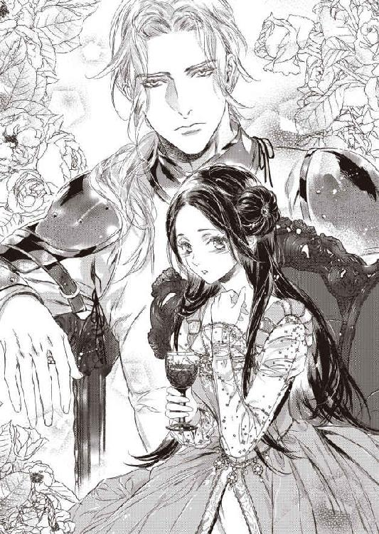
「おかげさまで快適でしたわ。道も、宿も」
「宿泊は領主館で？」
「はい。お城に泊めていただきました。どこも、とてもよくしてくれましたわ」
「当然です。あなたは王女なのだから」
彼はしかつめらしく頷いたが、どこか気がかりそうでもあった。何か迷うような風情の彼を訝しげに見やったフィオリーネは、ふと思い出して腰を浮かせた。
「──あぁ、そうだわ。父から書状を預かっています」
すかさず歩み寄ったカトリンが美しい文箱をうやうやしく差し出す。フィオリーネは中から取り出した国王の封印の押された手紙をリーンハルトに渡した。
彼が手紙を読むあいだ、夫となる人物をそれとなく窺う。
（凛々しい、お顔だち）
きりりとした眉。すっと通った鼻筋。怜悧さの際立つ目許。凛とした唇は、微笑んだらさぞかし麗しいだろうと思わせる。残念ながら、厳めしく引き結ばれて容易にほころびそうにない。
やや暗めの金髪は肩甲骨の辺りまでの長さで、うなじで軽く結んでいる。きらきらしいというより荘厳な趣の髪色で、エメラルドを思わせる翠の瞳とあいまって、いにしえの宝物めいた神秘的な雰囲気が漂う。
とても背が高いけれど気圧されはしなかった。父も兄たちも長身なので慣れているし、みなフィオリーネを大事にしてくれた。逞しく頑健な父が、ほっそりとたおやかな母をとても丁寧に扱うのを見て育ったゆえかもしれない。
（お父様とお母様のように、なれるかしら......？）
結婚したら両親のように互いを思いやり、支え合う夫婦になりたい──。そうずっと願っていた。仲むつまじい両親の姿はフィオリーネの憧れだ。
父は一人娘をとても可愛がり、気に入った相手と添わせてやろうと昔から言ってくれていた。しかし思い定める相手は現れず、結局父の勧めに従うこととなった。
恋への憧れはもちろんあったけれど、父の決めた結婚に不満はなかった。結婚してから恋が始まることもある。母は戦いに敗れた一族から寵姫として父に差し出されたのだと言う。ロマンチックとは程遠い出会いだった。それでも両親は互いをなくてはならない存在として愛し合い、二十五年経った今でも人が羨むほど仲がよい。
貴族の結婚は政略で決まるものだし、ましてやフィオリーネは王女──それもたったひとりの王女である。国の利益になる相手に有無を言わさず嫁がされても文句は言えない。
国王としての思惑が皆無ではなかったにせよ、父は娘の幸せを最大限に考えて結婚相手を選んでくれたはずだ。
リーンハルトを一目見た瞬間、フィオリーネはかつて経験したことのないときめきを感じた。彼が結婚相手で嬉しく思った。いきなりの冷淡な呟きで、残念ながらそんな浮かれた気分はたちまちしぼんでしまったけれど......。
『まさか本当にやって来るとはな』
あれが自分に向けて発せられたのだとは思っていない。たぶん独り言だ。思わず洩れてしまった──本音。
（......わたしのこと、気に入らなかったんだわ）
今まで自分はそこそこ美人だと思っていた。母はとても美しい人で、父も精悍な雰囲気をまとわせつつ顔だちは端整だ。きょうだいのなかで一番母に似ているのは長兄で、フィオリーネはその次に母似だと言われていた。逆に髪や瞳の色は父にそっくりで、漆黒の髪とやや翠がかった黄玉の瞳を受け継いだのは子どもたちのなかで自分だけだ。
胸元に垂れる黒髪を指先でもてあそびながらフィオリーネは考え込んだ。
（黒髪の女は、好みじゃないのかも......？）
長兄のような琥珀色、もしくは次兄たちのような金茶色のほうが明るく見えてよかったのかもしれない。
（それか、お母様みたいな銀髪......とか）
うつむいて無意味に髪を弄っていると、ぶっきらぼうな低声が頭上から降ってきた。
「お疲れですか」
びくりと顔を上げると、憮然としたリーンハルトと視線がかち合った。反射的にふるっとかぶりを振る。
「大丈夫です」
手紙はすでにたたまれていた。翠の瞳はとても美しいのに冷ややかで、いかなる感情も窺えない。むしろ、手紙を読んで一層冷厳な顔つきになったようだ。いったい父は何を書いたのだろう。
「三日も馬車に揺られては疲れているはずだ。いや、四日だったか......？」
目線で問われ、おずおずと頷く。
「ならば、なおのことお疲れだな」
彼は呟いた。どうやら彼は独りごちる癖があるらしい。彼は扉の側に控えている侍従を振り向いた。
「湯浴みの準備はまだなのか？」
侍従が答えかけたところで扉が細く開いた。侍従はそちらに頷きかけると、主に向き直ってうやうやしく腰をかがめた。
「お待たせして申し訳ございません。湯殿の支度が整いましてございます」
「姫君を案内せよ。──湯浴みのあいだに食事を用意しておきます。どうぞごゆっくり」
頷いてリーンハルトに目礼すると、フィオリーネは侍女を連れて侍従の案内に従った。
客間らしき部屋のひとつに細長い木製の浴槽が置かれていた。カトリンの介添えでドレスを脱ぎ、湯に浸かる。
ゆったりと足を伸ばし、香草の入れられた湯から立ち上る清涼感のある香りを吸い込んで、フィオリーネは深々と吐息を洩らした。道中の宿とした城館でもお風呂はいただいたが、明日からはもう馬車に揺られないで済むのだと思えばやはりホッとした。
湯から上がると別のドレスに着替え、ふたたび侍従の案内で晩餐室へ降りる。
最初に通された居間と同じくらい大きな暖炉があり、その前でリーンハルトがぼんやりと炎を眺めていた。
彼の足元には俊敏そうな体躯の大型犬が二匹寝そべっていた。一匹は白く、もう一匹は黒い。犬たちは頭をもたげてじっとフィオリーネを眺めたが、よく躾けられていると見え、唸ったり吠えたりはしなかった。王宮でも父が大型の猟犬を側に置いていて、子どもの頃からよく遊んでいたので特に怖くはない。
湯浴みしているあいだに彼も着替え、立ち襟の付いた膝丈のコタルディに脚衣という貴族の平服姿だ。
リーンハルトは召使に合図をするとフィオリーネの手を捧げ持ってテーブルへ案内した。細長いテーブルは清潔な白布で覆われ、食事用のナイフ、銀のフォークと木製のスプーン、スープ皿やトレンチャー（固いパンで作られた皿）、手水鉢などが並んでいる。
お湯の入った水差しを持った給仕係が席を廻り、手を洗う。ぬるま湯はハーブで香りづけがしてあった。
リーンハルトが頷くと料理が次々と運び込まれた。鹿肉のシチューから始まって、棒鱈と豆の煮込み、雉のロースト、うさぎのパイ、去勢鶏のロースト、などなど、たくさんの料理が並べられる。自分の好きなものを選んで食べればよく、もてなしの常として量は実際の人数の二倍用意されている。
取り皿に残った骨や食べ屑は足元におとなしく控えている犬たちに与えた。
締めくくりのデザートには林檎の砂糖煮と、蜂の巣型の薄い焼菓子、スパイス風味の白ワインが出された。
「......ごちそうさま。とても美味しかったわ」
ナプキンで口を拭いてそう言うと、リーンハルトは礼儀正しく口角を上げた。今度はちゃんと笑顔に見えた。
「田舎だが、質のよい新鮮な素材が手に入りますので」
お世辞ではなく食事もデザートも美味しかった。領地から料理人を連れてきているのだろう。
「──明日、下の城市から司祭が来ます」
しばしの沈黙を挟んで、いささか唐突に彼が言い出した。結婚式のことだと思い当たって背筋を伸ばす。リーンハルトはかすかに眉根を寄せ、溜息まじりに呟いた。
「残念ながらごく簡単なものしかできませんが......」
「ここでのお式は仮のものだと聞きました」
「ええ。領地に戻った後、改めてやり直すつもりです」
「わたしは別にかまいませんわ」
あらかじめ父から聞かされていたし、駐屯地で祝言を上げるのだから仕方がないと納得している。両親だって正式な結婚式は父の戴冠式と同時だったそうだ。そのときすでに母のお腹には長兄がいた。
司祭の前で結婚の誓いを立てた後は、家臣の騎士や町の代表を招いての祝宴を開くという。到着に備え、式や祝宴の手配をきちんとしてくれていたとわかってホッとしたが、心から歓迎されているわけではない......という感覚はなかなか消えない。
間仕切りに下げられたタペストリーの陰で楽士がリュートや笛を控えめに奏でている。会話は途切れがちで、ぼんやりと音楽に耳を傾けているうちに疲れが出たのかだんだんと眠くなってきた。
うつらうつらしていることに気付いたリーンハルトが軽く腕に触れる。
「寝室の用意は整っています。どうぞお休みになってください」
「──あ。ごめんなさい。つい、うたた寝を......」
「お疲れでしょう。ゆっくり休んで」
フィオリーネは頷いて席を立った。
「では、お言葉に甘えて、お先に失礼させていただきます」
「おやすみなさい、姫君」
リーンハルトの口調と『微笑み』は今までで一番やわらかな気がした。眠気で頭がぼうっとしていてそう思えただけかもしれないが。
召使の先導で客間に案内される。カトリンが寝支度を整えて待っていてくれた。就寝前の身繕いを済ませて寝台にもぐり込むと、たちまちフィオリーネは眠りに引き込まれた。
翌朝、目覚めるとすでに日は高く昇っていた。
気が張っていたせいかさほど疲れは感じなかったけれど、四日間も馬車に揺られたのだ。そうでなくてもフィオリーネは王都の周辺くらいしか出かけたことがなく、この数年はとある理由から王宮の奥に引きこもっていた。
「寝坊してしまったかしら」
「結婚式は夕方からだから大丈夫ですよ」
侍女のカトリンににっこりされて安堵する。疲れているだろうからゆっくり寝かせておくように、とリーンハルトに指示されていたそうだ。運ばれてきた湯で顔を洗い、身繕いをして部屋でひとり軽い朝食を摂る。婚礼当日は、式まで新郎と顔を合わせないのが習わしだ。
朝食が済むと、新しくフィオリーネに付けられた召使たちからの挨拶を受けた。侍従と料理長以外の使用人は地元で採用しているそうだ。
城主夫人の小間使いということで、町の有力者や富裕層の娘が新たに雇われていた。貴婦人に仕えさせて娘に箔をつけたいという親の思惑もあるのだろう。
単に公爵夫人というだけでも滅多にない機会なのに、フィオリーネは王女だ。誰もがこぞって娘や妻を側に上げたがる。
「ひとりくらいは公爵様のご領地から寄越してほしいですよね。というか、てっきりいるものと思ってたんですけど」
フィオリーネの髪を梳りながら、カトリンは愚痴った。
「いないのね」
「守備隊は殿方ばかりですから。騎士の世話は従者か従騎士がしますし。ここにいる女性使用人は掃除婦やメイド、厨房の下働きなんかで、城市の周囲の農家のおかみさんだそうです。姫様がお嫁入りなさるので、小間使いとして若いお嬢さんがたを採用したそうですけど......」
どうもよくわかってないみたいなんですよねぇ、とカトリンは溜息をついた。
「仕方ないわ。今まで他人に仕えたことがないのでしょう」
「これからはビシビシ鍛えてやらないと」
くすくすとフィオリーネは笑った。カトリンは貴族ではないが国王の信頼厚い正騎士の娘だけあって、けっこう気が強い。
「カトリンが一緒に来てくれて嬉しいわ」
「当然です。わたしは姫様にずーっとお仕えするって心に決めてましたから」
「ありがとう。でも、ね。好きなひとができたら遠慮しなくていいのよ」
鏡越しにカトリンが頬を染める。
「じゃ、じゃあ姫様のお側にいるためにリンドホルムの騎士と結婚しちゃおうかしらっ」
「ああ！ それがいいわ」
「もう、冗談ですよー。そんなつもりで付いてきたんじゃないんですから」
ますます赤くなる侍女に笑っているうちに、だいぶ気分がほぐれた。
式の始まる時間を見計らって支度を始めた。婚礼衣裳はすべて王宮から持参した。急なことだったにもかかわらず、両親は王女の結婚にふさわしい装束を整えてくれた。
袖口に白貂の毛皮をあしらった青い絹のコタルディ（ドレス）。その上に着るシュルコ＝トゥヴェール（オーバードレス）の身頃と裾にも高価な白貂が惜しげもなく使われ、スカート部分は深紅の天鵞絨だ。腰の部分まで深く開いた袖ぐりからは、金糸銀糸を織り込み、細かな宝石を鏤めた豪華な飾りベルトが覗く。
揃いであつらえた、毛皮で縁取られた豪華なマントを大粒のルビーをあしらったブローチを使って両肩で留めると、荘厳な雰囲気が加わった。
髪は左右で編んだものを丸く束ね、真珠をあしらった金のクリスピン（ヘアネット）で覆う。その上から両端が高くなったかたちの白いエスコフィオン（帽子）をかぶった。これにも大小様々な宝石が鏤められている。
デコルテを飾るのはエメラルドをあしらった精緻な金細工のネックレス。母からの贈り物だ。リーンハルトの瞳とよく似ていることに気付き、いっそう嬉しくなった。
着付けが終わると、カトリンは立たせたフィオリーネの周囲を何度も廻って様子を確かめ、ようやく満足そうな笑みを浮かべた。
「完璧です、姫様」
緊張していた新米の小間使いたちも、ほーっと安堵の溜息を洩らす。カトリンはふだんからフィオリーネの身支度を一手に引き受けているものの、今回は慣れた侍女たちを使えないことがわかっていたので、念入りに練習を重ねてきたのだ。
カトリンはフィオリーネを丸椅子に座らせ、銀のカップに入れたクラレット（葡萄ジュースに生姜やコリアンダーを混ぜた飲料）を飲ませた。
フィオリーネが休んでいる間にカトリンは自分の着替えを済ませた。コット（チュニックドレス）の上にシュルコを重ね、先端からレースを垂らしたエナン（高い円錐形の帽子）をかぶるという、やや古風な恰好だ。王宮では女官や侍女の目印となっている。
しばらくすると侍従がやってきて『お時間です』と告げた。カトリンがフィオリーネの手をとって城の一角にある礼拝堂に導く。
両開きの大きなアーチ型の扉が開かれると、祭壇まで赤い絨毯が敷かれていた。そう広くはないがとても天井が高い。薔薇窓から射し込む光が荘厳な雰囲気を醸しだしている。
奥の祭壇の前にはすでにリーンハルトがいた。膝丈の青い天鵞絨のコタルディに白い脚衣。肩には白貂の縁取りのついた青いマントを羽織り、王国の正騎士であることを示す飾りの付いた剣帯に典礼用の細身の剣を下げている。
振り向いた彼の昏めの金髪がステンドグラス越しの光で神秘的に輝き、フィオリーネは反射的に目を伏せた。臆病な子ウサギのように心臓が跳ねまわっている。
（ああ、やっぱり素敵だわ......！）
警護と見届け役を兼ねた王家の騎士隊長に導かれ、祭壇の前まで進む。
騎士はフィオリーネの手を花婿にゆだねると、最前列の席に座った。その後ろにはリンドホルムの騎士が立会人として控えている。
緊張で震えそうな手を、そっとリーンハルトが握った。目を上げると頭ひとつぶん高い位置から彼がじっと見下ろしていた。前髪を軽く後ろに撫でつけているため、白い額が顔だちの秀麗さをいっそう際立たせている。
深い翠玉の瞳に、自分はどんなふうに映っているのだろう。美しいその瞳がかすかに揺らいだ気がしたが、平淡な表情からは何も読み取れなかった。
無言のまま彼は祭壇を向いた。かすかな失望を覚えながら、フィオリーネもまた祭壇に向き直る。
温厚そうな老司祭がフィオリーネに微笑みかけた。儀式用の白い祭服の上から紫色の長いストラを掛けている。
司祭は典礼書の上に置かれていた聖なる御印を両手で掲げ、祈りを捧げた。婚礼の儀式を執り行うことを宣言し、この結婚に不満がある者は直ちに名乗り出るよう促す。もちろん誰の声も上がらない。わかっていても、やはりホッとした。
「──では、誓いの言葉を。リンドホルム公爵、リーンハルトよ。あなたはグランフェルトの王女フィオリーネを妻とし、愛と忠誠を捧げ、死がふたりを分かつまで互いを尊重し労りあうことを誓いますか」
「はい」
躊躇ない返答に、フィオリーネは胸が熱くなるような感動を覚えた。司祭は頷くと、今度はフィオリーネに視線を向けた。
「グランフェルト王女、フィオリーネ。あなたはリンドホルムの公爵にして王国の騎士、リーンハルトを夫とし、愛と忠誠を捧げ、死がふたりを分かつまで互いを尊重し労りあうことを誓いますか」
即座に答えようとしたが、緊張のあまり口中が乾いてとっさに声が出ない。慌ててフィオリーネは唾を呑み、上擦りぎみに「はい」と答えた。ちら、とリーンハルトが横目で見たことには気付かない。
頬を紅潮させている初々しい花嫁に、司祭はにっこりと微笑んだ。
「では、結婚指輪を」
介添えの騎士が、小さな絹のクッションに載せた金の指輪を差し出す。指輪を取り上げたリーンハルトは、ほっそりしたフィオリーネの指にリングを嵌めようとしてふと眉をひそめた。
フィオリーネも気付いて、ぴくりと手が震える。
本来なら、フィオリーネの左の薬指にはリーンハルトとおそろいの婚約指輪が嵌まっているはずだった。婚約したときに揃いの指輪を作って嵌め、結婚のときに花嫁にもうひとつ指輪を贈るのが習慣だ。花嫁は左の薬指にふたつの指輪を嵌めることになる。
しかしふたりは婚約指輪を交わさなかった。当然、リーンハルトの指には指輪はない。単に時間がなかっただけだとわかっているが、意識すると急に寂しくなった。
リーンハルトはゆっくりとフィオリーネの指に結婚指輪を嵌め、物思わしげに親指で何度か指輪を撫でた。それから長身を屈め、そっと唇を重ねた。
本当に触れるだけのキス。それでもぬくもりが伝わって、とくんと胸が疼いた。
彼は身を起こすとフィオリーネの手を握ったまま祭壇に向き直った。心なしかその指先にはさっきより力がこもっている気がする。
微笑みながら頷いた司祭が、ふたりが夫婦となったことを宣言すると、立会人は全員立ち上がって拍手を贈った。
答礼すると、ふたりは手をつないで礼拝堂から出た。そのまま祝宴会場の大広間へ向かう。
大広間では鉄製の巨大なシャンデリアに蜜蠟の蠟燭が無数に灯され、壁に取り付けられた油皿で炎が燃えていた。広間の奥には天蓋付きの高座、横壁に沿うかたちで二列のサイドテーブルが設置されている。
いずれも真っ白なクロスとオーバークロスが掛けられ、銀のナイフやスプーン、ゴブレット、脚のついたボウル、蓋付きの水差し、固パン皿などがセッティングされていた。
天井の高い広間には室内バルコニーがあり、美しい幟旗が垂らされた内側で楽士たちが音楽を奏でている。
高座の真ん中にふたり並んで座った。前にはそれぞれ豪華な銀の船形塩入が置かれている。
ファンファーレが鳴り響き、ドラムが轟いて祝宴が始まった。給仕が銀の大皿や蓋付きの深皿に盛った料理を次々に運んでくる。
香辛料入りのシチュー、うなぎのパイ包み、鹿肉のグリル、詰め物をした豚の丸焼き、孔雀のロースト等々。
肉の切り分けは若い騎士が優美な所作で行なった。国境の砦に出向中とはいえ、公爵家に仕える騎士だけあって、物腰は皆洗練されている。
料理の合間には口直しの果物やチーズ、ナッツが出された。何種類ものワインやリンゴ酒、指で摘まんで食べられる小さなペストリーやタルトもある。
食事中、バルコニーでは楽士が音楽を奏で、テーブルのあいだの空いたスペースでは曲芸師や軽業師が持ち芸を披露した。
リーンハルトはあまり話しかけてはこなかったが、料理を取ってくれたり、お酒を注いでくれたりと、気を配ってくれた。
宴の半ばでリーンハルトはフィオリーネと腕を組んで広間を出た。いったんそれぞれの部屋に別れ、着替えや身繕いを済ませる。
フィオリーネは昨日とは違う部屋に案内された。すでに荷物は移してある。昨夜泊まったのは客間で、婚礼を済ませた今夜からは城主夫妻の寝室で休むのだ。
寝室の両側には夫婦それぞれの居室や書斎、衣裳部屋などが続いている。衣裳部屋の暖炉の前には木製の浴槽が置かれ、湯浴みの用意ができていた。
豪華な婚礼衣裳を脱ぎ、湯に浸かるとホッと溜息が洩れた。
「お疲れになったでしょう」
フィオリーネの身体を海綿で優しくさすりながらカトリンが尋ねる。
「そうでもないわ。重いマントはお式のときだけだったし」
「思ったより豪華な祝宴でしたわ。辺境の砦だし、心配してたんですよ。姫様ががっかりされなきゃいいけど......って」
「時間がなかったのに、きちんと準備していただけてありがたいわ」
「あれくらい当然ですよ。王女様のお輿入れなんですから。ご領地での婚礼だったらもっと華やかだったでしょうにねぇ」
残念そうに溜息をつくカトリンにフィオリーネは微笑んだ。ずっと城の奥に引き籠もっていた自分にはあれでも充分すぎるほどだ。
「お料理も美味しかったし、目の前で軽業や曲芸が見られて楽しかったわ」
「ここ、常雇いの楽士はいないんですって」
「軍事用の砦ですものね」
「ふだんは心得のある騎士が交替で楽士役を務めているんだそうですよ」
楽器のひとつやふたつ弾きこなすのも、騎士としての素養のひとつだ。
「......リーンハルト様は、音楽はお好きかしら」
貴婦人の嗜みとしてフィオリーネも楽器は何種類か弾ける。嫁入り道具にもいくつかの楽器が入ってるはずだ。
「お嫌いではないでしょう。姫様が何か弾いてさしあげればきっと喜ばれますよ」
そうね、とフィオリーネは頷いた。気がつくとリーンハルトの好みはなんだろうかとばかり考えていて、ひっそり顔を赤らめる。
湯浴みを済ませると、カトリンはフィオリーネの肌に薔薇の香油を念入りに塗り込めた。着せられたのは比較的ゆったりと作られたシェーンズ（シュミーズ）で、襟ぐりがとても深く、三か所ほどリボンで結ぶようになっている。
次いでカトリンはフィオリーネの髪を丁寧にブラッシングした。癖の付きにくい直毛なので、何度かブラシを入れると、父譲りの黒髪は艶めいてするんと背中に流れる。
フィオリーネの寝支度が整うと、カトリンはコホンと咳払いをして、改まった調子で尋ねた。
「姫様。閨での作法については、王妃様からお聞きになっていますよね？」
「......いちおう。びっくりするようなことをされるだろうけど、驚かないでね、って」
カトリンは眉間を摘まんで嘆息した。
「王妃様らしい......。それだけですか？」
「最初はとても痛いんですって。本当なの？」
「そう聞きますね。わたくし未婚ですので、残念ながら具体的指導はいたしかねます。姉に聞いたところでは、最初は痛くてもだんだん気持ちよくなるそうですよ。お相手の方がお好きならば、ですけど」
フィオリーネは考え込んだ。
（わたし、リーンハルト様のことが『好き』かしら......）
少なくとも『嫌い』ではない。冷ややかだが品のある物腰で、騎士らしく礼節にのっとった態度で接してくれた。婚礼のときも、祝宴のときも、さりげなく気遣ってくれた。それを好もしく感じたし、彼の人となりを知りたいという思いは強くなっている。
恋をした経験のないフィオリーネには、それが特別な好意なのかどうか、よくわからなかった。父や兄たちが全員美男子で、生まれてこのかたずっと大切にされていた。それですっかり満足していたのかもしれない。
考え込んでいるフィオリーネにカトリンは苦笑した。
「姫様ったら、そういうお顔をされると本当に王妃様にそっくりですね」
「そう......？」
美女と名高い母に似ていると言われるのはやはり嬉しい。たとえ困り顔が似ているのだとしても。
「旦那様がお嫌いでなければ大丈夫ですよ。無表情で、ちょっと冷たい感じはしますけど......、乱暴な方ではなさそうですもの」
カトリンは寝室へ続く扉を細く開け、様子を確かめた。
「まだいらっしゃらないようですね。先に寝台に入っていらしてよいかと思います」
ためらいながらカトリンの手を取り、寝台の端に腰掛ける。四柱式の大きな寝台だが、もう晩春なので天蓋から垂れ下がる布は柱に寄せて結ばれていた。ここは王都から見ると北東寄りの高地だし、古めかしい城砦は底冷えがしそうだ。
軍事城砦だから王宮のようにはいくまいと覚悟していたが、外見から想像したよりずっと快適だ。かなり改装したのだろう。
「寒くありませんか？」
「大丈夫よ」
暖炉には小さく火が燃えている。明け方はけっこう冷えるのかもしれないが、今は風呂上がりでもあり、室内はほどよい温かさだ。
カトリンはフィオリーネの前で膝を折って一礼すると、真剣な顔で言った。
「姫様。もしどうしても耐えられないとなったら大声で呼んでくださいね。隣に控えておりますので」
フィオリーネはどきまぎしながら頷いた。
「ありがとう。たぶん......大丈夫だと、思うわ......」
カトリンはもう一度礼をして、静かに退出した。ひとりになると、暖炉でパチパチと炎の爆ぜる音が、やけに大きくなったように感じられた。
手持ち無沙汰でぼんやりと室内を見回す。壁は白い化粧漆喰が塗られ、タペストリーがかかっていた。勇壮な狩りや戦闘場面を描いた大広間のものとは違って、こちらは千花模様を背景に、大きな筒型のヘッドドレスをつけた貴婦人や、宝石箱を持つ侍女、寄り添う乙女と一角獣など、優美な情景が描かれている。
振り仰ぐと梁や天井板は薄い緑に塗られ、重なり合う花や葉っぱの模様が金で描かれていた。壁にかけられた灯火がゆらめき、ざわざわと葉むらが蠢いているように見えて、フィオリーネはぱちぱちと瞬きをした。もちろん錯覚だ。
フィオリーネは頭を戻すと寝台脇のテーブルに置かれた蜂蜜酒の容器とカットグラスの酒杯をちらっと見た。
（寝る前に飲むんだったかしら......）
蜂蜜には強壮効果があり、風邪をひいたときなどハーブ入りの蜂蜜酒をお湯で割ったものをよく飲ませてもらった。
結婚後一カ月くらいは寝る前に飲むといいと言って、父が上等なものを持たせてくれた。環境が変わって気疲れすることを心配してくれたのだろう。この美しい小さなグラスも父の贈り物だ。
大好きな父を思い出すと寂しくなって、きゅっと唇を噛む。絶対的な信頼を寄せる父に庇護されるだけの安楽な『娘』では、もういられない──。
（しっかりしなくちゃ）
自分は公爵夫人になったのだ。リーンハルトの妻に。
端麗な彼の美貌を思い浮かべて顔を赤らめたとたん、入ってきたのとは反対側の戸口でカタリと音がした。振り向くとリーンハルトが扉を閉めるところだった。
彼は静かな足どりでフィオリーネに歩み寄った。
着ているのは踝丈のゆったりした室内着だ。深い緋色で、立ち襟と漏斗状の袖がついている。昼間着ていた青いコタルディも素敵だったが、深みのある赤もよく似合う。
反射的に立ち上がると、彼はかすかに眉を寄せて座るよう身振りで示した。フィオリーネは顔を赤らめてふたたび腰を下ろした。微笑んだように思えたが、錯覚かもしれない。それくらい、彼の表情は薄い。
ふと、冷え込んだ冬の朝に薄氷の張った川面を思い浮かべた。透明な氷の下には水が流れているのに、けっして触れることも止めることもできない......。
彼は蜂蜜酒に気づき、飲むかと尋ねた。頷くと三分の一ほど注いだグラスを手渡された。
そっと触れ合わせたグラスを口許に運ぶ。濃厚な蜂蜜の香りと甘さを舌で転がすように味わう。酒精はほとんど感じないが、割っていないのでけっこう強いはずだ。
「......たいしたこともできず、申し訳ない」
ぽつりとリーンハルトが呟いた。フィオリーネはびっくりして彼を見返した。祝宴のことを言っているのだと気づき、急いでかぶりを振る。
「そんなことありません！ とても楽しかったです。今夜のお料理も、とても美味しかったし......」
「ならばよいのですが」
やっと彼は微笑んだ。それを見ると、安堵と同時に鼓動が速まってとまどう。
（もしかしたら、これが『好き』ということなのかしら......？）
「あの......、リーンハルト様」
「なんでしょうか、姫君」
「姫君はやめていただけませんか？ 敬語も......。わたしはあなたの、つ、妻になったのですし、もう王女ではありませんから......」
「結婚してもあなたはグランフェルトの王女ですよ。身分を失うわけじゃない。今のところあなたは第四位の王位継承権をお持ちだ」
兄たちが結婚して子を設ければ順位は下がるし、そもそも三人も兄がいるのだからフィオリーネに王位が巡って来る可能性はほぼない。
「そうですけど......。でも、妻として、対等に接していただきたいのです」
彼は翠玉の瞳をかすかに細め、探るようにフィオリーネを見つめた。フィオリーネはドキドキしながらその目を見返した。
（やっぱり、綺麗......）
美しくて、謎めいている。ここへ来る途中に通ってきた道沿いの渓谷──。あんな色の淵の側で休憩した。綺麗ねとカトリンに言うと、表面は穏やかに見えても、ああいうところは危ないんですよと物知りの侍女は答えた。水の中は激しい渦を巻いていて、引き込まれたら最後どんなにもがいても浮き上がれず、息が続かずに溺れてしまうのだそうだ。
リーンハルトの瞳はそんな美しくて恐ろしい淵の色に似ている。
こくり、と小さく喉を鳴らすと、彼の生真面目な表情がふっとやわらいだ。
「わかった。では、そうしよう。......フィオリーネ」
「は、はい。リーンハルト様」
上擦った声で答えると彼は微苦笑した。
「夫婦は対等なのだろう？ だったら様はいらないよ」
「あ......、はい。......リーンハル、ト......」
彼はフィオリーネをしげしげと見つめた。まるで今やっとその存在を意識したかのように。
そっと手を伸ばしたものの、指先が頬に触れる寸前、ぴくりと動きを止める。
彼は残っていた蜂蜜酒をぐっと呷った。
コトリと卓にグラスを置いて立ち上がる。彼は顔をそむけたままぽつりと呟いた。
「あなたも好きで嫁いできたわけではないのだし......、こんな辺境の砦で暮らすのはさぞかし不本意なことと思う」
「え？ そんなこと......」
当惑するフィオリーネを見下ろして、彼は眉根を寄せた。開きかけた口を思い直したように閉じると、軽く頭を振り、ぎこちなく微笑んだ。
「ここでの暮らしに慣れるまでは、気兼ねなくゆっくり休んでくれ」
返事も聞かず彼は踵を返した。戸口でわずかに振り向いてぼそりと呟く。
「婚約指輪のことは、すまなかった」
ぱたんと扉が閉まる。フィオリーネは閉じた扉を呆然と眺めた。ぎくしゃくと姿勢を戻し、飲み残しのグラスをぎゅっと握りしめる。
眼窩の奥がカッと熱くなり、瞳が潤んだ。
思い上がっていた。きっと大事にされるはずだと。
意識はしていなくても、王女を妻に迎えられるのだから喜んで当然......と思い込んでいたのだ。
言葉にされなくたってわかる。自分を妻に迎えたのはただ単に王命に従っただけなのだと。
（わたし......、自分のことしか考えてなかったんだわ）
彼の都合や意志などまるで考慮していなかった。結婚を承諾したからには大切にしてくれるものと頭から信じ込んでいた。
フィオリーネは残った蜂蜜酒を一息に飲み、寝台にもぐり込んだ。手触りのよい、上等な上掛けにくるまって目を閉じる。考えまいとしても、冷ややかなリーンハルトの面影ばかりが繰り返し眼裏に浮かんだ。
皮肉にも、拒絶されて初めて、彼に恋していたことにフィオリーネは気付いたのだった。
第二章 すれ違う新婚生活
翌朝。フィオリーネはカトリンに起こされるまで昏々と眠り続けた。まるで暗い沼に沈んだかのように、夢さえ見なかった。
ぐっすり眠ったはずだが、気分は爽やかとは言い難い。昨夜何もなかったことは明白だったろうに、カトリンは何も言わずフィオリーネの身繕いや着替えを手伝った。
両親がたくさん持たせてくれた衣裳のなかから、フィオリーネは深い緋色のコタルディを選んだ。昨夜、リーンハルトが着ていた室内着の色合いに似ていたから......。
未練がましいと思いつつ、少しでも彼との繋がりを感じていたかった。たとえそれが自己満足にすぎないとしても。
上に着るシュルコ＝トゥヴェールは濃紺のものにした。前身頃には金糸で刺繍が施されている。左右で三つ編みにした髪をまとめてクリスピンで円筒形に包み、細い金の冠で飾る。
手鏡を手に、フィオリーネはしばし自分の顔をじっと見つめた。
「お気に召しませんか？」
心配そうにカトリンが尋ねる。我に返ってフィオリーネはかぶりを振った。
「そんなことないわ。ただ、ずいぶん違って見えるな......って思って」
未婚女性は髪を結わず、自然に垂らしておく。髪を結っていれば既婚者だ。
「姫様のお髪は艶々してとても綺麗な黒髪ですから、結ってしまうのはもったいないですわね。でも、その髪で旦那様以外の殿方を魅了してはいけませんから」
おどけた口調にフィオリーネはかすかに頬を染めた。
（......リーンハルトが、黒髪をお嫌いでなければいいけど）
一般的に金髪の女性が好まれるのは確かだが、フィオリーネは父譲りの自分の黒髪を気に入っている。母もよく褒めてくれた。
フィオリーネは口の端に苦い笑みを浮かべ、手鏡を離した。つれなくされても彼のことを嫌いになれない。むしろ好意を持ってもらいたいという思いはより強くなった。
（突き放されたわけじゃないもの。きっとわたしを気遣ってくれたのよ）
もしかしたら誤解しているのかもしれない。降嫁させられ、辺境の砦に連れてこられて腹を立てているのだと。
（そんなことないって伝えなきゃ）
ここへ来ることにしたのは自分の意志だ。けっして強制されたわけではない。降嫁にも不満はない。身分ではなく心から好きだと思える相手と結婚して、暖かい家庭を築きたいと願っていたのだから。
リーンハルトを一目見た瞬間、言うに言われぬときめきを感じた。この人だ、と思った。その直感を信じたい。
侍女たちを従えて広間へ行く。祝宴が開かれた大広間ではなく、一昨日ふたりで晩餐を摂った小さめの広間だ。
クロスをかけた長テーブルの端でリーンハルトがひとりで朝食を取っていた。下座の端には騎士たちが集まっている。鎧の下に着る武装用のダブレット姿なのは、朝の訓練を終えたところなのだろう。彼らはフィオリーネが広間に入っていくと立ち上がって一礼した。
リーンハルトは驚いたように目を瞠り、急いで席を立ってフィオリーネを迎えた。ぎこちない仕種で手を取ってキスをする。
「おはよう。よく眠れたかな」
「はい」
素直に微笑むと、彼は少し気まずそうな顔になってフィオリーネを席に導いた。
彼の食事はほとんど終わっていた。騎士は朝食前に訓練で身体を動かすので、かなりボリュームのある食事を摂る。フィオリーネはフルーツのシロップ煮とチーズ、焼きたてのパンとバター、煎り麦を煮出した汁にスパイスを加えた飲み物で済ませた。
「......昨夜の、お客様たちは......？」
ふと尋ねると、リーンハルトは淡々と答えた。
「昨夜のうちにお帰り願った。砦には非常時以外、城市の住民は泊まらせないことになっているのでね」
「そうなのですか」
「ここは防衛拠点だから、用心のためだよ」
そんなことも知らないのかと呆れられるかも......とドキドキしたが、リーンハルトの表情に変化はない。心のなかでどう思ったかはわからないけれど。
（嫌われているわけじゃなさそう......よね）
それともただの希望的観測？
（でも、優しい方だわ）
無口でぶっきらぼうだが、到着以来何かと気遣ってもらっている。
きっと、少し不器用なのだろう。視線が合うと、ぎくしゃくとだがかすかに微笑んでくれた。
拒否されているわけではない、と思う。急に結婚が決まって、とまどっているだけ。
そう、自分以上に彼のほうがとまどっているに違いない。突然押し付けられた『王女』を扱いあぐねているのだ。
焦ることはない。これから少しずつ距離を縮めていけばいい。まだ出会ったばかり。お互いのことをほとんど知らないのだから。彼が少しばかり用心深くなるのも無理はない。
気持ちが通じ合ってから領地へ戻ればいいのだ。そう自分に言い聞かせ、できるだけ明るく話しかけた。返答は言葉少なだったが、そのまなざしは初めて会ったときほど冷淡でもよそよそしくもなく、充分希望の持てるものに思えた。
ホッとしたフィオリーネは、彼が時折眩しいものでも眺めるような視線を自分に向けていることにはまるで気付かなかった。
翌日から本格的に新しい生活が始まった。シュトルツェーレ城砦は王家の持ち城だが、リーンハルトが守備を任されている以上、その妻であるフィオリーネには城主夫人としての務めがある。
国境警備と防衛のための城だから遠征で留守にすることはないが、万が一ファラハールが国境を越えて侵入してきた場合、外に出て戦う夫に代わって城内を取り仕切るのは妻の役割だ。
フィオリーネの母は不遇な少女時代を送り、家政については無知なまま父と結婚したのだという。王妃なので補佐役が何人も付いてくれたから困ることはなかったが、やはり引け目を感じたそうだ。
だからフィオリーネには幼い頃から貴婦人としての教養だけでなく、家政全般や経済についても教育を施された。外国の王族に嫁ぐにしろ国内貴族に降嫁するにしろ、きっと役に立つだろう、と。
父も兄たちも、フィオリーネの質問には快く答えてくれた。おまえはどう思うかと逆に意見を求められることもたびたびあった。積極的に前に出る性格ではないけれど、自分なりに考えておくよう心がけている。
朝食を取りながら、フィオリーネは城内を見て回りたいと願い出た。リーンハルトはあっさり承諾して執事を呼び、奥方が見たいところはすべて案内するよう命じた。
リーンハルトが午前中の執務をするために食卓を離れると、さっそくフィオリーネはカトリンと一緒に城内を案内してもらった。
執事のアントンは代々公爵家に仕える家士で、本拠地の城は彼の上役に当たる家令が留守を守っているのだそうだ。リーンハルトよりもいくらか年上、三十歳くらいだろうか。黒褐色の髪に青い瞳で、きびきびした動作が有能そうだ。
「シュトルツェーレ城砦は前王朝時代から王家の所領地で──」
説明を聞きながら城内をめぐる。城砦の位置づけについては嫁いでくるときにひととおり学んできたが、確認がてら頷きながらしっかり聞き入った。
国境沿いは基本的に辺境伯という、侯爵に相当する身分の貴族が守っている。現在の国王ルガートも元は辺境伯で、現在そちらは弟が継いでいる。
しかし東の国境だけは代々王家が直接守備していた。昔は王子が交替で出向していたが、いつからか傍系王族が担当するようになり、それもまた家臣に行かせるようになり、下請けの下請け......のような状態がずっと続いていた。
グランフェルトが王位をめぐる内乱に明け暮れているあいだ、隣国ファラハールがここぞとばかりに攻めてこなかったのは、守備が堅固だったというよりも、たまたまファラハールもまた内紛すれすれの不安定な状況だったゆえの僥倖にすぎない。
フィオリーネの父は王位に就くと、ここが最も危ういと判断し、まずは信用のおける身内を守備隊として送り込んだ。
いいかげんになっていた警備体制を見直した後は、目付役と共に新参者を送り込んだ。忠誠心を試すためだ。以来、シュトルツェーレ城砦は伯爵以上の身分を持つ譜代家臣と新参の家臣とが交替で守備に就いている。
少しややこしいのだが、リーンハルトは家系としてはオーレンドルフ辺境伯の傍系親族の伯爵で、最古参の家臣である。内乱時の功績により、ルガートの最後の敵であったリンドホルム公爵の爵位と領地を褒賞として与えられた。よって、旧リンドホルム公爵家とはまったく縁もゆかりもない。
この辺りの事情を、地方の小領主には未だ理解していない者がいるのだそうだ。
つまり、リーンハルトは身内として信用されて砦に勤務しているのだが、それを左遷されたとか、国王に疎まれていると取る人もいる、ということだ。
気を取り直して城内見学に集中する。
城砦は東西南北に高い塔のある城壁を持ち、内部を二分するかたちで居館がある。城門側の外庭のほうが広く、厩舎や鍛冶場、武器工房、騎士たちの詰所など。エールの醸造所もある。
フィオリーネを見かけると、騎士たちは胸に手を当てて恭しく一礼し、職人たちは帽子を脱いで丁寧にお辞儀をした。
居館は四階建てで、地階は倉庫や厨房、一階に大きさの異なるいくつかの広間がある。二階は上級騎士たちの居室や客室で、三階が城主夫妻の私室となっている。居館の西側は結婚式を挙げた礼拝堂だ。
厨房はとても広かった。小部屋くらいの調理用暖炉には炉が三つあり、巨大な鉤から大小の鍋が吊るされ、燻製にする肉なども下げられている。レンガ作りの大きなかまどや広々とした調理台、パン焼き窯もあった。
料理長とその助手二名はリンドホルムの城から連れてきたが、あとは現地採用で、町や農村から城に通っているそうだ。
「──あら、仔猫がいるのね」
ふと、暖炉の側の籠に目を止めてフィオリーネは呟いた。ネズミ避けにどこの厨房でも猫を飼っている。料理長が頷いた。
「ひと月ばかり前に生まれたんです。気に入ったのがいれば、お持ちになってかまいませんよ」
フィオリーネは頷き、しゃがんで母猫をそっと撫でた。ブラウンタビーの大きな母猫は目を細め、懐っこくゴロゴロと喉を鳴らした。仔猫は母親と似たようなブラウンタビーやレッドタビーがほとんどだが、一匹だけ黒白斑の仔猫がいた。
何気なく抱き上げて、フィオリーネは目を丸くした。
「まぁ。おもしろい模様ね」
身体の中心あたりできれいに色が分かれている。頭部は右が黒く、左が白い。身体は逆に右が白くて左が黒い。さらに前肢の先端はまた逆で、右が黒、左が白。雄猫で目は金緑色だ。
「ミ・パルティみたいですねぇ」
カトリンも感心した声を上げる。ミ・パルティとは左右で異なる色の布を使った衣裳のことだ。本当ね、とフィオリーネは頷いた。
仔猫は金緑色の瞳をくりくりさせ、甲高い声でミィミィと鳴いた。抱き上げられていやがる様子はない。母親も慣れているのか平然としている。
「......この子、いただいてもいいかしら」
もちろんです、と料理人は頷いた。部屋に届けてもらうことにして一旦母猫の元に戻し、城内の見学を再開する。
厨房の裏から内庭へ出た。広さは外庭の半分ほどで、厨房に近い場所は野菜畑や薬草園、果樹園、反対側の一部は生け垣で囲んだ庭園になっていてベンチや四阿がある。執事に確認すると、自由に使ってかまわないとのことだった。
「御館様はほとんどこちらにいらっしゃらないので少々雑然としておりますが、すぐに職人を呼んで手入れさせますので」
恐縮顔のアントンにフィオリーネは微笑んだ。
「よかったですね、姫さ......奥様。天気さえよければ、お城のなかより快適そうですわ」
カトリンも満足そうに頷く。内部はかなり改装されているとはいえ、もともとが国境守備隊が駐屯する防衛城砦だ。私室の窓は大きめに取ってあり、ガラスが嵌め込まれているものの、王宮の婦人部屋のように快適とは言えない。
城内をひととおり案内してもらうと城壁に昇った。昼夜問わず歩哨が立ち、国境を監視している。敵の軍隊だけでなく、密猟や密輸、不審な侵入者なども監視対象だ。
現在、ファラハールの商人はグランフェルトへの入国を禁じられている。個人的に国境を越えて買い物をすることは許されているが、商売のための大量買いつけなどはできない。
とはいえ国境を挟んだ町同士での小規模な行商や、地元の商人が自分の店で扱う程度ならば、守備隊の責任者であるリーンハルトが許可を出せば可能だ。その審査や調査も重要な仕事のひとつである。
城砦は高台にあるので、城壁からの眺めは素晴らしかった。城の周囲にはほとんど何もなく、わずかな樹木がところどころにぽつんと生えているだけだ。むろん、敵の隠れる場所を作らないためである。守備隊の騎士たちはここで騎馬戦の訓練もする。
丘の麓にはグランフェルトでもっとも東に位置する城市がある。領主はゴルツ城伯。結婚の祝宴にも夫妻で招かれていた。
城伯は自分の居城とその周辺の農村だけを治める小領主で、公爵であるリーンハルトよりも地位はずっと低い。
（ゴルツ城伯も、リーンハルトが左遷されて来たと受け取っているのかしら）
ふと考え、フィオリーネはかぶりを振った。どちらであろうと、リーンハルトはすでに三年間、立派に国境を守ってきた。そういう意味では信用しているはずだ。
ゴルツ城伯は貴族というより商人のような風采で、目端の利きそうな男だった。ややぽっちゃり体型の夫人はにこにこと愛想がよく、ぜひ自分たちの城へお越しくださいませと熱心に誘った。王宮の女官にちょっと似た感じの人物がいたのを思い出し、親しみを覚えた。
「......そのうち、城市にも行ってみたいわ」
呟くと、アントンはにっこりした。
「御館様とご一緒にお出掛けになっては。我々も騎士の方々も、休日には遊びに行くんですよ。小さい城市ですが、なかなかの賑わいです。かの国の珍しき文物なども市場や商店で扱っておりますよ。王都までは流通していませんので、ここでしか手に入りません」
「いいわね！ ──奥様、ぜひ見物だけでもなさっては」
「そうね......」
フィオリーネは曖昧に頷いた。
頼めば一緒に行ってくれるかしら......？
昨夜もリーンハルトは同衾しなかった。初夜同様、寝室に姿は見せたのだが、ゆっくりお休みと囁いて額にそっとキスしただけで出ていってしまった。引き止めたかったけれど、なんと言えばいいかと迷っているうちに扉が閉まり、フィオリーネはしょんぼりと肩を落とした。
（嫌われてはいない......と思うけど）
初夜は指先だったキスを、昨夜は額にしてくれた。今夜は頬にしてくれるかもしれない。そしていつかは唇に......。
期待している自分に気づき、フィオリーネはひっそりと頬を赤らめた。
「──の塔は危険ですので、お気をつけください」
アントンの声にハッと我に返る。目の前には城壁の四つ角を占める塔のひとつがあった。
「ここは......北側ね？」
「はい。正確には北東の角に当たります。下は倉庫になっていますが、ほとんど使っていません。中程の壁に亀裂があり、階段も一部崩れていますので。歩哨路として使う部分は板を渡して補強してありますから大丈夫です」
城壁と繋がる部分はどの塔も歩哨兵の休憩所となっていて、悪天候のときはここから見張りをする。他の三つの塔には交替要員が待機するためテーブルや簡単な家具などが置かれていたが、この塔には物入れ兼用のベンチがあるだけだ。
下へ続く階段も板でふさがれている。隙間はあるが風を通すためらしく、人が通り抜けられるほどの幅はない。
北の塔を通り抜けると、最初に昇ってきた西の塔から下に降りた。アントンに礼を言って別れ、私室に戻って少し休憩することにした。
しばらくすると、厨房から籠に入れて仔猫が届けられた。丸洗いされて毛並みがふわふわになっている。首に赤いリボンを巻いてやり、抱き上げてフィオリーネはにっこりした。
「かわいいわ」
「赤いリボンがよく似合いますね。それにしても、本当におもしろい模様。何がどうしたらこんな柄になるんでしょう」
カトリンがくすくす笑う。
「名前を付けないとね。何にしようかしら」
「そうですねぇ......。やっぱりこの柄でしたら」
ふたりは顔を見合わせた。
「ミ・パルティ！」
同時に言って笑いだす。ということで仔猫の名前はミパルティとなった。カトリンはさっそく略してミパと呼び始めたが。
晩餐の席で、猫を飼うことにしたと告げると、咎められることもなく了承された。早くも見慣れてしまった、冷厳な重々しい顔つきだ。まるで裁定を下す領主のよう。きっと、実際に裁定を下すときもこんな顔をしているに違いない。
まじめな人なんだわと改めて実感するとともに、もうちょっと打ち解けてくれてもいいのに......と残念に思う。
（ちょっと他人行儀すぎるわ）
リーンハルトにとっては未だ『姫君』のままなのかもしれない。初夜もまだ済ませていないのだから本当の妻とは言い難いだろうし、自分でもそうは思えない。
その夜も、リーンハルトはおやすみの挨拶をしただけだった。
猫を見せられると、さすがに驚いた顔になった。
「変わった模様だな......」
「ミパルティと名付けました」
答えると彼はかすかな笑みを浮かべ、フィオリーネはドキッとした。
もっと笑顔を見せてほしい。その笑顔をわたしに向けてほしい。
「......まさしく」
呟いた彼はフィオリーネの思慕には気付かず仔猫の頭を一撫でした。顔を上げて妻の額にキスしたときには、すでにいつもの端整な無表情に戻っていた。
穏やかな声音で『おやすみ』と囁き、静かに彼は出ていった。
フィオリーネは肩を落とし、小さく溜息をついた。今夜は頬にキスしてくれるかと思ったのに......。代わりに、彼の指が触れた仔猫の頭にそっと頬をすり寄せる。
「......触れてほしいと願うのは、いけないこと？」
ミィミィと甲高い声で仔猫が鳴く。そんなことないよと言ってくれている......と思いたい。ふわふわの毛並みに何度も頬擦りをし、チュッと頭にキスして仔猫を足元の籠に戻した。
「さ、寝ましょうね」
仔猫を撫で、フィオリーネは寝台にもぐり込んだ。
（まだ、三日目だもの）
焦ることはないわ、と自分に言い聞かせる。これからずっと彼と一緒に生きるのだから。時間はある。少しずつでも歩み寄っていけたらいい。
今は主君の大切な『姫君』としか思えないのだとしても、いつかは『妻』として見てくれるはず。彼の『妻』としてふさわしくふるまっていれば、きっと見直してくれるわ......。
仔猫に向けられた微笑みを繰り返し脳裏に思い描きながら、フィオリーネはうとうとと眠りに落ちていった。
期待むなしく、婚礼から十日経ってもリーンハルトの行動に変化はなかった。
物語に出てくる高潔な騎士のように、礼儀正しさには文句の付けようがない。彼だけでなく、他の騎士からも召使からも丁重に扱われている。慇懃無礼というのではなく、心から大切にされている。姫君として。
そう、あくまで『姫君』として、だ。グランフェルト王国の姫君、崇敬を集める国王ルガートの愛娘として敬われている......だけ。
「──という気がしてならないのよ」
仔猫と遊びながら、フィオリーネは気心の知れたカトリンについ愚痴ってしまった。猫じゃらしを振り回しながら、カトリンは眉を上げた。
「そんなことありませんって。わたし、騎士様がたや召使ともけっこう喋るようになりましたけど、みんな姫様がお嫁に来てくださったことを喜んでますよ？」
カトリンの父は貴族ではないが正騎士の身分を持っており、ここの騎士たちともふつうに会話ができる。父親と顔見知りの騎士もいるらしい。
「皆さん、感激してるくらいです。王女様が、こんな辺境の砦までわざわざお越しくださるとは、って」
「別におかしくないでしょう？ 結婚したんだもの、できるだけ夫の近くにいたいわ」
「むしろ、深窓の姫君なら王都の近くにいたがるものだと思うのでは？ 公爵領で旦那様のお帰りを待つことにしたって、皆さん別に当然だと思ったんじゃないですかねぇ。公爵領は王都から馬車で一日もかかりませんし」
それはそうかもしれない。実際、次兄の双子や母王妃は、リーンハルトを一時的に呼び戻して領地で結婚式を挙げ、フィオリーネはそのまま任期終了を領地で待てばいいと言った。父に問われたフィオリーネは、少し考え、夫の側で暮らしたいと答えた。
父は滅多にフィオリーネに『命令』しない。娘が素直で、我を張ることがほとんどない性格だとわかっているからだ。逆に自己主張のやたらと激しい双子にはあえて厳しい指示をすることが多かった。
居心地のよい住み慣れた王宮から、あえて離れてみようと思ったのだ。公爵領は近すぎる。このままでは、いつまでも『あのとき』の傷を抱え込んで、一歩も前に進めない。そんな気がして。
「......自分で選んだのよ。選ばせてくれたお父様には感謝してる」
フィオリーネは呟いて、仔猫のぷにぷにしたお腹をそっと撫でた。
カトリンは他の小間使いたちが離れた場所で縫い物や糸つむぎをしているのを確かめ、そっと耳打ちした。
「姫様、まだ......なんですよね？」
かぁっとフィオリーネは赤くなった。
「え......、ええ......」
「そうは言っても、いくらかは進んだでしょう？」
「......額から下には降りてこないわ」
カトリンは目を丸くし、眉間を押さえて嘆息した。
「......もしかして旦那様、ダメなのかも」
今度はフィオリーネが目を丸くする。カトリンはぐっと拳を握った。
「騎士様のどなたかに尋ねるのが早いですね！ 一番の側近は......やっぱり副官のジークヴァルト卿かしら？」
今にも飛び出していきそうな侍女を、フィオリーネは慌てて制した。
「や、やめてよ、カトリン。そんなこと訊くなんて......し、失礼だわ......」
「そんなことって、大切なことじゃないですかっ」
「そうだけど......」
「では、姫様御自らお確かめくださいませ」
「わたしが!? どうやって」
「婉曲表現だと逃げられる恐れがございます。率直に要求されるのがよろしいかと」
「そ、率直って......」
「きちんと妻にしていただきたい、と断固要求するのです」
カーッと赤くなってフィオリーネは両手で顔を覆った。
「無理！ 絶対無理よ」
赤面していやいやと首を振る主にカトリンは溜息をついた。
「まぁ、いきなりそれは難しいですよね......。そうだわ。おやすみのキスを要求されてはいかがでしょう」
「キスならしてもらってるわ」
「おでこにでしょう？ 唇にしてほしいと頼むのです。全然恥ずかしいことじゃないですよ。婚礼のときにキスしてるんですから、初めてってわけじゃないですし」
それくらいなら、できる......かもしれない。
「唇にキスしてるうちに、その気になるかもしれません。いいえ、絶対なります。なるに決まってます。ならなかったら問題ありです。そうなったらわたくし、国王陛下に報告させていただきますので」
「ええっ!?」
「夫婦の営みを行なえないというのは、立派に離婚の理由になり得ますもの」
「離婚......!? そんな、結婚したばかりで離婚なんていやよ」
「でしたらちゃんとお願いしてくださいね」
にっこりと笑顔で迫られ、気圧されたフィオリーネはうっかり頷いてしまったのだった。
その夜。ドキドキしながらフィオリーネは夫が就寝前の挨拶に来るのを待っていた。遊び疲れた仔猫は籠のなかですやすや眠っている。
やがて室内着に着替えたリーンハルトが訪れた。立ち上がって歩み寄ると、彼は小さく微笑んでフィオリーネの額にキスした。この十日での変化といえば、彼がわずかでも微笑んでくれるようになったこと。もちろんそれだけでも嬉しいのだが。
「では、おやすみ」
いつものように穏やかに囁いて背を向けた彼に、フィオリーネは勇気を振り絞って呼びかけた。
「あの......！」
振り向いた彼がかすかに眉をひそめるのを見るや否や、奮い起こした勇気はたちまち萎んでしまう。
「く......」
唇に、キスしてほしい。たったそれだけの言葉が出てこない。呼びかけただけで眉をひそめられた。このうえキスまでねだったら、軽蔑されてしまうのではないかしら......。
「何か？」
「............なんでも......ありません......」
ああ、やっぱり言えなかった。カトリンに叱られる。失望させてしまう。姉妹のように思っている侍女の心悲しげな顔を想像しただけで泣きたくなった。
震える唇になけなしの微笑を浮かべて、フィオリーネは膝を折った。
「おやすみなさい......」
頷いて出て行くものとばかり思っていたリーンハルトが、いきなり大股で近づいてきて目を瞠る。さらに彼はフィオリーネの顎を取り、長身をかがめてじーっと顔を覗き込んだ。
「顔が赤いな」
不審そうな呟きに、カーッと頬が熱くなる。いや、顔全体が火照って赤らんだ。すると彼は何故かひどく怖い顔になって額をくっつけてきた。
「......!?」
もう何がなんだかわからない。動転のあまり硬直していると、額を離したリーンハルトがいつもの調子で重々しく裁定を下した。
「熱がある」
「は......？」
ぽかんとしているうちにリーンハルトは寝台の上掛けを剥ぎ、難なく抱き上げたフィオリーネをそっとリネンの上に横たえた。丁寧に上掛けを掛け直し、ぽんぽんと軽く叩く。
「安心しなさい、すぐに医者を呼ぶ」
「え......、あの......っ」
焦って押しとどめようとしたが、リーンハルトは隣接する小部屋に続く扉を拳で叩いた。
「侍女はいるか」
「──は、はいっ!?」
夜間は隣で待機しているカトリンが寝間着の上にガウンを引っかけながら慌てて飛び出して来る。
「フィオリーネが熱を出した。医者を呼んでくるから、とりあえずできることを。......そうだな、額を冷やしておけ」
口早に命じると、リーンハルトはせかせかと部屋を飛び出していった。唖然と見送るカトリンの背に向かって、フィオリーネは泣きそうな声を上げた。
「わ、わたし熱なんかないわ。どうしてこんなことになっちゃうの......!?」
振り向いたカトリンはまじまじとフィオリーネを見つめたかと思うとぷっと噴き出し、盛大に笑いだした。
「どうして笑うのよ!?」
ますますべそをかくフィオリーネの肩口を、笑いすぎてにじんだ涙をぬぐいながらカトリンは叩いた。
「わかりました、わたし。姫様の旦那様はダメなのではなく......過保護なんです！」
「え......」
「ご両親よりも、兄上様がたよりも、断然過保護です。しかも斜め上を行ってますね！ ああ、可笑しい」
「カトリン......？」
「この際だから、せいぜい甘やかされてあげましょう。結局はそれが近道ですよ、きっとね」
悪戯っぽく片目をつぶり、カトリンは寝室備え付けの洗面台で濡らした麻布をフィオリーネの額に載せた。
まもなく、寝ぼけ眼の医師をリーンハルトが引っ張ってきた。三十代半ばのまだ若い医者は、フィオリーネの熱を測ったり、脈を取ったり、ひととおり診察すると『軽い風邪のようですね』と診断を下した。
単に昂奮と緊張が重なっただけなのに......と恥ずかしくなって、フィオリーネは上掛けを鼻まで引き上げた。
医者が下がると、リーンハルトは枕元に座って微笑んだ。
「気疲れしたんだな。焦らなくていい。あなたは実によくやってくれている」
「......本当ですか？」
リーンハルトは穏やかな表情で頷いた。
「もちろんだ。ゆっくり休んで、気兼ねせず、しばらくのんびりしなさい」
腰を上げた彼の袖口を反射的に掴む。
「あ、あの......っ」
「うん？」
「少しだけ......ここにいていただけませんか。ほんの少しで......いいんです......」
彼は微笑んで座り直した。
「安心しなさい。あなたが寝つくまでここにいよう」
そっと手を握られる。フィオリーネは頷いて目を閉じた。父に似た、がっしりと武骨な手の感触が安堵をもたらしてくれる。
うとうとしながらフィオリーネは彼の手を両手で包んで引き寄せた。
眠りに落ちる瞬間、彼の指先が、そっと頬に触れた気がした。
怪我の功名......とでも言うのだろうか。唇へのキスをねだることはできなかったものの、勘違いのおかげで彼がけっして無関心なわけではないことがわかった。
以来リーンハルトは就寝前の挨拶を済ませても、フィオリーネが寝台に入るのを見届けるまでは出て行かない。どうやら自分が出ていった後も薄着で室内をうろうろしていて風邪をひいたと思っているらしい。
フィオリーネを寝かせて自ら上掛けをそっとかけてやり、寒くないかと尋ねる。ドキドキするのを抑えてこっくり頷くと、彼は微笑んで目許にキスしてくれる。
その後は以前と同じく『おやすみ』と囁いて出て行ってしまうのだが、フィオリーネは嬉しくてたまらなかった。
微笑みかけてくれるし、額にしかキスしてくれなかったのが目許になった。いくらか唇に近づいたわ、と頬を染めてニコニコしている主に、カトリンは呆れたような諦めたような溜息をついた。
「確かに前進はしましたけど、このぶんでは何年かかるやら......」
「わたし、この砦にいる間はこのままでもいいかと思ってるの」
「そんなぁ、姫様！」
「きっと領地へ戻れば、きちんと妻にしてくださるはずよ。だから、それまでは婚約期間だと思うことにしたの。急に話が決まって、お互いのことを知る暇もなかったでしょう？ だから、ちょうどいいんじゃないかしら」
自分に言い聞かせるように呟くと、カトリンは瞳をうるっとさせた。
「姫様って、時々びっくりするくらい前向きですよね......。斜め上に行っちゃってる気もしますけど、わたし、そんな姫様が大好きです！ ──あああ、でもでもやっぱり、もどかしくってたまりません！ 早く領地へ戻してくださるよう、国王陛下にお願いしましょう。もう三年もここに詰めてるんですよ、充分じゃないですか」
「でも、わたしは来たばかりだし......。それに自分でここへ来たいと望んだのよ。早くも音を上げたのかってお父様やお兄様に呆れられちゃう。そんなのいやだわ」
「双子の兄上様がたはお喜びになりますよ」
「兄様たちはわたしを甘やかしてばかりだから」
苦笑するとカトリンは肩をすくめた。
「過保護っぷりでは旦那様もお二方に張ると思いますけどね」
嘆息混じりに首を振る侍女に、フィオリーネは赤くなった。夫婦の営みには至らないものの、半月ほど一緒に暮らすとリーンハルトの性格もだんだんとわかってきた。カトリンが言うとおり、彼はかなり過保護......というか、心配性らしい。
フィオリーネは王国唯一の姫君で、末っ子でもあり、両親と兄たちの愛情を一身に受けて育った。周囲の皆から可愛がられ、大事にされた。
ゆえに、おっとりと素直なのは姫君らしくてよいとして、反面、人を疑うことを知らなかった。世の中には悪人もいるのだということを理解していなかったのだ。
そのぶん三年前の出来事はいっそう衝撃的だった。人の大声が怖くなり、楽しみだった外出もしなくなった。王宮の奥に引き籠もってしまったのだ。それをリーンハルトは父からの手紙で知ったのだろう。
さらに彼は、深窓の姫君ゆえフィオリーネは心身ともに虚弱なのだと思い込んでいるようだ。脆くて傷つきやすい、国王の愛娘。傷つけてはいけない、守らなくてはならない──という責任感が先に立っているらしい。
弱い者や傷ついた者を助け、守るのは騎士たる者の義務である。リーンハルトはまさしくその務めをまっとうしようと日々心を砕いている。そんな彼の高潔さには感服する。
そつなく優雅な物腰のわりに、リーンハルトには不器用なところがある。手先の問題ではなく──むしろ手先はかなり器用だと従者が言っていた──女性の扱いが得意ではないらしいのだ。これも従者がこっそり教えてくれた。
（あれだけ美男子なのだからさぞかし女性にもてるでしょうに、不思議だわ......）
首を傾げ、ふとフィオリーネは彼にまとわりつく不気味な噂を思い出した。
『婚約者を殺して喰った』
思い出すだけでもゾッとして、厭な気分になる。
悪口にしたってあんまりだ。殺したというだけでもひどいのに、『喰った』だなんて......。初めてその噂を聞いたときは耳を疑った。正直、怯えもした。
だが父や長兄が全力で否定したので、悪意の噂にすぎないと納得した。もし本当だったら──あるいは疑わしいというだけでも、父がそのような怪しげな人物に娘を嫁がせるわけがない。噂はどうあれリーンハルトは信用されている。
実際に会ってみれば、身にまとう雰囲気は冷ややかでも、礼儀正しい態度だった。残虐さや粗暴さなど微塵も感じず、ごく丁重に扱われたので、すぐにフィオリーネはそんな噂など忘れてしまった。
今は噂の真偽よりも、どうしてそんな馬鹿げた噂を流されたのかというほうが気になる。王女を娶ったのだから、いずれそんな噂も消えるだろうけど......。
（リーンハルトは、優しい人だわ）
風邪騒動の一件で確信した。あのときの彼は、本当に心配そうな顔をしていた。ふだん無表情だから、よけいに際立って見えたのかもしれない。たいしたことはないと医者が言うのを聞いて、心底ホッとしていた。その表情に、きゅんと胸が疼いた。
彼はただ、感情を表わすのが下手なだけなのだ。そんな彼が少しぎこちなく浮かべる笑みが、すごく好き。
（わたし......、リーンハルトが『好き』なのね）
もっと彼の笑顔が見たい。彼と一緒に笑いたい。
剣を握る手の武骨さも好きだ。父や兄たちと同じ、守ってくれる人の手をしてる。不器用だけど優しくて、信頼できる。彼の側では安心していられる。
（あなたが好き......って言ったら、彼はどんな顔をするかしら......？）
ぼんやりと夢想に頬を染めるフィオリーネに苦笑しつつ、カトリンはまだまだ遊び足りない仔猫の相手を主人のぶんまでせっせとしてやったのだった。
結婚式からひと月ばかり経っても、相変わらずふたりはままごとのような夫婦生活を送っていた。フィオリーネ自身はさほど不満は感じていない。侍女に告げたとおり、婚約期間だと思って楽しむことにしたから。
守備隊の訓練も見学させてもらった。願い出たときにはリーンハルトは許可を出しつつもどこか憮然としていたのだが、だいぶ読み取れるようになってきて、どうやら照れているらしいと見当がついた。奥方が見ていると兵たちのやる気が増すようだ、と告げたときも、ぶっきらぼうな口調ながらかすかに頬が赤らんでいた。
内庭の生け垣に囲まれた一角はきれいに整備され、気候もよくなって、日中は外で過ごすことも多い。四阿で本を読んだり、刺繍をしたり。王宮から持ってきた楽器を弾くこともあった。ヴィオールやプサルテリウムという弦楽器のほか、持ち運びのできる小型のパイプオルガンもある。
リーンハルトも執務や訓練のあいまに側近たちとやってきて、しばし休息を取るようになった。側近の騎士たちとも次第に打ち解けて、リーンハルトが外しているときには、彼のことをいろいろと教えてくれた。
側近たちも主が見た目に反して無愛想で不器用ゆえに誤解されがちだと心配している。さすがに口には出さないが、ふたりがまだ実質的な夫婦になっていないことは察しているようだ。それでもフィオリーネが素直に夫を慕っている様子を見てホッとしていた。
部下の進言もあってか、リーンハルトはふたりで過ごす時間を取ってくれるようになった。といっても寝室での語らいではなく、夕暮れ時に城壁の上をぶらぶら散歩するだけだ。色気はほとんどない。
思い切って手を握ってみると、リーンハルトは驚いた顔になったが振り払いはしなかった。しかつめらしい顔でぎくしゃくと手をつないでくれた。武骨なのに優しい手の感触がすごく嬉しい。
連れ立って散歩する様子をカトリンや側近の騎士たちはやきもきしながら見守っていた。
「あああ、もだもだするぅっ」
とカトリンが顔をしかめて身悶えすれば、
「殿は押しが足りなさすぎるな」
と副官のジークヴァルト卿が腕組みをして嘆息する。城壁の上にはいつも歩哨が立っているのだが、城主夫妻の散歩を邪魔しないように連動してうまく姿を隠していた。
「とっくに結婚してるっていうのに、何あれ。お見合い直後みたい」
カトリンの溜息にジークヴァルト卿は苦笑した。
「そんなものかもしれないぞ？ 何せ急な話で、降嫁なさる王女を辱めることのないよう準備するだけで精一杯だったんだ。まぁ、せっつかないでおこう」
「姫様がおっとりした性格でよかったですね。気の強い人だったらきっと今頃喧嘩になって、家庭内別居状態ですよ」
「まったくだ。......実はな、正直なところ甘やかされて育ったわがまま放題の王女様だろうと危ぶんでいたのだよ。そういう方は、殿には合わないからな。いったいどうなることかと」
「姫様は甘やかされたのではなく、本当に愛されてお育ちなんです」
「ああ、わかる。あの方なら、きっと頑なになった殿のお心も溶かしてくださるだろう」
顎を撫で、ジークヴァルト卿はしみじみと頷いた。
「それにしても、女性不信の殿がご婦人と手を繋いで歩くお姿を見られるとは......」
「なごやかすぎて、仲のよい兄妹みたいにしか見えないのが問題ですけどね。──って、御館様は女性不信だったんですか!?」
カトリンが目を剥くと、ジークヴァルトは気まずそうな顔になった。
「うむ......。お若い時分からその気味はあったのだが、例の妙な噂のせいで悪化した。......よもや奥方様もご存じか？」
「信じていませんから大丈夫です」
もちろんわたしもです、と請け合うと騎士はホッとして頷いた。
「ならばよかった。......まぁ、そのうち色気も出てくるだろうさ。長い目で見て差し上げようではないか」
「あいにくわたし、姫様ほど気が長くないんです。あとひと月以内に致さなかったら国王陛下に報告しますからね！」
カトリンが睨むと、騎士は肩をすくめた。
「それで呼び戻されてお小言をくらうのもいいかもしれん。このままだと殿はいつまで経っても辺境に引き籠もっておられるだろうからな」
そう呟いて、ジークヴァルト卿は不審げな侍女に片目をつぶってニヤリとした。
ぎこちない新婚生活が二カ月目に入ってまもなくのこと。フィオリーネはいつものように生け垣に囲まれた四阿で刺繍をしていた。周囲にはカトリンを始め数人の侍女たちがいて、繕い物をしたり、交替で楽器を弾いたり詩を朗読したり、猫の遊び相手をしたりしている。
「──あっ、ミパ!? だめよ」
小間使いの焦った声にフィオリーネは顔を上げた。
「どうしたの？」
「すみません、奥方様。ミパルティが......」
見回すと白黒斑の仔猫が見当たらない。カトリンが肩をすくめた。
「きっと、ハリネズミかリスでも見かけて追いかけていったんですよ」
好奇心旺盛な仔猫は、この頃よく脱走する。城内ではこの変わった模様の猫が奥方の飼い猫であることは知られているが、心配なのはリーンハルトの飼っている猟犬だ。
特に気に入りの二匹は城内を自由に歩き回っている。たいていは主人の足元でおとなしく寝そべっており、よく躾けられてフィオリーネにも懐いているのだが、猟犬としての本能か、小動物を見かけると追いかける癖があるのだ。ミパルティを飼うことにしたときも、その点を気をつけるようにと言われた。
フィオリーネの近くにいれば大丈夫だろうが、無防備に一匹でちょろちょろしているところを見つかったら、獲物と間違われるかもしれない。
不安になってフィオリーネは立ち上がった。間違いがあればリーンハルトと気まずくなってしまう。せっかく少しずつ距離が縮まってきたところなのに。
「探してくるわ」
「奥様はここでお待ちください。わたくしたちが探します」
「いいの。ちょうど少し歩きたかったところだから」
城門に近い外庭は外部の人間も入ってくるが、裏側の内庭に入れるのは城の住人と通いの召使だけだ。知らない人間に出くわすことはないし、様子もわかっている。
フィオリーネと侍女たちは手分けして仔猫を探し始めた。名前を呼びながら茂みや物陰を覗き込む。内庭といっても畑や果樹園があるくらいだからけっこう広い。いちおう井戸を挟んでわかれてはいるが、塀で仕切られているわけではないのだ。
「厨房のほうへ行ったのかもしれないわ。母猫やきょうだい猫もいるし」
「それじゃ、そっちはわたしが見てきます」
カトリンが小走りに厨房へ向かったので、フィオリーネは城壁に沿って歩きだした。以前、この辺で虫か何かを追いかけていたことがある。
きょろきょろしながら歩いていると、どこからかかすかに甲高い鳴き声が聞こえた気がした。
「......ミパルティ？」
立ち止まり、周囲を見回したが仔猫の姿はない。耳を澄ましていると、やがてまたミィミィと鳴く声が聞こえてきた。それが妙に高いところからのようでとまどう。木に登って下りられなくなったのかしら、と近くの樹木を見上げてみたが、どこにもいない。
探し歩くうちに、北の城壁塔の足元まで来ていた。執事のアントンに城内を案内してもらったときは城壁の上からだったので、地上からこの塔に近づいたのは初めてだ。
見上げると、確かに塔の中程に亀裂があった。原因は落雷らしく、リーンハルトが砦の守備を任されたときにはすでにかなり大きな亀裂が入っていたという。
城壁の外側ならすぐに修復したのだろうが、完全に内向きで城壁よりも低い位置にあったので、後回しのまま代々引き継ぎとなっているようだ。
その亀裂を見上げていると、そこからかぼそい鳴き声が聞こえてきてフィオリーネはぎょっとした。
「まさか......」
急いで塔に近づき、扉の把手に手をかける。鍵はかかっていなかった。かけ忘れたのか、そもそもかけていないのか。ここにあるのはガラクタばかりだとアントンが言っていたが......。
そっと覗いてみると、がらんとした円形の空間に空き樽や木箱などがいくつか置かれていた。明かり取りを兼ねた矢狭間から射し込む光のなかにうっすらと埃や羽毛が舞っている。使われていない塔だから鳥の住処になっているのかもしれない。
「ミパルティ......。いるの......？」
おそるおそる足を踏み入れると、床がギシリと鳴って竦み上がる。耳を澄ませているうちに上階からミィミィとかぼそい鳴き声が聞こえてきた。やはり塔のなかにいるのだ。
「ミパ！ 下りてらっしゃい。おやつをあげるわ」
しかしいくら呼びかけても鳴き声がするだけで、仔猫は一向に下りてこない。それどころか、鳴き声がだんだんと切羽詰まってきたような......？
階段の入り口まで行って見上げてみたが、塔を取り巻く螺旋状になっているので少し先までしか見えない。
「ミパルティ！」
声を大きくしても、やはり鳴き叫ぶ声がするだけだ。
（何かに挟まって身動きできないのかもしれないわ）
人を呼んできたほうがいいとは思ったが、せめて様子を確かめたくてフィオリーネはそろそろと階段を上り始めた。分厚い壁のなかに設けられた階段は狭く、急角度だ。端が欠けている段も多い。
裾をからげ、一段一段確かめながら昇る。ぐるっと廻って亀裂のところまで来てしまったが、まだ鳴き声は上から聞こえてくる。ここまで来たからには、もう自力でなんとかしよう。
息を切らせながら昇っていくうちに、いつのまにか城壁の高さまで来てしまう。出入り口を塞ぐ板の隙間から仔猫の胴体がぶらんとぶらさがっているのが見えて、フィオリーネは慌てた。
「ミパルティ!?」
仔猫は板の隙間に頭を突っ込んだ体勢で必死にもがいていた。ネズミでも追いかけてきたのか、勢いよく隙間に突進して抜けなくなってしまったのだろう。
暴れる仔猫をなだめながらどうにかこうにか引っこ抜いた。ここまで来たら城壁の上に出たほうが早いし、安全だ。しかし厚い板が何枚も重ねられていて、フィオリーネの力ではとても動かせなかった。
しかたなく、仔猫を片手で抱き、もう片方の手で壁にすがりながらそろそろと階段を降りた。途中、何度か段の端が崩れてひやりとしたが、なんとか足を踏み外すことなく地上に戻れた。
「ああ、怖かった......」
ホッと息をついた途端、怒鳴り声がして飛び上がりそうになる。
「ここで何をしている!?」
開け放しておいた扉から、リーンハルトが覗き込んでいた。彼は立ちすくむフィオリーネの元へつかつかと歩み寄った。
「まさか塔に登ったんじゃないだろうな......!?」
見たこともない怖い顔で質されてうろたえる。
「あ、あの......」
「登ったのか!?」
「ね、猫が......。板の隙間に、嵌まってしまって......」
リーンハルトはますます険しい表情になってフィオリーネの手首を掴んだ。怯えた仔猫が腕の中から飛び出したが見向きもしない。
「ここに入ってはいけないと聞いていないのか!? アントンは説明しなかったのか」
「き、聞きました。でも猫の様子がおかしくて......。少しだけ、確かめるつもりで......。ご、ごめんなさい」
「何故人を呼ばない。ここは危ないんだぞ。それをひとりで昇るなど......。来い！」
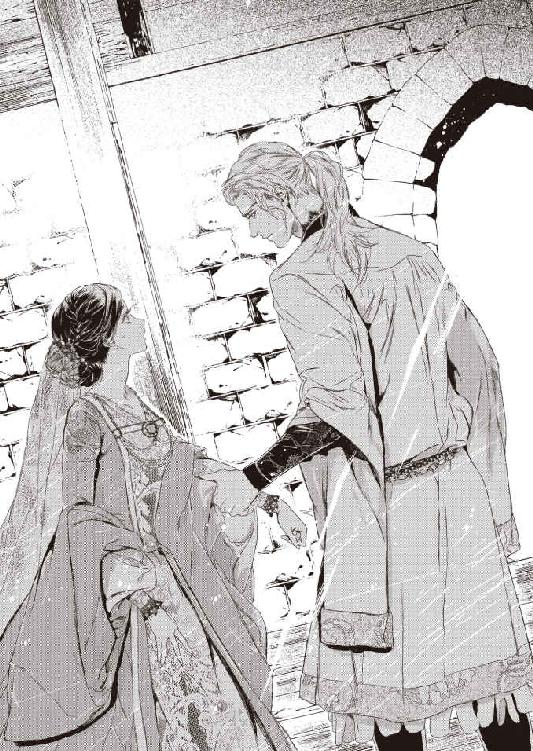
腹立たしげに手首をぐいと引かれる。その瞬間、フィオリーネの脳裏に恐ろしい記憶がよみがえった。
逃すまいと力任せに掴まれた手首。容赦なく引き立てられ、怒鳴られる。
『来るんだ！』
「......いや」
『早くしろ！』
「......いや......っ」
悲鳴を上げて手を振り払う。唖然としたリーンハルトの顔。それが別の人物に見える。ぼやけた顔の誰か。自分を無理やり連れて行こうとした、誰か──。
「フィオリーネ......？」
気を取り直したリーンハルトが、なだめるように手を差し伸べる。それすら彼には見えなくて、ますます怯えたフィオリーネはじりじりと後退った。
「いやぁっ、来ないで！ 触らないで！ わたしは行かない！ 行かないわ！ 離してよっ」
「落ち着け、フィオリーネ。乱暴して悪かったよ」
なだめようとすればするほどフィオリーネは恐慌状態になった。後退る彼女が次第に階段室の入り口へ近づいていくことに気づき、リーンハルトは焦った。このままでは崩れかけた階段を駆け上っていくかもしれない。
「────姫様！」
カトリンが飛び込んでくる。彼女はリーンハルトを無遠慮にぐいと押し退け、フィオリーネに駆け寄った。
「大丈夫です、姫様。わたしです、カトリンですよ」
「カトリン......っ」
しがみつくフィオリーネを抱きしめて背中をさする。
「もう大丈夫です。さぁ、帰りましょう。なんにも怖いことなんてありません。悪者はみんなどこかへ行ってしまいましたよ」
「本当......？」
「本当ですとも。さぁ、お部屋に戻りましょうね」
フィオリーネは幼女のようにこっくりと頷き、カトリンにすがって歩きだした。棒立ちになっているリーンハルトには見向きもしない。視界にすら入っていないようだ。
カトリンはちらと彼を見やり、素早く会釈をしてフィオリーネを塔から連れ出した。
リーンハルトはふたりの後ろ姿を憮然と見送り、駆けつけた執事のアントンに塔の扉に鍵をかけるよう、厳しい口調で命じたのだった。
フィオリーネが落ち着いた頃合いを見計らって、リーンハルトは侍女を執務室へ呼んだ。
「姫の様子は？」
「だいぶ落ち着かれました。蜂蜜酒を少し召し上がって、今は眠っていらっしゃいます」
「そうか」
彼はしばし黙り込み、ためらう風情で顎をさすっていたが、やがてカトリンに視線を戻した。
「あのとき、姫は様子がおかしかった。ひどく怯えて......。むろん、声を荒らげたのは悪かったと思っている。ひどく驚いたもので、つい......。しかしそれだけではないように思う」
カトリンは抑えた声で慎重に答えた。
「攫われそうになったときの記憶が、よみがえったのではないかと」
「誘拐事件か......」
リーンハルトは険しい顔で呟いた。固い表情で侍女は頷いた。
「これまでにも時々さっきのようなことがありました。ここ一年以上は治まっていたので、もう大丈夫かと思ったのですが」
「三年前だそうだな。それ以来、姫は王宮の奥に引き籠もってしまったと、国王陛下からの書状にあった」
「はい。当時十五歳だった姫様は兄上様がたと城下の市場を見物なさっていました。あまり世間知らずでも困ると国王陛下が仰って、お小さい頃から時々宮殿の外へ連れ出されていたのです。姫様もそれをいつも楽しみにしていらして......」
その日は双子の兄とカトリンと一緒だった。護衛の騎士も数名付いていたが、目立たぬように少し離れていた。傍目からは休日を楽しむ騎士の兄妹に見えていたはずだ。
「その頃の姫様は、それは天真爛漫で......。すべての人間は善人だと無邪気に信じておられました」
自分に害をなそうとする人間がいるなど想像だにしなかった。
たったひとりの娘で、末っ子でもあり、家族からも召使からも愛されて大切に育まれた。この国の王女として国民には親切に、寛容に接しなさいと両親に教えられて育った。
もともとおっとりした気質だったので、特に意識しなくても自然と誰にでも優しく接するようになった。
市場には何度か足を運んでいた。王都の市場には珍しい文物も多く、目を楽しませてくれたし、売り子と話をするのも楽しかった。ちょっとした食材を味見させてもらったり、小遣いで気に入った小物を買ったりした。市場の人間も、王女とは思わないまでも可愛らしいお嬢さんだと笑顔で接してくれた。
そんな安心感が、ややもすれば油断に繋がったのかもしれない。
雑多な人々が行き交う場所ではよくあることだが、目の前で喧嘩が起こった。見かねた兄たちが仲裁に入ったがなかなか収まらず、野次馬もどんどん増えた。
カトリンとフィオリーネの間にも囃し立てたりけしかけたりする人間が次々に割り込んできて、いつしか壁ができてしまった。焦ったカトリンは必死に人波を掻き分けたが、そのときにはすでにフィオリーネは無理やり引きずられて連れ去られそうになっていた。
「──たぶん、グルになってる奴らがいっぱいたと思うんです」
悔しそうにカトリンは唇をゆがめる。
追いかけようにも邪魔されてなかなか前へ進めない。そのときは焦っていて、故意に妨害されているとは気付かなかったが......。
カトリンは緊急用の呼子を首から下げていたので、人込みに揉まれながら必死にそれを吹き鳴らした。それで異変に気付いた兄や護衛の騎士たちが抜刀して賊の後を追いかけた。妨害していたゴロツキどもは相手が剣を抜いたと見るや素早く姿を隠した。
市場はひどく混雑しており、単なる通行人も何事かと足を止めたりして、追いかけるのは大変だった。カトリンは双子王子を追って走りながら呼子を吹き続けたので、やがて市場を巡回する警邏隊も気付いて追跡に加わった。
誘拐犯たちは目立たないようにするのを諦め、必死に追手を振り切ろうとした。半ば失神したフィオリーネを担ぎ上げて走っていたが、状況を察した売り子たちが飛び掛かってきて躱しきれなくなり、ついにはフィオリーネを放り出して遁走した。
何人かは捕らえたものの、金で雇われただけの小悪党ばかりで、主犯は結局わからず終いだった。
「正体は全然わからないのか？」
険しい顔で問われ、カトリンはためらった。
「その......。ファラハールの人間らしい......とだけ......」
意表を突かれ、リーンハルトは侍女を見返した。
「ファラハールだと......？ この砦はファラハールとの国境なんだぞ!?」
怒声を浴びてカトリンが首を縮める。リーンハルトは舌打ちをして苦い顔になった。
「すまん。......なるほど、ファラハール人の出入りが差し止められた理由がやっとわかった。どうりで奴らには用心しろと陛下が厳しく仰せになるわけだ。何か陛下の機嫌を損ねるようなまねをしたのだろうとは思っていたが、まさか誘拐の容疑者だったとは」
「事件そのものが伏せられていますから......。もちろん、その場に居合わせた市場の者たちは察しているでしょうが。──御館様はいつお知りに？」
「姫が到着した後だ。陛下からの書状で......。事件の記憶のせいで乱暴に扱われるのをひどく怖がるから、その......、初夜はできるかぎり優しくしろ、と」
「書状を渡すのは結婚式の翌朝にすべきでしたね」
思わずカトリンは呟いた。生真面目なリーンハルトは事態を深刻に受け止めすぎて、優しくするどころか何もしなかったのだから。
「......姫は犯人がファラハール人とは知らないのだろうな？ 国境の砦に自らやって来たくらいだ」
はい、とカトリンは頷いた。
「何故国王陛下は止めなかった？」
「結婚相手とは一緒に暮らしたいと姫様がお望みでしたから......。仲むつまじいご両親の姿を見ながらお育ちになりましたので、夫婦とはつねに寄り添っているものと思われているのでしょう。そのようなお相手と結婚したいというのが、姫様が唯一望まれたことです」
「私を呼び戻せばよかったんだ。守備隊を交替させて......」
「詳しいことはわかりませんが、陛下はファラハールの王が代替わりしたことで、警戒を強めていらっしゃるようです。守備隊が交替する隙を突かれることを懸念されたのではないでしょうか」
淡々と答える侍女に、リーンハルトは低く唸った。シュトルツェーレ城砦の守備隊は隊長に任じられた貴族の持ち兵だ。交替となれば司令官が変わるだけではなく、騎士も兵士もまるごと入れ替わることになる。
「......あるいは、それを理由に結婚を固辞されては困ると思われたのでは？」
皮肉っぽい微笑を浮かべる侍女を、リーンハルトはムッと睨んだ。
「当然だ。婚姻の申し出を断られたファラハール王が、腹を立てて何か仕掛けてくるかもしれない。そんなときに交替などしては自ら隙を作ることになる」
「ですから姫様を公爵様と結婚させるには、お式だけ挙げて姫様を領地で待たせるか、ここへ来て同居なさるかのどちらかだったのですよ。別居はいやだと仰せになりましたので、こちらへ来られるしかなかったのですわ」
リーンハルトはイライラと頭髪を掻き回した。
「そもそもどうして私なんだ？ 別の相手を選べばよかったのに......」
「それ、今でも本気で言えます？」
ズバリと切り込まれ、リーンハルトはぎくっとした様子でそっぽを向いた。
「......私は、妻には絶対安全な場所にいてほしい」
憮然と返すと、カトリンは口許をほころばせた。
「それを御自ら姫様にお伝えくださいませ。......もっとも、お聞き入れになるかどうかはわかりませんけど。素直な方ですが、なんでもかんでも唯々諾々と従うわけではありませんので。どんなにおっとりしていても〈狼王〉ルガート様のご息女ですから」
リーンハルトは眉をひそめ、下がってよいと身振りで伝えた。お辞儀をしてカトリンが下がると、彼は椅子に深くもたれて憮然と溜息をついたのだった。
少し眠ると気分も落ち着き、フィオリーネは取り乱したことが恥ずかしくなった。
カトリンが事情を説明したと聞き、にわかに不安になってあれこれ問い質す。彼は呆れていたのではないか、嫌われてしまったのではないか......。
そんなことはありません、とカトリンは笑って請け合った。
「とても心配なさって、乱暴をして済まなかったと反省しておいででしたよ」
「悪かったのはわたしよ。危ないから入ってはいけないと、ちゃんと聞いていたのだもの」
「いいえ、そもそもミパが悪いんです。──当分おやつ抜きだからね！」
カトリンはせっせと顔を洗っている仔猫を睨んだ。仔猫はきょとんとした顔で見返したかと思うと大口を開けてあくびをした。
がっくりと肩を落とす侍女に、フィオリーネはくすくす笑った。
「そんなこと言ったって猫にはわからないわよ。それより旦那様はミパルティのことを何か言っていなかった？ 飼ってはいけないとか......」
「いいえ、猫のことは何も。姫様のことも怒っていらっしゃるわけじゃありません。危険なところに奥方がいるのを見て、気が転倒したのでしょう。それだけ姫様を大事に思われているってことです」
「そうかしら......」
フィオリーネはほんのりと頬を染めた。
「後で詫びに来られると思いますよ」
「わたしもきちんと謝るわ。また同じようなことがあったら、今度はすぐに誰かを呼ぶことにする」
「そうなさいませ。塔の入り口には鍵をかけましたが、この悪戯っ子は何をしでかすかわかりませんからね」
じろりと睨まれた仔猫はとっくに寝入っていて、カトリンは盛大に溜息をついたのだった。
その夜、ドキドキしながら待っていると、寝室に入ってきたリーンハルトは少し気まずそうな顔をした。
「......昼間は、その......すまなかった」
「いいえ！ わたしこそ、ご心配をかけて申し訳ありません」
急いで謝ると謹厳な表情でリーンハルトは頷いた。話が途切れ、室内に沈黙が落ちる。お互い気まずい感じで視線を泳がせていると、リーンハルトが小さく咳払いした。
「......では、もう休むといい。少し蜂蜜酒でも飲むか？」
「い、いえ。大丈夫です。もう落ち着きましたから......」
ぎくしゃくと微笑んで寝台にもぐり込む。リーンハルトはいつものように寝台の端に腰掛けて上掛けをきちんと掛け直してくれた。
フィオリーネはおずおずと彼を見上げた。
「あの......。本当に、ごめんなさい」
「いいんだ、怒ってない。あのときも怒ったわけじゃなかった。あの塔は少し前に調べたことがあってな......。いいかげん修復しなければと思っていたところだった。本当に危険だとわかっていたから、あなたがあそこにいるのを見て、ひどく動揺してしまった。すまない」
眉を垂れる彼の表情に驚いて、フィオリーネはふるふるとかぶりを振った。リーンハルトはフィオリーネの手を取ると、そっと唇を押し当てた。
「あなたを守ると誓った。なんとしても誓いは守る」
「......はい」
微笑んで彼の指先をきゅっと握る。リーンハルトはもう一度手の甲にくちづけると、フィオリーネの手を上掛けのなかに優しく押し込んだ。
まるで病人を介抱するようなかいがいしい仕種に、『旦那様は過保護です』というカトリンの断定を思い出しておかしくなる。
彼は何気なく火消器に伸ばした手を、ふと止めた。
「しばらく点けておこうか？ そのほうが安心なら」
「あ。はい、ありがとうございます」
暗くされても怖くはなかったが、気遣いが嬉しくてフィオリーネは頷いた。
かすかに目を細め、リーンハルトはそっと頬にキスした。
それがいつもよりほんの少しだけ唇に近かった気がして鼓動が跳ねる。ドキドキしながら見上げたが、彼はいつもと同じ堅苦しい微笑を浮かべただけだった。
「後で様子を見に来よう。......おやすみ」
彼が隣室へ去ると、フィオリーネは軽く失望の溜息をついた。
怖いので寝つくまで側にいてほしいと頼めばよかった。昼間のことがあるから、怪訝に思われることもなかっただろうに。
諦めて目を閉じたが、変な時間に眠ってしまったせいか、なかなか眠気が訪れない。
（......まだ起きていらっしゃるわよね？）
添い寝をお願いしたらどうかと思いつき、フィオリーネは顔を赤らめた。
（そんな、子どもじゃあるまいし......）
でも、今夜は許されるのではないかしら。怒鳴って悪かったと思っていらっしゃるし......。いいえ、そんなつけ込むようなことをしてはだめよね。
悩んでいるとますます目が冴えてしまい、意を決してフィオリーネは起き上がった。
「お話ししたい、って頼んでみましょう」
自分の気持ちをきちんと伝えよう。好きなのだと。彼はフィオリーネが父王の命令でいやいや嫁いできたのだと誤解しているらしいから。
思い切って寝台から降り、フェルト底の室内履きにそっと爪先を入れる。
コツコツ。遠慮がちに隣室の扉を敲いてみた。
「......リーンハルト？ 起きてますか......？」
返事はない。すでに眠ってしまったのだろうか。気まずく思いながら、もう一度、少し強めにノックした。
「すみません。あの、できたら少し、お話を......」
やはり返事はなく、フィオリーネは肩を落とした。仕方がない。諦めようとした瞬間、ふと彼の寝顔が見られるかも......という考えが閃いた。
ドキドキしながら扉を押し開ける。ギィ......とかすかに軋む音に身を縮めながらおそるおそる室内を覗き込んでフィオリーネは目を瞠った。
書き物机の上で蠟燭が一本燃えていたが、寝台にリーンハルトの姿はなかった。寝た形跡もない。
（どういうこと......？）
混乱してフィオリーネは室内を見回した。そっけないほど整然とした部屋は、どこかリーンハルトの人となりを反映しているようにも思える。
見捨てられた気分で、フィオリーネは呆然と立ち尽くした。
朝になって目覚めると、サイドテーブルの蠟燭は途中で消えていた。後で様子を見に来ると言ったとおり、リーンハルトが消したのだろう。その後は隣室で休んだのかしら......。
（......そうよね。きっと何か用事を思い出して執務室にでも行かれたのだわ）
自分に言い聞かせても、やはり納得いかない。それからは就寝の挨拶をした後しばらく待って隣室を覗いてみたが、いつもリーンハルトは不在だった。毎日そんなに遅くまで仕事をしているのかと心配になる。
たまたま夜明け前に目が覚めて覗いたときも、やはり彼はいなかった。寝た形跡もまったくない。もう間違いない。彼はここで休んでいないのだ。
フィオリーネは彼が自室に引き取ると、一心に耳を澄ませるようになった。分厚い樫の扉越しではよくわからなくて、思い切って寝台を抜け出して扉に耳を押し付けてみる。
それでもほとんど物音がせず、叱られるのを覚悟で扉を開けてみると、すでに部屋は無人だった。呆気にとられてしばらくフィオリーネはその場に突っ立っていた。
つまり彼はこの部屋にひと時も留まっていないということだ。おやすみを言って寝室に通じる扉を閉めたらそのまま反対側から出ていってしまうのだろう。
（いったいどこでお休みになっているのかしら）
それよりなぜ、ここで休まないのか？
（......隣で休むのも嫌なの？）
そんなに嫌われていたのかとフィオリーネはショックを受けた。少しずつ距離が近づいていると思ったのに、ただの思い込みだったなんて......。彼にとって自分はやはり主君から無理やり押し付けられた迷惑な妻だったのか。
カトリンに愚痴るのも気が引ける。何事もなかったようにふるまいながら、心の中には次第に澱のようなものが溜まっていった。
面と向かってリーンハルトに質すのもためらわれた。肯定されればショックだし、否定されてもかえって疑ってしまいそうだ。ギクシャクするのは嫌だけど、いつまでも知らないふりを続けるのは無理がある。
ある夜、フィオリーネは扉が閉まると同時に跳ね起き、閉まったばかりの扉に耳を押し当てた。別な扉が静かに閉まる音が聞こえる。すぐさま扉を開け、無人の部屋を駆け抜けて反対側の扉に取り付いた。
細く扉を開けて廊下を覗くと、小さな灯が角を曲がるところだった。
こっそり後をつけると彼は渡り廊下を通って城壁の上の通路に出た。足音を忍ばせてフィオリーネも続く。室内履きはフェルト底なので足音はほとんどしない。
リーンハルトは東の塔へ向かった。身を隠すところがないので、フィオリーネは角に身を潜めて彼の姿を目で追った。月のない夜で、星明かりで見えるのは黒い人影だけだ。
灯が塔の中に消えるのを待ってフィオリーネはそろそろと通路を歩いた。走るのは少し怖い。
各塔は上にも部屋があるとアントンから聞いたが、歩哨の詰所となっている南の塔以外は使われていない。捕虜がいれば牢として使われることもあるそうだが。
暗闇のなか目を凝らして階段を見上げる。かすかに壁に灯が反射しているようだ。先日、北の塔に登って怒られたことを思い出すと確かめにいくのもためらわれた。フィオリーネはそっと塔を離れ、城壁の歩哨路から見上げた。
窓から灯が射している。やはりリーンハルトは塔の最上階の部屋にいるのだ。
（まさか、毎晩あそこで休んでいらっしゃるの......？）
フィオリーネはしばらく塔を見上げていたが、やがて歩哨兵の持つランタンが近づいてくることに気付いて急いで寝室に引き返した。
たまたまかもしれない......と何度か確かめてみたが、やはりリーンハルトは毎晩東の塔へ足を運んでいた。どういうことだろうとフィオリーネは悩んだ。同衾するのが厭でも隣で寝るくらい......。
ふと思いついて侍女に尋ねる。
「ねぇ、カトリン。ひょっとしてわたし、いびきをかくのかしら」
「は？」
カトリンは面食らって聞き返した。
「かきませんよ？ 何故そんなことを」
「もしかして、わたしのいびきがうるさくてリーンハルトは寝室に来ないんじゃないかと思って......」
「な、何を仰います!? 姫様のいびきなんて聞いたことありません。いつもスヤスヤと静かにお休みですよ！」
「気をつかわなくていいから本当のことを言ってちょうだい」
「本当ですってば！」
眉を吊り上げて断言したカトリンは、ハッとして指を鳴らした。
「それです！ きっと旦那様がいびきをおかきになるのです！ それを気にして別々にお休みなのです」
確かめてきますっ、と止めるまもなく飛び出して行ったカトリンは、すぐにガッカリした様子で戻ってきた。従者に確かめたところ、リーンハルトが常習的にいびきをかくことはないそうだ。
「姫様。やはり、はっきりと要望なさるのが一番だと思います」
「要望って......？」
「一緒に寝ましょう！ と」
フィオリーネはみるみる赤くなった。
「そ、そんなこと言えないわ。は......恥ずかしいもの......」
「正式に結婚した夫婦なのですから恥ずかしくなんてありません。当然のことです」
「でもわたし......嫌われてるかもしれないし......」
消え入りそうな声で呟くと、聞こえなかったらしく怪訝そうにカトリンは首を傾げた。
「はい？」
「な、なんでもないわ。その......、努力......して、みます......」
「ぜひに」
大きくカトリンは頷いた。
結局何も言えないまま日々は過ぎた。何事もないようにふるまったつもりだが、どこかしら不自然な感じはリーンハルトにも伝わってしまったらしい。具合でも悪いのかと尋ねられた。なんでもないと笑顔で答えるとそれ以上は問われなかったが、納得してはいないようだ。
混乱はますます深まった。大事にされているのか嫌われているのか、はたまた無関心なのか、すっかりわからなくなってしまう。その全部であるような気さえする。
カトリンが言うように、はっきりと問い質せば済むことだと自分でも思う。簡単なはずのそれが、ひどく難しい。というより怖いのた。
（......臆病だわ、わたし）
三年前の無邪気な自分なら、きっと訊けただろう。あの事件以来、何事に対しても臆病になってしまった。
庇護されるだけの存在から脱しようと決意したはずなのに。あのときの恐怖がよみがえったとたん怖じ気づいてしまった。
リーンハルトが本心では自分を迷惑に思っているのでは......と想像しただけで、目も耳もふさいでひたすらおとなしく、小さくなっていなければという強迫観念に捕らわれる。
そうしないと見捨てられてしまいそうで......。
あの堅苦しい微笑さえ向けられなくなるのでは。そっと頬に触れる唇のあえかな感触。そんな不確かなものにさえ、しがみついていたい。
そんな自分がすごく情けなくて、自己嫌悪でますます口は重くなった。
フィオリーネは城壁の上をよく散歩するようになった。見晴らしがいいから......とか言いながら、本当は東の塔が気になって仕方がないのだ。リーンハルトが毎晩休んでいる部屋を覗いてみたい。
考え事がしたいのでひとりにしてほしいと頼み、鬱々とした気分で城壁を歩いていたフィオリーネは、ふと聞こえてきた衛兵たちの声に足を止めた。
ちょうど歩哨詰所のある南の塔に差しかかっていた。どうやら交替の時間らしい。南の塔は城門塔にも近く、下に降りればすぐ隣に騎士の詰所がある。
「ゴルツの城市で一杯やるか」
「いいな！ 久しぶりの休日だ」
朗らかな笑い声が響いてくる。兵たちは休日にはよく町の居酒屋へ行くのだと、執事のアントンが言っていた。
「──そういえば、殿は最近さっぱりお出ましにならないなぁ」
「馬鹿。殿は新婚だぞ」
「ああ、そっか」
「何しろ王女様だもんなぁ。町の酒場になんぞ出入りしてたらご機嫌を損ねちまう」
「エーリカが寂しがってるな。なにせ殿に夢中だから」
どっと笑いが起こる。
「仕方ないさ。当分は奥方のご機嫌取りで忙しいんだって言っとこう」
それ以上聞いていられなくなってフィオリーネはそろそろと後退った。早足で居館に戻り、少し頭痛がするから休むと言って寝室に引き籠もる。
（......誰の、こと......？）
エーリカ。リーンハルトに会えなくて寂しがっているという女性。
もしかして、彼の恋人......？
そう......、そんな人がいたっておかしくはない。
ふとフィオリーネは気付いた。東の塔からも城市が見えるのではないだろうか。居館を挟んで反対側になるけれど、城壁塔の最上階なら見えるはず。
いつも灯は居館側の窓から強く射していた。そちら側に彼はいたということだ。
そして、フィオリーネのいる居館の頭越しに、町を眺めていた。そこにいる恋人──エーリカに思いを馳せながら......。
打ちのめされたフィオリーネは晩餐の席でもふさぎ込んでいた。
もともと夫婦揃って無口なほうなので、ふだんから食卓は賑やかとは言い難い。それでもだんだんと慣れてきて、その日の出来事など互いにぽつぽつと話すようになっていたのに、今日はおざなりな相槌を打つばかりだ。
リーンハルトもさすがにおかしいと思ったらしく、気分でも悪いのかと気づかわしげに尋ねられた。フィオリーネはこわばった笑みを口の端に浮かべてかぶりを振った。
「なんでもありません」
「そうは思えないが......」
呟いたのは返事なのか、いつもの独り言か。イラッとしたフィオリーネはつっけんどんに言い返した。
「少し気がふさいでいるだけですわ」
リーンハルトは軽く目を瞠り、またどちらともつかない口調で呟いた。
「......城に閉じこもっているのがよくないのかもしれないな」
別に閉じこもっているわけでは──と抗議しかけて、ふと閃いた。
「そうだわ！ 城市へ行ってみたいです」
「城市へ？」
怪訝そうなリーンハルトに、挑みかかるような冷笑を浮かべて頷く。しらを切っても無駄よ。
「ええ。結婚式の祝宴で、ゴルツ城伯夫人からご招待いただきましたの」
「城伯夫人......？」
ぴくりとリーンハルトの端整な眉が動く。
「ゴルツの城市にはおもしろいものがたくさんあるんですってね。アントンから聞きました。珍しいファラハールの文物もここでなら見られるとか......。あの国とはもう国交がないから」
「......っ、だめだ！」
強い口調で遮られ、目を瞠る。さっと顔をこわばらせると、リーンハルトは慌ててなだめ口調になった。
「いや、だめというわけではない。ただ、今はちょっとやめておかないか？ もう少し落ち着いてから、ゆっくりと──」
「わたしはとっくに落ち着いています」
ムッとして言い返すとリーンハルトは困ったように眉を垂れた。
「ああ、わかっているとも。ただ......」
「わたしを城市へ行かせたくない理由でもあるんですか」
「何を言うんだ」
とげとげしい口調に、心底驚いた様子でリーンハルトは目を瞬いた。それが妙に芝居がかって見え、フィオリーネはぷいとそっぽを向いた。
「もうけっこうです。砦でおとなしくしていますわ」
「フィオリーネ......。いったいどうしたというんだ。何が気に入らない？」
「別に何も」
頑なな表情に、困り果てた様子でリーンハルトが溜息をつく。諦めたのか、呆れたのか、彼はそれ以上尋ねなかった。それもまた癇に触って、ますます意固地な気分になった。
晩餐は正騎士たちも同じ部屋で摂るが、基本的にテーブルは別だ。この食卓に着いているのはフィオリーネとリーンハルトのふたりだけ。お互い黙り込んでしまうと、気を利かせる者もおらず、非常に気まずい。
いたたまれなくなって食事を切り上げようとすると、リーンハルトが改まった調子で軽く咳払いをした。
「その、考えたのだが......。あなたは領地で暮らしたほうがいいのではないかと思う」
フィオリーネはぽかんと夫を見返した。
「領地......？」
「リンドホルム公爵領だ。あそこは王都にも近く、安全だ。あなたも安心できるだろう」
しかつめらしい顔を呆気に取られて見返していたフィオリーネは、急にむかむかと腹が立って眉を吊り上げた。
「そんなにわたしが邪魔なの......!?」
「邪魔？」
リーンハルトが目を瞠る。そんな驚きさえわざとらしく思えてならず、フィオリーネはキッと彼を睨んだ。
「わたしがここにいると都合が悪いから追い出すのでしょう」
「そんなわけないだろう。あなたは国王陛下からの大事な預かりものだ。国境近くでは何かと不安で不便も多いと──」
その先の言葉は耳に入ってこなかった。
（預かりもの......？ わたしは『預かりもの』なの？ 『妻』ではなく......）
いつか返すもの。一時的に手許に預かっているだけのもの。リーンハルトにとって自分は、そういう一時預かりの『客』でしかなかったのか──。
フィオリーネは掴んだナプキンを叩きつける勢いでテーブルに置いた。
「──わたしはどこへも行きません。ここにいます。絶対に......、絶対に、ひとりでなんか行くものですか......！」
言い返す暇を与えず、晩餐室を飛び出した。
涙がにじみそうになって、ぎゅっと唇を噛む。悔しいのか悲しいのか、自分でもよくわからなかった。
呆気に取られて見送っていたリーンハルトの隣に、ジークヴァルト卿が静かに腰を下ろした。
「いかがなさいました。奥方と喧嘩でも？」
「......わからん」
気を取り直して渋面で唸る。
「先に領地へ戻ってほしいと言ったら急に怒りだしたんだ」
「それは......、お怒りになってもおかしくありませんな」
一回り年上の騎士は、やれやれといった風情で嘆息する。
「何故だ!? 私はただ、国境に近いここでは何かと不安だろうし、不便なことも多いだろうから、と......」
「田舎なのは承知の上でいらしたはずです」
「しかし、都育ちの姫君だし......。後悔してるかも......」
歯切れ悪く言い返すリーンハルトに、ジークヴァルトはまた溜息をつく。
「今までに奥方が何か不満を洩らしたことがありますか？」
「ないからこそ気になるのだ。我慢して、無理をしているのではないかと」
真剣に思い悩む主に、騎士は肩をすくめた。
「確かに、我慢して無理しているようにお見受けしますな」
「だろう!?」
「殿にすげなくされて、とても傷ついておられるご様子です」
意気込んだリーンハルトは、思いがけない返しにたじろぎ、ムッとした。
「すげなくなどしていない」
「傍目にはそう見えるのですよ。殿のご気性を把握していない人には、特にね」
「そうなのか......!?」
愕然とする主を、気の毒そうにジークヴァルトが見やる。
「殿が女性の扱いに長けていないことは、侍女を通じて奥方様もご理解いただけているかと思いますが。それにしても、もう少し優しくされてもよろしいかと」
「精一杯優しくしている！ ......つもりだ」
「殿が、こと女性に関しては大変に不器用でいらっしゃることは、我々側仕えの者は重々承知しております」
しかつめらしくジークヴァルトが頷くと、リーンハルトは気まずそうな顔になった。
「......やはり、先日怒鳴ったのがまずかった。自分でも驚くほど慌ててしまって......」
ふ、とジークヴァルトは微笑んだ。
「私としては人間らしい殿のお姿を拝見して非常に微笑ましかったのですが、まだよく殿の人となりがわからない奥方には通じなかったかもしれませんな。──それにしても、あのときの取り乱しようには驚きました。怒鳴られて驚いたにしても少々尋常でなかったような......」
「それなんだが......」
少し躊躇したが、リーンハルトは侍女から聞いた誘拐事件の顛末を側近に打ち明けた。真剣に聞き入っていたジークヴァルトは太い眉を吊り上げた。
「なんと......。そのようなことがあったのですか」
「もっと早く言ってほしかったよ」
憮然とする主をなだめるように騎士は微笑んだ。
「聞いていたら殿はなんとしても姫君をシュトルツェーレ城砦には来させなかったでしょう。一旦領地へ戻って式を挙げ、新妻をほったらかしにして早々に逃げ帰ってきたのでは？」
「逃げ帰るとはなんだ」
ムッとリーンハルトは側近を睨んだ。
「逃げているではありませんか、ずっと。誰かを愛することから。その結果、傷つくことを恐れていらっしゃる」
付き合いの長い側近は容赦がない。ふいっとリーンハルトは顔をそむけた。
「......怖いのは相手を傷つけてしまうことだ。私に好意を抱いてくれるなら、尚更」
「奥方は殿を慕っておられますよ。目つきからして明らかです」
断言され、リーンハルトの白皙の顔がうっすら上気する。ジークヴァルトはにっこりした。
「殿とて憎からず感じていらっしゃるのでは」
「......愛らしい方だと、思っては、いる......。だから──」
「だから？」
「よけいに、どうすればいいのか見当もつかん......」
掌に顔を埋めて深々と嘆息する主を、騎士は呆れたように眺めた。
「お心のままになさればよろしいのでは」
「だめだ！ そんなことをしたらきっと姫を傷つける。いや、傷つけるどころか......」
ごくり、とリーンハルトは喉を鳴らした。
「殿」
「──そんなことになったら、国王陛下にも王太子殿下にも申し訳が立たない。たとえ死んで詫びたところでけっして許されない。けっして......」
「......あの件に関しては、国王陛下が否定なさったではありませんか」
「私が信じられないのは陛下ではない。自分自身なんだ」
リーンハルトはこわばった顔で呻いた。騎士も黙り込み、しばし沈黙が落ちる。やがて騎士は穏やかな声音で話し始めた。
「たとえ殿がご自分を信じられなくても、私は殿を信じます。陛下も殿を信じておられる。だからこそ、大事なご息女を嫁がせた。そうは思われませんか？」
「......」
「奥方は殿が歩み寄って来られるのを待っていらっしゃるのですよ。奥ゆかしい姫君ゆえ、ご自分からは言い出せないのでしょう。そういうところがまた、なんともいじらしいではありませんか。殿の奥方でさえなければ私が自ら求婚しているところです」
「な、何!?」
きっぱり言われ、リーンハルトはギョッとした。
「私なら、けっして姫に寂しい思いなどさせません。しっかり懐に抱いて毎日愛の言葉を囁きます。それこそ耳にタコができるくらいにね」
「い、いかん！ 姫は私の妻だぞ」
「形だけのね」
「......っ」
怯む主に、騎士はニヤリと不遜な笑みを浮かべた。
「無礼を承知であえて申し上げますが、今のままではいかに大事にしようと、殿のお心が奥方に伝わることはありません。いや、ありえません。誤解が積み重なった挙げ句、早晩離婚の危機に直面することになるでしょう。まぁ、そうなったらなったで、即座に私が求婚しますので何もご心配は──」
最後まで聞かず、リーンハルトは無言で席を立った。
ニヤニヤと顎を撫でたジークヴァルトは、別のテーブルで耳をそばだてている騎士たちに向かってぐっと親指を立てた。騎士たちはどっと沸きたち、酒杯を掲げたのだった。
部屋に逃げ帰ったフィオリーネは、心配するカトリンになんでもないと言い張って湯浴みの用意をさせた。
そそくさと就寝前の身繕いを済ませ、追い出すように侍女を下がらせてベッドにもぐり込む。身を隠すように頭の上まですっぽりと上掛けをかぶってフィオリーネは唇を噛んだ。
動揺して取り乱したことが恥ずかしい。きっと呆れられた。いつまでもお姫様気分の抜けない、わがままな女だと軽蔑されてしまった。
（あんなにカッとなるなんて......どうかしていたわ）
思い出すほどに恥ずかしく、自分が情けなくなる。
（謝らなくちゃ......）
リーンハルトの側にいたい。彼の言うとおり、王都の近くは国境沿いのここよりずっと『安全』だ。しかしもはや『安心』してなどいられそうにない。離れ離れになったらすぐに忘れられてしまいそうで。今だって、彼の心にフィオリーネの居場所はほとんどないのに。
（忘れられるなんて、いや）
いくら大切にされたって、名ばかりの妻なんて──。
意地を張って居残ったら余計に嫌われてしまうかもしれない。少しでも好かれたいなら言うことを聞くべきなの？ だけどここから去ればきっとすぐに忘れ去られてしまうわ。
矛盾する想いの落としどころが見つからず悶々としていると、ギィと扉の開く音がした。ノックもなしに開けるのはリーンハルトだけだ。焦ったフィオリーネは謝ろうと思ったことなど頭から跳んでしまい、上掛けをかぶったままぎゅっと目を閉じて縮こまった。
抑えた足音。近づいてくる気配。じっと見下ろす視線を感じる。かすかな溜息とともに寝台がたわみ、傍らに彼が腰を下ろした。
「......眠ったのか？」
低い囁き声に唇を噛む。起きていますと言えばいいのに。どうしてこんなに意固地になってしまうのだろう。
そっと彼の手がリネンの上から頭に触れ、すぐに離れる。それ以上問うことなく、彼はしばらく黙ったまま座り込んでいた。
やがてまた溜息が聞こえ、彼は独りごちた。自らに言い聞かせるように。
「明日、謝ろう。朝一番に」
ふたたびリネン越しにそっと頭を撫でられる。それがまるで拗ねた子どもに対するようで悔しくなる。実際そうなのだから、余計に。
「おやすみ」
優しく囁き、静かに彼は出ていった。扉が閉まる。フィオリーネは身を縮めたまま一心に耳を澄ませた。かすかに別の扉の開閉音が聞こえた気がした。
もそもそと起き上がり、膝を抱えて嘆息する。
どうして素直になれないのかしら。誰かを好きになると意固地になってしまうもの？
ぎゅっと膝頭を抱え込む。彼の側にいたい。でも彼はそれを望まない。
嫌われてはいないと思っていたけれど、勘違いだったかも。人に嫌われた経験がほとんどないから。そういう世間知らずで鈍いところが、リーンハルトには不満なのかもしれない。
（......そうだわ。何が不満なのか、きちんと訊けばいいのよ）
わからないことを尋ねるのは恥ではないと父は言っていた。知ったかぶりこそ恥じるべきだと。
ただ推し量るばかりでやきもきしていたが、その前に自分の気持ちをきちんと伝えただろうか？ 気心の知れた家族や察しのよい召使に囲まれていたせいで、自分の気持ちを伝えるということをしていなかったのではないか。彼の気持ちを聞くことも。
自分たちはまだ『他人』なのだ。結婚したからといって、すぐに気持ちの通じ合える『家族』になどなれるわけがない。
（わたし......、甘えていたんだわ）
彼のことを何も知らないのに。一緒にいれば自然とわかってもらえるはずだなんて、傲慢にも思い込んで。
寝台から降り、室内履きに足を入れる。燭台の蠟燭は灯ったままだ。いつもならおやすみの後にリーンハルトが消していくのだが、彼もまたあの諍いで気もそぞろだったのだろう。
フィオリーネは燭台を手に、リーンハルトの居室へ続く扉を開けた。無人の部屋を通り抜けて廊下に出る。夫婦の寝室は廊下から直接入れない造りなのだ。
居館と城壁を繋ぐ渡り廊下は木製の櫓で覆われているが、矢狭間は開閉式で、平時は上げてあるので風がよく通る。吹き消されないように、炎に手をかざしてそろそろと進んだ。
歩廊には人の姿はなかった。歩哨は一時間置きで、そのあいだは塔から見張りをしている。哨兵に出くわすこともなくフィオリーネは東の塔に辿り着いた。見上げると、やはり居館側の窓から光が洩れている。
意を決し、上階へと続く螺旋階段を昇り始めた。ぐるりと一周するとアーチ型の戸口が見えてきた。扉は開いている。
フィオリーネは足音を忍ばせ、そっと中を覗き込んだ。ほぼ反対側の窓辺に燭台が置かれ、リーンハルトが座っていた。片膝を立てた恰好でぼんやり外を眺めている。
町を眺めているのかと思ったとたん、猛烈に腹が立った。妻の頭越しに愛人に想いを馳せるなんてあんまりだ。
「──そんなに逢いたいのなら逢いに行けばいいわ。わたしに遠慮なさらなくてけっこうよ」
声高に叫ぶと、リーンハルトは弾かれたように振り向いた。
「フィオリーネ......？ 何をしてる。寝たのではないのか」
慌てて歩み寄った彼の手を、ぱしりと撥ね除ける。
「夫がひそかに余所の女性を偲んでいると知りつつ眠れると？ あいにくそこまで達観できていませんの」
「余所の女性？」
混乱してリーンハルトは目を瞬いた。中途半端に手を伸ばしたまま、困惑しきった顔でフィオリーネを見つめる。
「いったい誰のことだ。おかしな夢でも見たのかい？」
「夢じゃないわ！ 聞いたのよ。あなたには町に好きな女性がいるって。エ......、エーリカよ」
「エーリカ......？」
リーンハルトは眉をひそめ、真剣な面持ちで考え込んだ。
「......そんな名前の女性は知らない。勘違いじゃないのか」
「勘違いじゃないわ！ 衛兵たちが喋っているのを聞いたもの。あなたが結婚して来なくなったから、エーリカが寂しがってるって」
まじまじとフィオリーネを見返していたリーンハルトは、ふと眉をひそめた。
「衛兵......？」
「しらばくれても無駄よ！ わたしを妻にする気がないなら、はっきりそう言って。あなたはただ、王女を飾っておければいいのでしょう？ 自分の地位を示すために、自負心を満たすために。高貴な身分の人形を、ただ大事に、綺麗に、飾っておきたいだけなんだわ」
思ってもみなかった言葉が次々に口から飛び出すことに自分で驚いた。いや、これこそがきっと本音。抑え込んでいた不満、不平が限界を越えてあふれだしたのだ。
憂いをおびたまなざしを窓外に向けるリーンハルトの姿に、王女としての矜持と義務感とでかろうじて保たれていた理性の蓋が吹き飛んだ。
大事にされていると思っていた。それは国王からの『借り物』だったから。
優しくされていると思っていた。無関心をただ礼節で糊塗しただけだった。
少しくらいは好かれていると期待していたのに、結婚前から続く愛人がいたなんて──。
呆気にとられていたリーンハルトの表情が、次第に険しくなる。我に返ってフィオリーネは後退った。
「ご......、ごめんなさ......っ」
逃げ出そうと身を翻したとたん、腕を掴んで引き戻される。冷ややかな瞳が間近に迫り、フィオリーネは竦み上がった。
「心外だな。自負心を満たすためのお飾り人形など、私には必要ない。人形を飾って眺める趣味もない。──私はね、これでも精一杯礼儀正しく、優しくしたつもりなのだよ。あなたの安全のために」
「......!?」
「なのにあなたはのこのことやって来てしまった。自ら、怪物の元へ」
「か......怪物......？」
フッと彼は自嘲の笑みを浮かべた。
「知っているのだろう？ 私が婚約者を殺して喰ったと言われていることを」
「た、ただの噂だと......」
「火のないところに煙は立たない......と言うじゃないか？」
耳元で囁かれ、ぞくりと皮膚が粟立った。恐怖というよりも、どこか背徳的な甘さがふくまれた感覚──。
「う......嘘よ......、そんなこと、あなたは......しないわ......」
「何故わかる」
「お父様が仰ったもの......。お兄様も......」
彼は呆れたように鼻を鳴らした。
「自分で言うとおりのお人形か......。父や兄の言葉なら疑いもせず信じ込む。自分の頭では何ひとつ考えない」
皮肉られ、カッとなって睨み付ける。
「わたしが父や兄を信じるのは人として尊敬しているからよ！ わたしは『信じる』と決めたの。あなたがどう思おうと、自分で決めたの。あなたを信じると」
まっすぐに見つめられ、一瞬リーンハルトの瞳がたじろいだように揺れる。だがすぐにいっそう憐れむような冷笑が唇をゆがませた。
「......残念ながらそれは間違いだ」
「間違ってなどいません！」
「恥じることはない。人間、誰しも間違うことはある。ましてやあなたは誰からも愛され、大切にされた姫君だ。人を疑うことを知らずに育ったのだから仕方がない」
「今は知っています。世の中には悪い人もいるのだと、ちゃんとわかってる。だけどあなたは違うわ。噂されてるようなことをする人じゃない」
「──何故わかる!?」
声を荒らげて詰問され、フィオリーネはびくりと身を縮めた。端整な顔を怒りと苦悩とでゆがめ、彼はギリッと歯ぎしりした。
「自分にすらわからないことが、私のことをろくに知りもしないあなたにどうしてわかるというのだ!?」
「あなたを見ていたもの！ ここへ来て、初めて会ったときからずっとあなたを見てた。あなたのことが知りたくて......、どうすれば好きになってもらえるかと......。ずっと......見ていたのよ......！」
「何を......馬鹿な......」
うろたえたようにリーンハルトの視線が揺らぐ。フィオリーネは涙のにじんだ瞳でキッと彼を睨んだ。
「そうよ、馬鹿だわ。あなたには他に好きな人がいるなんて、思いもしなかったんだもの。わたしの頭越しに愛人に想いを馳せているとも知らず、いつになったらベッドに来てくれるのかと悩んでた。立派な奥方になれば、きっといつかは見直してくれるはず......なんて自分を励ましたりして」
喉が詰まって言葉が途切れる。フィオリーネは唇をきつく噛み気を落ち着かせようと努めた。
「......もう、結構です。お邪魔なのはわかりました。お望みどおりひとりで領地へ参りますわ。ものわかりのよい妻にはなれませんけど、夫のことを悪しざまに罵ったりはしないから安心して。せいぜい公爵夫人らしく務めます。あなたに恥をかかせないように......。それでもご不満なら、頃合いを見て離縁してさしあげます。子どもができないから別れたいと言えば、やむを得ないとお父様も許してくださるでしょう」
精一杯の皮肉を込めて言い放ち、くるりと背を向ける。一歩踏み出したとたん、いきなり視界が廻って身体が浮き上がった。
「......!?」
有無を言わさず抱き上げられたのだと気付いたのは、寝台にどさりと下ろされてからだった。夫婦の寝室のような広々と豪華な寝台ではない。仮寝用とおぼしきごく簡素な寝台だ。
混乱して見上げると、怒りをはらんだ瞳が鋭くフィオリーネを見据えていた。
「あいにくだが、あなたと離縁する気はない」
「か......勝手なことを言わないで！」
抑え込まれた手首をもがかせながら必死に睨み付ける。
「愛人と別れもせず、お飾りにわたしを据えておこうと言うの!? 最低だわ......！」
「やっと自分の過ちを認める気になったか。......そうだ、私は姫君にはふさわしくない、最低の相手だ。そのような男に大事な娘を嫁がせた父王を恨むのだな」
言い返そうとした唇を強引にふさがれて、フィオリーネは目を見開いた。
「んッ......!?」
いやいやと懸命に首を振っても噛みつくようなキスは深まる一方だ。角度を変え、唇全体を食むように貪られる。
混乱で瞳に涙が浮かんだ。手首だけでなく、全身を使って押さえ込まれて身動きすらままならない。
息苦しさに抵抗が弱まると、やっと唇が解放された。
「......別れることなどできるか」
怒り混じりにリーンハルトは吐き捨てた。それが愛人のことなのか、自分のことなのか、わからないままふたたび唇をふさがれる。
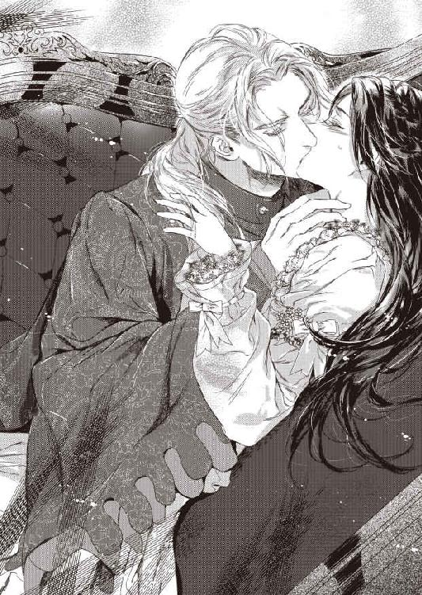
「......っ、ぅ......！」
ぬるりと熱い舌が入り込む。涙の溜まった瞳をいっぱいに見開き、フィオリーネは身体を硬直させた。きつく舌を絡め、痛むほどに吸い上げられる。荒々しく息を継ぎながらリーンハルトは執拗にフィオリーネの唇と舌を舐めしゃぶった。
くちづけがこんなにも激しいものだなんて──。結婚式の、そっと唇を重ねただけのキスしか知らず、想像だにしなかった。
ぽろぽろと涙がこぼれる。リーンハルトは舌打ちしてフィオリーネを睨んだ。
「今さら泣いたって遅い。精一杯礼儀正しく、大事にしていたのに......。ぶち壊したのはあなた自身だ」
「ちが......っ、わた、し......」
「違わない。あなたは私を獣にする。......あなたを喰い殺せば、国王陛下が私を討ち果たしてくださるだろう。それがいい......それでいいんだ......。だが、あなたは......。ああ、可哀相な姫君。何故ここへ来たのだ。何故、私の前に姿を現した。そうすべきではなかったのに......」
うわ言のように呟きながら、リーンハルトはフィオリーネの唇を吸いねぶり、震える喉元を熱い舌でねっとりと舐め上げた。
恐怖とは違った感覚で、ぞくぞくと鳥肌がたつ。お腹の奥の方が、ずくりと不穏に疼いた。秘めた部分が刺すように痛くなり、混乱でまた涙が盛り上がる。
薄い夜着の上から両の乳房をぎゅっと掴まれ、息が止まった。がっしりとした武骨な手で、ぐにぐにと容赦なく揉み絞られる。フィオリーネに触れるときは、いつだってためらいがちで、壊れ物を扱うかのようだったのに。
（わたしは間違っていたの？ あの噂は事実だったの......!?）
信じたくない。信じたくなかった。あんな身の毛もよだつ恐ろしい噂など。本当は優しい人なのだと信じていたかった。ただ口下手で不器用なだけで......。
もうわからない。何が本当なのか、嘘なのか。何を、誰を、信じればいい？ 溜まった涙が眦からとめどなくこぼれ落ちる。
ふ、と頬に優しい感触が触れた。濡れた睫毛をぼんやり瞬くと、リーンハルトがひどく苦い顔で見下ろしていた。
彼は「くそっ」と毒づいて身を起こした。
「明日、領地へ戻れ。離縁したければ......好きにしろ」
ぶっきらぼうに吐き捨て、顔をそむけてしまう。
フィオリーネはぎくしゃくと起き上がった。頑なな夫の背中を見つめ、ぎゅっと拳を握りしめる。
別れるつもりはないというのは、やはり愛人のことだった。命令に従えば彼を失うことになる。永遠に。
（そんなのは......いや......！）
ベッドに座り直し、胸元を留めているリボンを解く。いつまでも立ち上がろうとしないフィオリーネに不審を抱いたのか、リーンハルトは振り向いてギョッと目を剥いた。
「何をしてる!?」
焦る彼にはかまわずフィオリーネは夜着を脱ぎ捨てて裸身をあらわにした。
「──比べて、ください」
「な、に......？」
羞恥に顔を赤くしながら、それでも己を奮い立たせて言いつのる。
「あなたの想う人と比べてください。わたしだって、そんなに悪くないと思います......！」
唖然とする彼をあえて強く睨み付ける。そうでもしなければ泣きだしてしまいそうで。
「この砦へ来たのはあなたの妻になるためです。愛人の存在など絶対に許しません。夫を誰かと共有するなんて、まっぴらです。だから──、あなたを、奪い取ることにします......！」
「奪う......？」
ますますリーンハルトは唖然とした。できるかぎり高慢にフィオリーネは頷いた。恐れを知らぬ自負心の塊のような王女に見えればいい。
「わたしのことを、愛人よりも気に入っていただきます。どんなことをしてもあなたを、えっと......、ろ、籠絡？ して、みせるわ！」
呆気に取られて見返していたリーンハルトが、くっと喉を鳴らして失笑する。
「籠絡？ 王女であるあなたが......？ ふつう逆だろう」
「し、仕方ないわ。わたしのほうが後から来たんだもの」
顔を赤らめるフィオリーネを斜に眺め、彼は肩をすくめた。
「私を夢中にさせて、愛人から奪い取る......か。変わった姫君だな。あなたは王女なのだから『別れろ』と命じればいいのに」
「命令してあなたの心が手に入るの？」
「獣に心などない」
吐き捨てる彼をキッと睨む。
「あなたが獣だなんて思いません！」
彼は深々と嘆息した。
「まだ言うか。蝶よ花よで育った王女様らしいな。頭の中は綺麗なお花畑と見える」
「ひどいわ......！ もしもあなたが本当に獣なら途中でやめたりしないでしょう。欲望の赴くまま喰い殺していたはずよ」
リーンハルトは舌打ちした。
「よく口の廻る姫君だ。そんなに私の外見が気に入ったのか？ 見た目だけは佳いらしいからな......。それとも王女としての矜持が許さぬか」
「なんとでも言えばいいわ。わたしはあなたの身も心も独占すると決めました。他の誰にも渡しません。絶対に」
「そのためには獣に身を投げ出すことも厭わぬと？ 愚かな......」
「言ったでしょう。あなたを獣とは思わない」
リーンハルトの瞳に怒りが閃く。次の瞬間、フィオリーネはふたたびベッドに押し倒されていた。
剥き出しになった乳房を鷲掴み、憤りのにじむ声音で彼は囁いた。
「ならば獣に引き裂かれ、自分の驕慢さを悔いるがいい」
「ひっ......」
じゅぅっと乳首を吸われ、悲鳴を上げる。リーンハルトが嘲笑った。
「この程度で悲鳴を上げるとは、口ほどにもない」
「お、驚いただけです！ 初めてだから......」
「それで手加減してもらえるとでも？」
くっと唇を噛む。
「......好きになさればいいわ」
「意固地な姫だな」
呆れた声音に睨み付けると強引に唇をふさがれた。荒々しく乳房を捏ね回しながら絡めた舌をこすり合わせ、唾液を啜られる。
「──いいことを思いついた。賭けをしないか？」
貪るようなくちづけの合間に彼が囁く。
「か......け......？」
「そう。『いやだ』、『やめて』と一度でも口にすればあなたの負け。泣きだしても負けだ」
「負けたら愛人を認めろと？」
「公爵領へ先に戻っていると約束してもらう」
「同じことよ！」
「私を拒絶しておいて籠絡できると思うのか？ 王女様は浅はかだな」
嘲るように言われ、ぐっと唇を噛む。
「......いいわ。絶対に『いや』も『やめて』も言いません」
「やれやれ。いつまでもつことやら」
「絶対に言うものですか。勝つのはわたしよ。あなたはわたしに夢中になって、愛人のことなんかすぐに忘れてしまうもの」
「大した自信家だな」
ふっとこぼされた笑みに、フィオリーネはどきりとした。ままごとのような新婚生活のなかで時折彼が見せた、一番好きな表情だったから──。
「......ならばせいぜい私を愉しませろ」
彼はふたたび乳房に吸いついた。尖った先端を甘噛みし、舌先でつつくように舐め回す。むず痒いような疼くような、未知の感覚にフィオリーネは震えた。
（こんなことされるなんて......）
これも母が言っていた『びっくりするようなこと』なのだろうか。乳首に吸いつくのは赤子だけだと思っていたけど。
「丸太を抱く趣味はないのだがな」
憮然とするリーンハルトに、我に返ってフィオリーネはしがみついた。
「ごめんなさい！ とまどっただけなの。何をするにも初めてのときは勝手がわからないものでしょう？ ほんの少しおまけしてもらえませんか。今日だけでいいんです」
懸命に頼み込むとリーンハルトは肩をすくめた。
「勝負は対等に行なわなければ意味がないしな......。わかった、ハンデをつけてやろう」
「ありがとうございます」
ほっとして礼を述べると彼は溜息をついた。
「調子が狂うな......」
彼はフィオリーネの身体を反転させた。それまでとは逆に見下ろす恰好になってどぎまぎしていると彼は意地悪な笑みを浮かべた。
「では、脱がせてもらおうか」
「......はぃ？」
「私の服を脱がせるんだ。あなたは自分で勝手に脱いでしまったから、脱がせる愉しみを奪われた」
「そ、そうなのですか？」
「今後、勝手に脱ぐのは禁止だ」
「わかりました」
別に進んで脱ぎたいわけではないので素直に頷く。
「男の服を脱がせたことはあるか？」
「ありません！」
「だろうな。何事も経験だ。やってみろ」
尊大に促され、おずおずと襟元に手を伸ばす。まず室内着を脱がせ、下着を剥ぐ。すでに寝支度で、下穿きや脚衣は着けていなかったので、あまり身体を見ずに済んでホッとした。
特に男性特有の器官はなるべく視界に入らないよう注意した。そういうものはごくごく幼い頃にすぐ上の兄たちが裸で泳いでいるときに見たきりだ。
うっかり視界の端に映ってしまったリーンハルトのそれは、あたりまえだろうが、子どものものとはすごく違っているようだった。
直視したらたちまち怖じ気づいてしまいそうだ。ちらっと見ただけでも凶悪なほど大きく思えたのだから。
からかうようにリーンハルトが低く笑う。
「どうした。目を逸らすな」
「そ、逸らしてません」
「私の顔ではなく、これを見ろと言っている」
彼はフィオリーネの手を取り強引に陰茎を握らせた。
「怖いか」
そそのかすように問われ、ぷるぷるとかぶりを振る。
「こ、怖くは......ありません......けど......」
「けど？」
「その......。お、大きい......です、ね......？」
標準サイズは知らないが、両掌に載せてもはみ出すのだから小さくはないはずだ。
「泣きだしそうな顔だな。泣いたら負けだぞ？」
「泣きません」
キッと睨んだ勢いでうっかり肉棒を握りしめてしまい、リーンハルトが息をのんだ。
「こら、乱暴に扱うな！ すごく大事なものなんだぞ」
「ご、ごめんなさい。痛かったですか」
慌てて指を開き、そーっと撫でる。ぴくりと小さく跳ねた雄茎が少し固くなった気がしてフィオリーネは焦った。
「どうしましょう。わたし、何か間違えたでしょうか。なんだか急に凝ってきたみたい......。痛いですか？ さすったほうがいいですか？」
「......本当に何も知らないのだな」
はぁ、とリーンハルトが溜息をつく。
「何をです......？」
「なんでもない。では、さすってもらおうか。優しく丁寧に、な」
「わかりました」
フィオリーネはぺたりと寝台に座り込み、両手でくるむようにして肉棒を丁寧に撫でさすった。ベルベットのような、なめらかな手触りだ。
「あの、リーンハルト......？ ますます固くなってきた、みたい......なんですけど......」
「それでいいんだ」
答える声が妙に苦しげで、心配になってフィオリーネは彼の顔を覗き込んだ。
「大丈夫ですか？ 力を入れすぎでしょうか」
「いや、ちょうどいい。続けてくれ」
唸るように彼は囁いた。フィオリーネは様子を窺いながら優しく肉楔を掌で刺激した。
指示されるまま指を巻き付けて少し強めに扱き始める。リーンハルトは眉根を寄せていたが、苦しいとか痛いとかではなさそうだ。唇から時折熱っぽい吐息が洩れている。
（気持ちよさそう......？）
白皙の面差しがうっすらと紅潮し、男らしい色香が漂う。彼の表情をうっとり眺めているうちに、フィオリーネはだんだんと自分が昂奮してくるのを感じた。脚の付け根がジンと疼き、花弁の奥の突起が絞られるようにツキツキと痛む。
「気持ちいい......ですか......？」
「ああ、悪くないな」
彼の囁き声もまた昂奮しているようで嬉しくなった。今や彼の肉槍は固く張り詰め、手を離しても堂々と天を指して自立しそうだ。いつのまにか先端のくぼみから透明な露がにじみ、フィオリーネのほっそりした指を淫靡に濡らしていた。
初めはびっくりしたが、気持ちよさそうなので心配ないだろうとマッサージを続ける。
ぬめりのある液体で指の滑りがよくなり、だんだんとコツも呑み込めてきて、熱意を込めてリズミカルにきゅっきゅっと扱いた。
「......もういい」
頭をもたげたリーンハルトが気だるげに命じたが、フィオリーネは手を止めなかった。
「お気に召しませんか？」
「いや、もう充分だ」
そうかしら？ とフィオリーネは首を傾げた。よくわからないけど、この状態はなんだかとても中途半端な気がするのだけど......。
「こら。もういいと言っているだろう」
「でも、このままではお休みになりづらいのでは？」
「......わかってやってるのか？」
溜息をついてリーンハルトは頭を枕に戻した。
「まぁ、いいさ。驚いて泣きだせばあなたの負けだしな」
「泣かないし、負けません」
言い返して指の力を強める。リーンハルトが軽く息をのむと、ちょっと得意な気分になった。屹立はますます固く怒張して、そそり勃つ。
熟した実が爆ぜるように弾けてしまうのでは？ と心配になった頃。ぶるりと太棹が震えたかと思うと先端からびゅくびゅくと乳白色の液体を吐き出した。
びっくりして手を離したフィオリーネは、指先を汚す白濁に目を丸くした。これはなんだろうかと両手を掲げてしげしげ眺めていると、リーンハルトが額を押さえて嘆息した。
「だからもういいと言ったのに......」
「リーンハルト。この白いものはなんですか？」
「......子種だ」
「こだね？」
「それをあなたの女壺に注いで子を成すのだ」
「まぁ！ そんな大事なものを」
慌ててフィオリーネは濡れた指をぱくりと銜えた。リーンハルトが目を剥いて上体を起こす。
「おいっ」
「......苦い......」
呻いて思わず舌を突き出すと、リーンハルトは頭痛をこらえるように眉間を摘んだ。
「美味いはずないだろうが......。だいたい舐めても子はできんぞ」
「そうなのですか。でも、大切なものを無駄にしてはいけませんよね」
「減ったぶんは自然と体内で補給されるから大丈夫だ」
「まぁ......。すごいのですね」
感心するフィオリーネに、リーンハルトはがくりと肩を落とした。
「驚いて、泣いて逃げ出すと思ったのに......」
「驚きましたけど、説明していただいたので理解できました」
にこりと微笑むと、彼は深々と溜息をついた。
「敵わないな......」
「負けをお認めになるのですか？」
「あなたの無知っぷりに呆れただけだ。刺激によって子種が放出されるのは自然の生理にすぎん。これくらいで籠絡したと思ったら大間違いだ」
「わかりました。でも、刺激されると気持ちいいのですね？」
「まぁな」
「わたし、上手くできましたか？」
「......公平に判断して、悪くはなかった」
「つまり、良くもない......？ だったらもっと練習しないと」
「今日はもういい」
無邪気に股間に手を伸ばされ、慌ててリーンハルトは飛びのいた。残念そうに眉を垂れるフィオリーネを組み敷き、叱りつけるように睨む。
「わかっているのか？ このままだと獣に穢されて取り返しのつかないことになるのだぞ」
「あなたは獣ではないし、穢されるとも思いません」
きっぱりと言い返すとリーンハルトは眉間にしわを寄せて嘆息した。
「......泣かせて降参させるほかなさそうだな」
「泣きません！」
「どうだかな。すぐに泣きだして、『いや』か『やめて』のどちらかを口にするさ」
「どちらも口にしません」
「ならばその減らず口をしっかり閉じておけ」
うそぶいて彼は強引に唇をふさいだ。口を閉じる暇もなく滑り込んだ舌が絡み合い、もつれ合う。
「んッ......！ ん......ぅ......」
肩を押し戻しそうになるのを、拳をぎゅっと握りこんで耐える。フィオリーネの口中をあますところなく蹂躙し尽くし、リーンハルトは乳房を揉みしだきながら首筋から鎖骨へと舌を這わせた。
先端を舌で転がしながら、やわやわと乳房を捏ね回される。視線を下げると彼の大きな掌がふくらみを鷲掴み、指のあいだから乳肉がはみ出しているのが見えて恥ずかしくなった。
「......意外と大きな胸だな。着やせするのか、気付かなかった」
彼は呟き、唾液で濡れた乳首を摘んだ。くりくりと左右に紙縒られ、薔薇色の棘がツンと尖る。独りごちるのが彼の癖なのだとわかっていても、この状況では非常に恥ずかしい。だが、彼は気にせず──あるいは気付かず？──に続けた。
「乳輪と乳首は小さめだ」
それがいいのかどうかフィオリーネにはわからない。彼の好みであることを願うばかりだ。両方の乳首を執拗に弄り回しているのだから、気に入らないわけではなさそうだけど......。
「......っ」
変な声が出てしまいそうで慌てて唇を押さえる。見咎めたリーンハルトが皮肉っぽく笑った。
「どうした？ 『いや』か」
口許を押さえたまま、ふるふるとフィオリーネはかぶりを振った。強情だな、と彼は呆れたように呟いた。
彼は交互に乳首を口にふくみ、歯と舌を使って舐めたりしゃぶったりした。軽く歯で挟んでチロチロと細かく舌先で先端を刺激されると、ぞくぞくと身体が戦慄いてしまう。
「んッ......」
潤んだ瞳をギュッと閉じ、フィオリーネは顎を反らせた。くくっとかすかな笑い声がする。
「どうした。気持ちいいのか」
咄嗟に首を振りそうになるのを慌てて抑えた。彼が自分を恥ずかしがらせ、あるいは怖がらせて、『やめて』と言わせようとしているのはわかっている。
（絶対、言わないわ）
「き......、きもち、いい......です......！」
必死に答えると、リーンハルトは軽く鼻を鳴らした。
「嘘は言わなくていい」
「嘘じゃありません！ 本当に......きもち、ぃ......の......」
「それじゃ、どう感じているか説明してもらおうか」
意地悪な要求にくっと唇を噛む。だが、逆らって『負け』にされては困る。
「ぁ......、ジンジンして......ます......」
「どこが」
「......ち、乳首、の......先が......」
「これか？」
きゅっと先端を摘まれ、身を縮めてこくこく頷いた。
「気に入ったか、ここを弄られるのが」
「は、はい」
「指と舌と、どちらがいい？」
「どちらも......気持ちぃ......です......」
本当のことなので、うっとりと素直に答える。最初はくすぐったいだけだったが、熱い舌でなぶられるのも、指先で転がされるのも、今ではどちらも心地よい。
「......いやらしい王女様だ」
「ひっ......」
強く乳首を引っ張られ、かすかな痛みとそれを遥かに上回る快感とで背をしならせる。リーンハルトの声に昂奮がにじんでいるように思えたのは気のせいだろうか......。
濡れた睫毛を瞬き、弱々しく喘いでいると、膝を掴んで立てられた。膝頭を左右に割り、脚の間を覗き込まれる。
「や......っ、見ないで」
「......『いや』？」
意地悪げに問われ、慌てて首を振る。
「い、言ってません」
「では、見てもいいんだな？」
「は......はい......。見て......ください......」
ぎゅっと目を閉じて頷いた。目を閉じるなとは言われていないから。そのほうがいくらかでも羞恥が紛れる。
「......ぐっしょり濡れてるな。胸を弄られただけで感じたのか？ それとも私を扱きながら濡らしていたのか」
「わ、わかりません......」
どちらがどうというより、濡れていると言われたこと自体がよくわからない。
「あの......、それは、いけないこと......ですか......？ 悪いことなら......直します......」
消え入りそうな声で尋ねると、くすりとリーンハルトは笑った。
「悪いことではない。......そうだな、私を籠絡したければ、しとどに蜜をあふれさせることだ。そうすれば、私の愛撫に感じていることがよくわかる」
「はい......」
顔を赤らめてフィオリーネは頷いた。彼の雄茎も刺激されて露を滴らせていた。だから、自分も濡れたっていいはずだ。
くちゅり、と濡れ溝に指が侵入する。
「あっ......」
ぞくんと愉悦が腹底を駆け抜けた。蜜溜まりを掻き回されると、ぐちゅぐちゅと淫靡な水音が上がる。
「直接触れられもせずこんなに濡らすとは......、姫君には淫蕩な才能がおありらしい」
揶揄に傷つく一方、甘い責め口調に昂奮も覚えている自分に気付いて睫毛が濡れた。詰りながらもリーンハルトの声音は淫靡な熱をおび、かすかに上擦っているようだ。
彼を籠絡し、独占できるなら、淫らだと詰られたってかまわない。それで彼が自分に夢中になってくれれば。
「......淫蕩な女はお嫌いですか？」
もじもじと身じろぎしながらフィオリーネは尋ねた。黙っているとおかしな声が出てしまいそうで......。
「嫌いではないさ。愉しませてくれたほうがいいに決まってる」
「わたし、あなたを愉しませてます......？」
「それなりにな。初めてにしては悪くない」
「よかった......、──ひッ!?」
ホッと吐息を洩らしたとたん、キュッと花芯をひねられてフィオリーネは悲鳴を上げた。
「な、何を......」
肘を付いて上体を起こすと、リーンハルトは敏感な花芽を親指でグリグリとすり潰すように扱きながら意地悪な笑みを浮かべた。
「悪くなくても、良いとまでは言えないぞ？ 約束だから今日だけはおまけしてやるが」
囁きながらもクチュクチュと濡れた音を立てて媚蕾を弄られ、快感に息が乱れる。
「んッ、あッ、あ......、や......」
「やめて？」
「......ッ」
唇を両手で押さえ、涙目でプルプルとかぶりを振る。
「つ、続けて......ください......」
「意地を張らず、素直に降参したらどうだ？」
「き、気持ちいいです。本当です」
「私を気持ちよくしてもらわないといけないんだが」
必死の訴えに苦笑され、フィオリーネは濡れて重くなった瞼を瞬いた。
「どう......すれば......？」
「今日のところは素直に喘いでいればいい。......さっきはかなり悦くしてもらったしな」
「すみません......」
籠絡するなんて大口を叩いておいて情けない。じわっと浮かんだ涙を、リーンハルトが指先で掬い取る。彼は濡れた指先をぺろり舐めて目を細めた。
「これもおまけしておこう」
見つめる翠の瞳がひどく蠱惑的でドキドキする。艶やかな彼の唇に見とれながら手を伸ばすとリーンハルトは身をかがめ、そっと唇を重ねた。
「くちづけの練習も必要だな。ぎこちない」
「ごめんなさい......」
「いちいち謝るな。同意ならそれを示すだけでいい」
「......はい」
コクリと頷くとリーンハルトは目を細め、ふたたび唇を重ねた。
舌を絡ませるキスにもだいぶ慣れた。恥ずかしいことは恥ずかしいけれど、厭ではない。彼の体温を口中で直に味わうとドキドキして、すごく近くに感じる。物理的な距離というよりも、親密さを感じられるのが嬉しい。
いつしかフィオリーネは彼の頬に手を添え、熱心に彼の舌を吸っていた。そのあいだも彼の指は蜜を誘いだすかのように執拗に秘処をまさぐっている。
「んぅ......、ん......、ふ......ぅ......」
鼻にかかった吐息がひっきりなしに洩れる。濡れた谷間をぐちゅぐちゅと掻き回されると、とてもじっとしていられない。彼の動きに合わせるように勝手に腰が揺れてしまう。
ようやく唇を離したリーンハルトは、軽く息を乱し、愉悦にとろんと潤む瞳を熱っぽく見つめた。
「......悪くない。この調子なら見込みがあるかもしれないぞ？」
こりこりと耳殻を食みながら囁かれ、フィオリーネはぞくんと顎を反らした。
「ぁ......、ほん、とに......？」
「今後の努力次第だ」
皮肉な口調で返し、小声で『いつまでもつか知らんが......』と付け加える。フィオリーネは彼の背に腕を回してぎゅっとしがみついた。
「がんばります。わたし、がんばりますから......、だから......お願い......」
他の女のことなんか考えないで。わたしのことだけ見ていてほしい。
実際にそう口にしたのか、思っただけなのか。充血した花芽に与えられる刺激は容赦なく、思考力を奪ってゆく。
リーンハルトが低く唸り、チッと舌打ちするのが聞こえた。気に障ったのだろうかと、ぎくりとした瞬間。ぬぷりと指が隘路に押し入ってきてフィオリーネは息を詰めた。
「......っ!?」
「まったく、あなたという人は──」
歯ぎしりするように呻き、彼は未熟な花筒に指を埋めた。固い関節で繊細な襞を荒々しく擦られ、フィオリーネは悲鳴を上げた。
「いっ......いた、ぃ......！」
それでも彼は強引に指を進めた。付け根まで深々と埋め込んだ指を引き抜き、またぐりりと押し込む。
「痛いか」
懸命に涙をこらえて頷く。
「い、たい......です......」
「このまま続ければ、もっと痛い目に会うのだぞ。私のものはさっき見ただろう？ あれを此処に──」
ぐりっと指を回され、唇を噛んで悲鳴を堪えた。
「──この狭い場所に迎え入れなければならないんだ。きっとものすごく痛い。痛いのは厭だよな？」
「い......いやではありません。それで妻にしていただけるなら、し......してください......っ」
そそのかす声音に頑として首を振ると、リーンハルトは腹立たしげに舌打ちした。
「強情すぎる女は好みではないのだが」
「あ、あなたは卑怯です。わたしを脅して、賭けに勝とうとするなんて。それでも王国の騎士なの!?」
「卑怯だと......！」
フィオリーネの非難は彼のプライドに突き刺さったらしい。挿入した指を引き抜き、剣呑な目つきで睨まれる。気圧されながらも、ありったけの気力を振り絞って彼を見返した。
しばらく無言で睨み合った末、リーンハルトはふっと皮肉な笑みに唇をゆがめた。
「......傷つけまいと精一杯気遣ったつもりだが、王女様はよほど獣に穢されたいらしい。ならば取り返しがつかなくなってから嘆くのだな。後悔先に立たず......の意味を身をもって知るがいい」
空恐ろしい宣言と同時にぐいと腰を膝の上に引き上げられる。強引に脚を開かされ、ぱくりと割れた蜜口に固いものが押し当てられた。反射的に息を詰めると、リーンハルトは嘲るような笑みを浮かべた。
「警告は、したからな」
ぐっ、と彼は腰を押し進めた。未熟な貝肉を割り裂き、猛り勃つ怒張が突き込まれる。
「ひ......ッ」
指一本でも痛みを覚えたのに、その何倍もある太棹がいっぱいに隘路をふさぐ。一瞬、呼吸さえままならなくなった。
身をこわばらせるフィオリーネを見下ろし、リーンハルトは怒ったように呟いた。
「......これであなたは処女ではなくなった。満足か？」
満足なわけもなかったが、ホッとしたのは確かだ。少なくともこれで彼の妻になれた。名ばかりのお飾りではなくなったのだ。
もう逃げられない。すべての退路が立たれ、逃げ道はなくなった。
あとは立ち向かうだけ。ようやくそれに専念できる。
本当はずっとそう望んでいた。思いやりに満ちた優しい人たちに囲まれて、いつだって逃げ込める場所が用意されていた。甘えることを許されていた。
ぬくぬくと、心地よいものだけに囲まれて一生を過ごすことだって、望めば叶えられたはず。それほどに自分は愛され、恵まれた立場にあったのだ。
だけど。それではどうしても満足できなくて。この楽園からいつかは旅立たなくては......と、心のどこかでずっと思っていた。
だってそれは両親が作り上げた楽園なのだから。わたしはわたしの楽園を作らなければならない。愛する人と一緒に。
「......嬉しいです。やっと妻にしていただけました」
漸う息をついて微笑みかける。リーンハルトは面食らい、次いで眉を吊り上げた。
「もとよりあなたは私の妻だ。何度言ったらわかる!?」
「お飾りでなくなって、ホッとしたのです。あとはあなたが愛人を忘れてわたしに夢中になってくださればいい」
リーンハルトは鼻白んで舌打ちした。
「......簡単そうに言ってくれる。身体を繋げただけで籠絡できたなどと思わぬことだ」
「わかっています」
素直に頷き、フィオリーネは逞しい彼の肩にそっと手を添えた。
「教えてください。あなたを愉しませたいのです。わたし以外の女性など不用だと、思っていただけるように」
「心がけのよい妻だな」
憎まれ口にも微笑で応じると、彼はたじろいだように目を逸らし、すぐに思い直したように皮肉な笑みを向けた。
「どこまで強がりが続くかな。野蛮な獣を飼い馴らすのは、お上品な王女様には酷だろう」
「あなたが獣だとしたら、とても高貴な獣だと思います。たとえば......一角獣のような」
「夢見がちなお姫様らしい買いかぶりだな。私など、乙女の膝で安らぐ代わりに突き殺すのが関の山だ」
「試せばいいわ。あなたの好きなようにして、好みを教えてください」
素直に教えを請うたのに、彼は意地悪な笑みを浮かべた。
「自分で探り出せ。この身体を使って。言っておくが、賭けは継続中だぞ？」
「わかっています。『いや』も『やめて』も言いません」
「どうだかな」
呆れたように呟いて、彼はフィオリーネの腰を抱え直した。
「動くぞ。このままではいつまで経っても終わらん」
「よしなに......」
彼は憮然と鼻を鳴らし、腰を前後させ始めた。破瓜されたばかりの花襞が荒々しい抽挿に引き攣る。唇を噛んで耐えていると、リーンハルトが腹立たしげに命じた。
「痛かったらきちんと言え」
「い、痛くありません」
「『痛い』は単なる状況説明であって、あなたの意思とは関係ないのだから正直に言ってかまわない」
しかつめらしい言葉にフィオリーネは目をぱちぱちさせた。
「そ、そうですか。......では、その......、少し、痛い......です」
本当はかなり痛かったのだが、興を殺がれたとやめられては困る。リーンハルトは黙って眉を上げ、抽挿のペースを落とした。
無情に花弁を掻き分けるのではなく、様子を探りながら慎重に剛直を前後させる。そのたびにずぷっ、ぬぷっと淫猥な水音が響くのが恥ずかしくて両手で顔を覆うと、すぐにその手を掴んで引き剥がされた。
「泣き顔を隠すつもりか？ 卑怯なのはどっちだ」
「な、泣いてません」
濡れた睫毛を急いでぬぐう。
「これはその......、泣いたわけではなく......」
「気持ちよすぎて感涙か」
「そ、そうです」
こくこく頷くとリーンハルトは苦笑した。
「嘘をつけ、痛かったんだろう。初めてなのだから仕方がない。今日は大目に見てやろう」
機嫌を取るような口調におずおずと微笑む。リーンハルトはふたたびそっけない顔になって抽挿を再開したが、最初よりもずいぶん優しくなった気がした。
みっしりと締まる肉棒を前後されるうちに奥処から蜜が誘いだされ、滑りもよくなる。そのぶん、ぬちぬちと卑猥な水音も高くなった。
（へんな......かんじ......）
太棹で突き上げられ、大胆に揺さぶられるうちに、濡れた喘ぎ声が勝手に洩れ始める。
こんなところに他人の肉体の一部を迎え入れるなんて、思ってもみなかった。舌を絡めるキスよりも、もっと近くに彼を感じる。彼が自分の胎内にいることが、雄茎が隘路を前後するたび如実に伝わってくる。
破瓜の痛みは今やぼんやりとした痺れに変わっていた。ずんずんと穿たれるたびに腹底を突き上げられる感覚も、最初の恐怖が薄らぐと昂奮に変わり始めた。
「んっ......ん......ぁん......」
抽挿に合わせて腰が揺れ、鼻にかかった吐息がこぼれる。
「......悦くなってきたようだな」
結合部分を密着させ、抉るように腰を押し回しながらリーンハルトが呟いた。そうされると過敏になった花芽を容赦なく刺激され、たまらない愉悦が沸き起こる。
「あっ、あっ、あんっ......、んんッ......！」
「処女ならここのほうが感じるだろう」
指の股に挟んで揺さぶられるとつるりと鞘が剥け、充血した秘芯があらわになる。痛いほどの快感にぶわりと涙が浮かんだ。
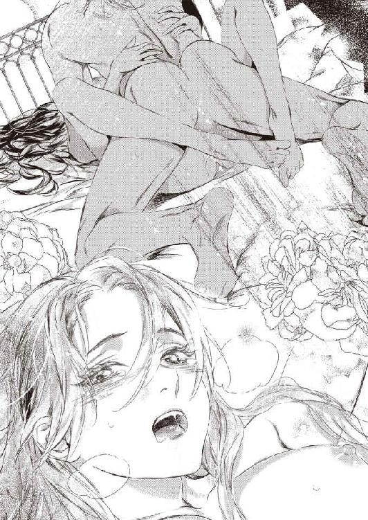
「ひッ......!? あぁっ」
「気に入ったか」
ふくみ笑い、震える蕾をにちゅにちゅと捏ね回される。目も眩むような快感に襲われてフィオリーネは背をしならせ、絶頂に達した。
「ぁ......、ぁ......、はぁッ、ぁ......」
ひくひくと媚肉が戦慄き、深く挿入された怒張をきゅうきゅうと絞り、締めつける。リーンハルトは熱い吐息を洩らした。
「達ったか......。ふ......、よく締まる......」
満足そうに囁いてフィオリーネの腿をゆっくりと撫でる。彼は膝立ちになると、のしかかるように抽挿を始めた。
先端近くまで怒張を引き抜き、ずっぷりと根元まで挿入する。何度か大きく動いた後は小刻みに腰を打ちつけ、また掬い上げるように前後させる。
「は......っ、あっ......、あんっ、んん......」
淫らな体勢でフィオリーネは喘いだ。ほとんど真上から彼の肉槍が蜜鞘に突き込まれる様をまざまざと見せつけられ、羞恥と昂奮に息が乱れた。
抜き差しされるたびに泡立った淫蜜がしぶき、とろとろと下腹部を伝う。破瓜の血でうっすらと赤いそれが、ひどく卑猥に思えた。
爪先が力なく空中で揺れる。潤んだ瞳は焦点がぼやけたまま、思考力はとっくに溶け崩れ、揺さぶられながら絶え間なく喘ぐことしかできない。
抽挿が次第に切迫し始める。リーンハルトはかすかに呻き、熱い吐息を洩らしながら激しく腰を打ちつけた。ふたたびフィオリーネが絶頂に達すると同時に、彼は歯噛みしてふくれあがった怒張を勢いよく引き抜いた。
くたりと崩れ落ちたフィオリーネの腹の上に、熱い白濁が放出される。自ら肉棒を扱くたびにびゅくびゅくと熱液が噴き出し、腹ばかりか上気して弾む胸元まで飛び散った。
「......子種は、やらない......。欲しければ私を籠絡してみせろ......」
息を弾ませながらリーンハルトが囁く。答えようとしても声が出なかった。かろうじて頷き、フィオリーネは水底に沈むように意識を手放した。
第三章 賭けと意地と恋心
目覚めたフィオリーネは、横たわったままぼんやりと天蓋を見上げた。
見慣れた自室の寝台──。
（いつ......戻ってきたんだったかしら......）
思い出せない。記憶を辿ろうとするとふいに昨夜の出来事がありありと蘇り、カーッと頬が熱くなった。
（わたし、リーンハルトと......）
ついに本当の夫婦になったのだ。
（......いいえ、そうじゃないわね。やっと出発点に立ったというだけ）
勢いに任せてとんでもないことを宣言してしまった。愛人と別れてもらうために彼を籠絡する、だなんて......。正気に戻れば、なんて無謀なことを言い出したのかと恐ろしくなる。
（いいえ、悔いてなどいないわ）
リーンハルトが欲しいのだもの。身も心も独占したい。自分だけを愛してほしい。彼に抱かれて一層その想いは強固になった。
（絶対に手に入れてみせるわ）
決意して起き上がったフィオリーネは、下腹部に走った痛みに顔をしかめた。彼を受け入れた秘処には、あの太いものをまだ咥え込んでいるかのような違和感が残っている。
思い出すと顔が赤らみ、キュッと唇を噛む。
リーンハルトは満足してくれたのだろうか。この身体を、少しでも気に入ってくれたらいいのだけど......。
コツコツと扉が鳴った。婦人部屋に続くほうの扉だ。
「お入り」
応じるとカトリンが入ってきて一礼した。
「おはようございます、奥様」
「おはよう、カトリン」
内心ドキドキしながら何気なく頷く。いつもと変わらない返事ができたはずだけど......。
寝台から降りようとすると、何度も貫かれた部分に鋭い痛みが走り、危ういところで声を飲み込んだ。
目ざとく気付いた侍女に、気遣わしげに問われる。
「どうかなさいましたか？ お顔の色が冴えないご様子ですが」
「な、なんでもないわ。......ちょっと、お腹が痛くて......」
「ああ、そろそろ月のものが来る頃ですよね」
「そ、そうね」
ホッとしながらフィオリーネは頷いた。出血があってもごまかせそうだ。見たところ夜着は汚れていないようだけど、と考え、昨夜自分から脱いだことを思い出して顔を赤らめる。
（......そういえば、身体も拭いてあるみたい）
リーンハルトがしてくれたのだろうか。眠ってしまった......というか、気を失ったフィオリーネの身体を拭き清め、夜着を着せて、寝室まで運んでくれた......？
黙々と世話を焼く彼の姿を想像すると、心がほんのりと温かくなった。あの塔の中の簡素な寝台で、一人目覚めて涙しても文句は言えなかったのに。
（やっぱり彼は優しい人だわ）
ぶっきらぼうで冷たい言動を取られても、そういう気遣いに本来の優しい心根が表れていると思うのだ。
だから知りたい。何故彼が、過剰なほどに冷ややかな態度を崩そうとしないのかを──。
「本当に大丈夫ですか？ なんならもう少しお休みになっても」
「いえ、大丈夫よ」
フィオリーネは強いて笑みを浮かべた。
ここで甘えては『負け』だ。ただの意地かもしれないけれど、いつもと同じように朝の挨拶をして、リーンハルトがどんな顔をするのか見てみたい。寝込んでなどいたら彼に「それ見たことか」と言われてしまいそうだ。
誤解したままカトリンが気を利かせて、ゆったりめのドレスを用意してくれた。
食堂室へ行くと、いつものようにリーンハルトは長テーブルの端で朝食をとっていた。反対側の端に固まっている騎士たちがまずフィオリーネに気づき、さっと一礼する。会釈を返し、いつものように角を挟んで彼の右手に座った。
彼は驚いた顔でフィオリーネを見た。
「......起きてもいいのか」
ぼそっと尋ねられ、フィオリーネは微笑んだ。
「平気です」
リーンハルトは探るような目つきでフィオリーネを眺め、肩をすくめた。
「そうは思えないな。無理せず休みなさい」
「大丈夫ですわ」
少しむきになって答えると、彼は皮肉っぽく唇をゆがめた。
「体調も整えずに私を愉しませることができるのか？ たいした自信だな」
「......っ」
フィオリーネは赤くなってうつむいた。
「で、では、お言葉に甘えて......、本日は部屋で休ませていただきます」
「そうするがいい」
リーンハルトが尊大に頷くと、給仕が朝食を運んできた。黙々と食事をしながらフィオリーネは彼の言葉を反芻した。次がありそうなことを匂わせたからには、そう悪くなかった......と思っていいのだろうか。
（少なくともがっかりはされなかった......はずよね）
ちらりと窺った横顔はいつも以上に取りつく島のない冷厳さだ。だけどもう怯みはしない。決めたのだから。
彼の身も心も、独占するのだと。
その夜、寝室にやってきたリーンハルトは、挨拶することもなくフィオリーネを寝台に押し倒した。目を丸くして見上げると、彼は憮然とした顔でチッと舌打ちした。
「悲鳴も上げないとは、いい度胸だな」
「待っていましたから」
「期待して？ 物覚えのよいことだ」
皮肉な口調に顔を赤らめると面食らったように彼は眉をひそめた。わざと怒らせるつもりだったのだろう。案外わかりやすいとおかしくなる。
「ずいぶんと余裕じゃないか」
「......あなたは困っているみたい」
そっと頬を撫でると、苛立ったように手首を掴まれた。
「やめろ。からかわれるのは好きではない」
「からかってなどいません。嬉しいのです」
「困らせて喜ぶとは、性悪な姫君だ」
「あなたの関心が惹けますもの」
「子どものようだな」
厭味にも不思議と腹が立たない。
「素直に認めることにしたのです。あなたの関心を惹いて、好きになってほしいから」
「だから身体でつなぎ止めようと？ あなたには王女としての矜持がないのか」
「それは夫であるあなたに向けるべきものではありません」
ぴしゃりと言われてリーンハルトが鼻白む。
「わたしはあなたの妻です。妻としての矜持から、あなたを愉しませ、満足させたいと願っています。悪いことでしょうか？」
気圧されたように見返したリーンハルトが、ふっと口許をゆるめた。
「......いや。いい心がけだ」
彼はフィオリーネの首筋に顔を埋めて囁いた。
「ならば今宵も獣に貪り喰われるがいい。ただし、賭けが続いていることは忘れるなよ」
答える暇もなく唇をふさがれる。噛みつき、貪るようなキスに鼓動が跳ね上がった。心の底で感じた恐れを振り払うように、彼の背に腕を回す。
ぎゅっと抱きついて、無我夢中でくちづけに答えた。絡めた舌をきつく吸われると、ぴりっと痛みが走って睫毛が濡れた。
「んッ......」
角度を変えながら繰り返し口腔をねぶられ、混ざり合った唾液を懸命に呑み下す。拙いながらも彼のまねをして舌を擦り合わせ、舐めしゃぶった。
唇を合わせながらリーンハルトはフィオリーネの夜着をはだけ、荒々しく乳房を揉みしだいた。敏感な先端はたちまち色づき、ピンと尖る。
「......悪くない。手に吸いつくような肌触りだ」
たわわな双丘を捏ね回しながら彼は呟いた。閉じていた目をうっすらと開くと、リーンハルトは無邪気なほどの熱心さで、感触を確かめるように乳房を揉んでいた。なんだか彼のことが可愛く思えてしまい、そっと肩に手を添える。
ぱくりと乳首を口に含まれ、舌で突つかれると、ぞくぞくと愉悦が走ってフィオリーネは顎を反らした。
「あ......、んん......」
ぺちゃぺちゃと尖りを舐め回す舌音の淫靡さに昂奮を煽られる。リーンハルトは両方の乳首を口唇と指で散々に弄び、恍惚とするフィオリーネの全身を熱っぽいまなざしで見つめた。
「......綺麗な身体だ。穢したくなるな。新雪に足跡を刻むように」
囁いて脚を掴み、ぐいと無慈悲に広げる。
「やっ......！」
反射的に頭を起こし、慌てて唇を押さえる。ニッと笑ったリーンハルトが白い腿の内側をさわさわと撫でる。ぞくんと下腹部に快感が走り、フィオリーネは眉根をきつく寄せた。
「んぅ......、ふ......ぅ......ッ」
「もう濡れているのか」
腿を撫でながら呟いた彼が、膝頭にチュッとくちづけを落とす。フィオリーネは顔を赤らめ、もじもじと腰を揺らした。
直接触れられていないのに、とろとろと秘裂から蜜が滴るのがわかる。彼の手が腿の内側を上下するたびに蜜壺が疼き、淫らな蜜を吐き出している。浅ましく男を誘うかのように......。
「あぁ......、リーンハルト......。お願い......。触って......触ってください」
「触れているぞ？ いい肌触りだ」
意地悪に返して腿を撫でられ、フィオリーネは弱々しくかぶりを振った。
「そ......そこではなく......」
「だったらどこに触れてほしいのか言ってみろ」
甘く冷たく命じられ、言葉に詰まる。唇を震わせていると、そそのかすように彼は囁いた。
「言えないなら自分で触れて示すがいい。触れてほしいところが、よく見えるように」
「じ、自分で......!?」
「『いや』か？」
「......！」
意を決し、膝頭を上体に引き寄せるようにしておずおずと脚を開いた。ぱくりと割れた谷間に指を添え、淫唇を摘まんで広げる。あらわになった花芯はすでに充血し、ぱんぱんに張り詰めていた。リーンハルトが軽く息を呑む。
「こ......ここに......、触れ、て......ください......」
消え入りそうな声で、必死に懇願する。突き刺さるような視線を感じた。脚を閉じ合わせたい衝動を必死に堪えていると、濡れそぼった粘膜にいきなり熱くやわらかいものが触れた。
「んッ......!?」
予期したものとは異なる感覚に驚いて頭をもたげると、リーンハルトが秘裂に顔を埋めていた。濡れ溝全体をねろりと舐め上げられ、悲鳴を上げる。
「ひぁあッ」
昨夜のように指でほぐしてもらいたかったのに、唇で吸いつかれ、あふれる愛蜜を音をたてて啜られる。
（こ、こんなところを......舐めるなんて......！）
「んん......っ、ひ、ぁ......、ん......っ」
拒絶の言葉を口走らないように、必死で唇を噛む。わざとのように高い水音を立てて、リーンハルトは秘処を舐め回した。ぴしゃぴしゃと、犬が水を飲むような音が死ぬほど恥ずかしい。
そんな羞恥も、容赦なく媚蕾を吸われ、舐めしゃぶられればたちまち沸騰し、嬌声を上げて悶える。
尖らせた舌先を蜜孔に挿入され、蜜を掻き出すように前後されると下腹部が激しく疼いた。とてもこらえられず、フィオリーネは絶頂に達した。
「ん────......！」
ひくひくと戦慄く花弁を舐め回しながらリーンハルトがふくみ笑う。
「呆気ないものだな」
言い返すこともできずに涙目で喘いでいると、身を起こした彼に身体を裏返され、腰を引き寄せられた。
「ぁ......、な、に......？」
四つん這いにさせられ、焦って振り向くと同時に蜜口に固いものが押し当てられた。
「あぁあああっ」
怒張した肉楔が容赦なく打ち込まれ、フィオリーネは甲高い悲鳴を上げた。
ずんっ、と奥壁に先端が突き当たる。
（ふ......、ふか、い......っ）
身構える余裕もなかったせいで、一気に太棹を呑み込んでしまった。衝撃でリネンに突っ伏し、力なく喘いでいると、リーンハルトがゆっくりと腰を揺らし始めた。
「......こんな恰好は、『いや』だろうな？」
そそのかす口調に、必死に首を振る。
「いい、です......」
「嘘をつけ」
「ひぁあッ」
ごりっと抉るように突き上げられ、ふたたび悲鳴を上げる。
「ほ、本当です......。き、きもち......ぃ......の......っ」
必死に訴えた。嘘ではない。締まった肉棒で媚壁を擦られ、ずくずくと奥処を穿たれると、痺れるような快感が噴き上がる。
「か......感じます......！ あ......、リーンハルト......っ、も、っと......、もっとして......！」
チッと舌打ちすると、彼は抽挿の勢いを強めた。
ばちゅばちゅと肌がぶつかりあうたびに愛蜜がしぶき、たらたらと腿を伝ってゆく。ふくみきれない唾液が口の端からこぼれ、リネンを濡らした。艶やかな黒髪を振り乱し、フィオリーネは悶えた。
愉悦が昂り、びくびくと蜜襞が戦慄く。淫らに跳ねる白い臀部を両手で掴み、捏ね回しながらリーンハルトは荒い吐息をついた。
「四つん這いで犯されてあっさり達してしまうとは......、獣の奥方にふさわしいな」
温んだリネンに頬をすり寄せ、うっとりとフィオリーネは呟いた。
「......あなたが自分を獣だと言うなら......、わたしも獣になるわ......」
「見上げた心がけだ」
憮然と吐き捨て、彼はふたたび抽挿を始めた。隘路を前後するたびに雄茎はますますいきり勃ってゆく。
「ふぁ、あ......っ、すご......ぃ......！」
ずぷずぷと奥処を突かれるたび、目の前で火花が散る。内臓を押し上げられる生々しい感覚に痺れるような快感が湧き起こり、震える指でリネンを握りしめたフィオリーネは高く掲げた臀部を無我夢中で振りたくった。
「あッ、はぁっ、あんっ......ひぁあん......」
愉悦の波に攫われ、頭の中が真っ白になる。
気がつけば片足を肩に担がれて貫かれていた。その体位でも何度か絶頂させられ、フィオリーネの意識はすっかり朦朧となった。
正気ではとても言えない猥褻な言葉も、命じられるまま口にした。どんな卑猥な要求をされても拒まなかった。試されていることはわかっていたから......。
やがて諦めたのか、強情に呆れたのか、リーンハルトは何も言わなくなった。あるいは彼も快楽に没入し、策略を巡らせる余裕がなくなったのかもしれない。
正常位で突き上げられながら、ただひたすら愉悦に酔い痴れる。四肢に力が入らず、揺さぶられて嬌声を上げるだけなのが、少し悔しい。
そんな意地も昂る快感に呑み込まれ、フィオリーネはもう何度目かわからない絶頂のさなかで恍惚に浸った。
腹の上に、熱い迸りを感じる。上気した肌に白濁が撒き散らされるのをぼんやりと視界の端に映しながら、フィオリーネは意識を手放した。
それまでとは真逆の、夜毎抱き潰される日々が始まった。正気に戻れば耐えがたい羞恥に襲われたが、リーンハルトが夫婦の寝室で眠ってくれるようになったのは嬉しい。
しばらくは目覚めると姿がなく、やはり塔の部屋で眠っているのかとがっかりした。質しても『どこで眠ろうと自分の勝手だ』と言われそうで訊けなかった。ある夜ふと気付くとリーンハルトが隣にいて、しかも自分を抱き抱えるようにして眠っていたので感激した。
毎夜抱いてくれるようになったとはいえ、もっぱら後背位なので彼の身体にはあまり触れられない。最後は正常位で終わってくれるけれど、その頃にはフィオリーネはすっかり疲労困憊して、ろくに腕も上がらないような状態だ。
数日後に月の障りが来たが、その間も粛々と奉仕を続けた。ベッドの端に腰掛けたリーンハルトの脚の間に跪き、猛々しい雄茎を下穿きのなかから取り出して、指示されるまま指を絡めて扱き、口にふくんで吸ったり舐めたりした。
雄の匂いに酔ったような気分になって、無我夢中で楔を撫でさすりながらちゅくちゅくと舌を使っていると、頭上から困ったような溜息が降ってきた。
「いやらしい奥方だな......。そんなに私のものは美味いか」
こくりと頷き、フィオリーネはぬるぬると唇で扱いた太棹をちゅぽんと口から外した。唾液が唇と雁首に淫らな橋を架ける。
「とっても美味しいです。......わたし、上手くできてますか？」
「ああ、困るくらいにな」
かすれた声でリーンハルトは笑い、続けるよう促した。ふたたび屹立を銜え、舌で刺激しながら唇で強めに扱く。ちゅぷちゅぷと淫らな水音が響き、先走りと唾液の混じり合った泡が淫らに棹にまといついた。
「......罪人に、なった気分だ」
リーンハルトが呻く。顔を上げようとすると頭を押さえつけられてしまった。仕方なく奉仕に専念していると、ゆっくりと髪を撫でられた。慈しまれるようでドキドキする。
「美しい黒髪だな......」
どこか陶然とした囁き声に、頬張った彼の雄がますます愛おしくなる。フィオリーネは心を込めて肉槍を愛撫した。
「ぅ......」
堪えきれぬように官能的な吐息が彼の唇から洩れる。それを聞くとぞくぞくした気分になって、ますます淫らに舌を蠢かせた。
「ん......、んぅ......。ぁむ......」
吸っては舐め、チュッチュと先端にくちづけて唇でにゅぷにゅぷと扱く。障りさえなければ、いますぐ胎内にねだりたいくらいフィオリーネは昂奮していた。
優しく髪を撫でていた彼の手が頬にかかり、ぐっと腰を突き入れられる。
「んッ」
息苦しさを堪え、できるかぎり大きく口を開ける。えずくほど奥まで先端を押し込まれ、半ば噎せながら必死に受け入れた。
「......舌を出せ」
何度か前後させると官能的な囁き声とともに太棹が引き抜かれ、伸ばした舌の上に精が吐き出された。どくどくと注がれる白濁は唇や頬にも飛び散った。
とろとろと舌の上で粘液を転がし、ゆっくりと嚥下する。すべて呑み込んで、フィオリーネはほぅっと熱い溜息をついた。じん......と痺れるような快感が下腹部から込み上げる。
リーンハルトは顔を汚す白濁をも指でぬぐって唇に押し付けた。フィオリーネは抗わず彼の指を口にふくんだ。丁寧に残滓を舐め取ると褒めるように優しく頬を撫でられ、引き起こされて膝に載せられた。
「ずいぶんと達者になったものだ。献身的な奥方には褒美をやろう。何がいい？」
「......しばらくこうしていてください」
胸にもたれて囁くと、リーンハルトは眉をひそめた。
「遠慮しなくても、私にだってそこそこの財力はあるのだぞ」
「わかっています。でも、わたしが欲しいのはあなただから......、少しだけ、抱きしめてもらえませんか」
彼はくぐもった唸り声を上げ、いささか乱暴にフィオリーネを抱きしめた。
「......あなたは私を困らせることに長けている」
「ごめんなさい......」
「謝るな。......何故怒らないんだ」
「怒ってますよ？ 結婚しても愛人と別れないなんてひどいわ。だからあなたを奪い取るの」
リーンハルトはいっそう強くフィオリーネを抱きしめ、溜息をついた。
「こんな無体を強いられてもか」
「あなたを喜ばせられるなら、恥ずかしさを我慢するくらいなんでもないわ」
ふふっと笑ってフィオリーネは彼の背中に腕を回した。
「わたしはわがままな王女だから、遠慮して身を引いたりしないの。欲しいものは、正々堂々と勝負して手に入れるわ」
「......さすがは〈狼王〉の娘だな。おとなしく従順な姫かと思えば」
「負けを認めます？」
「見直しはしたが、籠絡するにはまだまだだ」
ニヤリとされてフィオリーネは顔を赤らめた。
「わたしだって、まだまだがんばれるわ......」
「明日は、するぞ？」
「え？ でも......」
「『いや』か」
「あ、あなたこそ、いやじゃないの？ その......汚れたら......」
「洗えばいい。そうだ、明日は風呂で奉仕してもらおう。それならお互い気にせず済む」
もちろん、『いや』とは言えなかった。
冗談かと思ったら、本当に翌日リーンハルトは召使に命じてふたりで入る風呂を用意させた。もちろんカトリンは大喜びだ。
口にはしなくても、カトリンはふたりがままごと夫婦の域をようやく脱したことには気付いていて、ひそかに喜んでいたのだ。リーンハルトとの奇妙な『賭け』については話していないから、単純にわだかまりがとけたものと思っている。
風呂でも当然のように抱かれた。贅沢に湯を張った浴槽には内庭で咲き始めた色とりどりの薔薇の花びらが浮かんでいて恥ずかしくなる。
（カトリンったら気を回しすぎよ......）
リーンハルトは薔薇風呂が意外とお気に召したらしい。浴槽のなかでフィオリーネを後ろ向きに膝に載せ、機嫌よさそうにたゆたゆと乳房を弄んだ。
「あなたの胸は、とても気に入った」
背後から耳元に唇を寄せて彼は囁いた。きゅっと乳首を摘まれて肩をすぼめる。
「よ、よかったです......、ん......ッ」
下から掬い上げるように揉まれ、尖った乳首を指先でくりくりと転がされる。慣らされた性感に熱い吐息がこぼれた。
「......あの女......より、も......？」
吐息混じりに尋ねると、リーンハルトは乳房を揉みしだく手を止めてしばし沈黙した。思わず唇を噛むと、ふっと苦笑めいた響きが耳朶をかすめた。
「ああ、そうだな。彼女よりも、ずっと────素敵だ」
ぐっ、と強く揉み絞られ、フィオリーネは息を詰めた。
「ほん、と......に......？」
「ああ」
彼はうなじに舌を這わせながら囁いた。喜びと快感で、ぞくぞくする。
「私にこうされるのは好きか」
「はい......」
素直に頷いた。がっしりと武骨な手は、けっして小さくはないフィオリーネの双丘をすっぽりと包み込んでしまう。剣だこの目立つ指からは、日々の鍛練を欠かすことのない彼の謹厳さが伝わってくる。
そして不器用な優しさも、また......。一見手荒く、好き勝手に扱っているようでも、彼との交わりで傷つけられたことは一度もない。出血したのは破瓜されたときだけだ。
確かに、少しばかり激しめの行為が好みのようではあるけれど、別にいやではなかった。彼しか知らないフィオリーネは、そういうものなのだろうと素直に受け入れていたし、猛る雄茎を胎内深く挿入され、ずくずくと突き上げられると昂奮と心地よさで恍惚となってしまう。
彼はいつも媚肉が充分に濡れそぼつまで丁寧に愛撫し、挿入前に指や舌で何度も達かせてくれる。彼を受け入れる頃にはすっかりとろとろに蕩けてしまい、『賭け』をしていることなど頭から跳んでしまうくらいだ。
湯に浸かりながら彼の剛直を尻朶の間に感じ、ぞくんと下腹部が疼いた。
（わたし、期待してるわ......）
彼の欲望を胎内の最奥まで受け入れ、繋がりがもたらす愉悦を心ゆくまで味わい尽くしたい。そうしていれば、身体だけでなく、心まで繋がっている気がするから......。
たとえそれが、一瞬の錯覚にすぎないとしても。
（いいえ、見込みはあるはずよ）
彼はフィオリーネの胸が気に入ったと言ってくれた。すでに幾度となく身体を繋げているのだから、女陰の具合だって悪くはないはずだ。
そんなことをつらつら考えて顔を赤らめる。考えが伝わったわけもないだろうが、リーンハルトはフィオリーネの腰を持ち上げると猛った太棹を淫唇のあわいにあてがい、溝に沿ってゆっくりと前後させ始めた。
「あぁ......」
心地よさに頤を反らし、溜息をつく。浴槽の縁を掴んでうっとりと腰を揺らしていると、ふたたび乳房を弄びながらリーンハルトが忍び笑った。
「すっかりいやらしくなったな。自ら腰を振って悦がるとは」
「......お気に......召しません......か......？」
「いや。あなたの身体はとても好みだ。肌の手触り、乳房の大きさ。感じやすくて、すぐに達してしまうところもいい」
かぁっとフィオリーネは赤面した。
「い......達きすぎでしょうか......」
「私としては、何度も達ってくれたほうが嬉しいね」
ホッと肩を下ろしたとたん、雁首が花芽をぐりっと押し上げ、びくんと背がしなる。
「ひぁ......っ」
反射的に逃げを打つ腰をがっちり掴み、押さえつけられる。剛直が谷間を前後するたび、引っ掻くように花芽を刺激されて、たまらずにフィオリーネは嬌声を上げた。
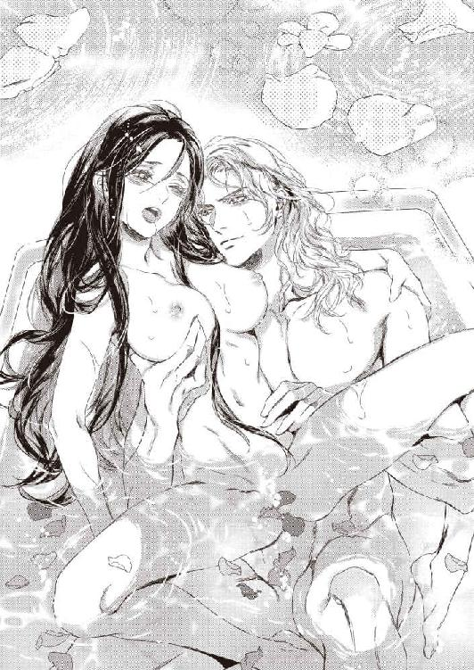
「あんッ......、あっ、ぁ......、あぁんっ......」
「どうした？ もう降参か」
からかうような声音に涙目でこくこく頷くと、くくっと彼は喉を鳴らした。美しい獣が笑ったようでぞくぞくする。
「仕方ないな」
尖った乳首をこりこりと指先で捏ね回されて、下腹部で快感が爆ぜた。
「んく......、ふ......ぁ......はぁッ......」
逞しい胸板に背中を預けて喘ぎ、涙と湯気で重くなった睫毛をぼんやりと瞬く。蜜襞の痙攣がいつまでも収まらない。
リーンハルトはフィオリーネの膝裏に手を入れてぐいと持ち上げた。尻がずり下がり、鎖骨の辺りまで湯に沈む。代わりに万歳するかのように脚が空中に突きだした。
「ひぁ!? や......」
「『いや』、か？」
残酷なほど優しく囁いて、彼の指がぐぷりと蜜孔に突き立てられる。
「ふ、ぅ......ッ......！」
未だひくひくと戦慄いている花弁を掻き分け、ぐちゅぐちゅと指が抜き差しされる。ひどくずり落ちた恰好が怖くて、浴槽の縁を必死に掴んだ。リーンハルトが片手を腹部に回して支えているので沈んでしまう恐れはないけれど。
後頭部を胸板に預け、宙に突き出た脚をゆらゆらさせながらフィオリーネは悶えた。
「んっ、あっ、あっ、あぁっ......」
蜜をまといつかせた指が激しく前後する。同時に親指で花芯をぐりぐりと刺激され、たちまちフィオリーネは絶頂へと追いやられた。
「ふぁ、は......ッ、ぁ......」
じん、と痺れるような快感に喘ぐ。フィオリーネの身体を抱き起こし、胸をまさぐりながらリーンハルトはうなじに何度も唇を押し当てた。
「......可愛いひとだ」
どこか困ったような囁きは、朦朧とした意識をすり抜けてしまう。
リーンハルトはしばしフィオリーネの身体を愛撫すると、背後からずぷりと貫いて揺さぶり始めた。パシャパシャと湯を盛大に跳ね散らかしながら甘い嬌声を上げ続ける。
（今日は......もらえる......？）
悦楽に蕩けながら期待したものの、結局彼の精が蜜壺に注がれることはなく......。フィオリーネの意識は立て続けに与えられる絶頂のなかでふつりと途切れた。
第四章 双子兄の襲来
奇妙な駆け引きはその後も続いた。まずは身体で彼を擒にしようという無謀な企みを始めてひと月、まずまず成功を収めている......と思う。リーンハルトは東の塔へは行かず、夫婦の寝室で休むようになった。
毎日のように求められても、彼と身体を繋げるのは心地よいので苦にならない。あの『賭け』は続行中なので、うっかり拒否すれば彼が愛人の元へ舞い戻ってしまうのではないかと不安でもあった。
フィオリーネの身体は気に入ったようなのに、彼は未だに胎内へは精を注がない。口で奉仕したときには飲ませてくれるけれど、それは何か......いや、絶対違う気がする。
（飲んでも赤ちゃんはできないって言われたし......）
ふぅ、とフィオリーネは刺繍の手を止めて溜息をついた。もしも心の声をカトリンが耳にしたら白目を剥いてひっくり返ったに違いない。
念のためちらっと見やるとカトリンは涼しげな顔で本の朗読を続けていた。貴婦人に人気の宮廷恋愛風物語詩だ。感情を込めて読み上げているカトリンには申し訳ないけれど、ほとんど右から左に抜けてしまっていた。もっとも、内容は全部わかっているのだが。
春先に嫁いできたシュトルツェーレ城砦も、すっかり初夏だ。放置ぎみだった庭園も美しく整えられ、日中のほとんどを明るく涼しい四阿で過ごしている。
新しく採用した侍女たちとも打ち解けて、町の暮らしぶりを聞くのも楽しい。反対に、宮廷生活について話すととても喜ばれた。王都グリトニールから遠いせいか、王宮への憧れが強く、興味津々なのだ。
行儀見習いも兼ねている彼女たちに宮廷風のマナーを教えるのも楽しかった。フィオリーネは末っ子で兄しかおらず、侍女はふたつ上のカトリンが一番若いから、自分より少し若いくらいの少女たちに囲まれていると、妹ができたみたいで嬉しい。彼女たちがいずれ嫁ぐときに、自分の教えたことが役に立てばと思う。
「──邪魔をする」
しかつめらしい声がして、生け垣の向こうからリーンハルトが現れた。カトリンが朗読をやめて膝を折ると、他の侍女たちもそれに倣う。
リーンハルトがこの時間に現れたのは初めてだ。フィオリーネは驚いて刺繍板をテーブルに置いて立ち上がった。
「お珍しいですね。執務時間中なのでは......」
「手紙が来たのだ」
憮然とした顔で言われ、フィオリーネは小首を傾げた。
「手紙？ どなたから......」
答える代わりに実物を差し出され、遠慮がちに受け取る。赤い封蠟がすでに割られていることから、彼に宛てられた手紙だとわかる。誰からのものなのかは判別できない。
「読んでもいいのですか？」
彼はむすっとしたまま頷いた。上質な羊皮紙を広げて読み始めたフィオリーネは数行読んで目を丸くした。
「兄様たちがいらっしゃるのですか？」
「そのようだ」
相変わらず不機嫌そうにリーンハルトは頷いた。手紙はフィオリーネの次兄と三兄である双子王子からのものだった。
手紙に目を戻して読み始め、彼の不機嫌の理由がわかった。そこにはリーンハルトが自分たちの妹を大切に扱っているかどうか、この目で確かめに行くと、堂々と書かれていたのだ。
「......いついらっしゃるのでしょう？ 書いてませんね」
「お二方のことだ、きっと早晩──」
「御館様、お客様がお見えです」
後ろからアントンの慇懃な声が響き、リーンハルトはげんなりと眉を垂れた。
「......晩を待つまでもなかったな」
「フィオ！」
懐かしいユニゾンが聞こえたかと思うと、同じ顔をした青年たちが笑顔で現れた。
「アル兄様！ メル兄様！」
パッと顔を輝かせ、フィオリーネは双子兄に駆け寄った。金茶色の髪と空色の瞳。髪の長さも体格もほぼ同じ見目麗しい青年たちは、一度に両側からフィオリーネを抱き寄せ、愛おしそうにすりすりと頬擦りした。
「会いたかったよ、フィオ～」
メルヒオールが瞳をキラキラさせれば、
「僕のほうが、もっとずーっと会いたいと思ってたさ！」
アルフォンスが頬にキスをし、妹を挟んで『僕だ』『俺だ』と言い合う。
昔からふたりはなんでもかんでもむやみと張り合っているのだ。それでいて仲がよく、大抵つるんで行動しているのだから、双子ならではの繋がりがあるのだろう。
懐かしい遣り取りに、くすっとフィオリーネは笑みを洩らした。
「兄様たち。まずはわたしの旦那様に挨拶してくださいな」
「おっ、そうだった」
「すっかり忘れてたよ」
あっけらかんと言われ、黙って突っ立っていたリーンハルトの目許がぴくりと引き攣る。
「......アルフォンス殿下、メルヒオール殿下におかれましては、大変ご機嫌麗しく」
「麗しくないよ」
「いいわけないだろ」
二十歳を越えたというのに、ふたりは子どもっぽく口を尖らせた。世継ぎではない気楽さか、四つ上の長男ローラントが年齢以上に落ち着いているのとは対照的に彼らはいつまでも無邪気な悪童のようなのだ。
リーンハルトが口端を不穏にゆがめてもまったく動じず、両側からフィオリーネとがっちり腕を組んだ。夫の目つきがいよいよ冷たくなったことに気づき、身動き取れないままおろおろする。
「ずいぶんと早いご到着ですな。手紙を受け取ったのはほんの三十分前なのですが」
「そりゃそうだよ。僕ら、手紙を持参したんだもの」
「城門の前まで来て、護衛に手紙を持たせて先に行かせたんだ」
「いきなり押しかけもよかったんだけど」
「義弟とはいえ、それなりの敬意は払わないとねぇ」
にこにこしながら交互に厭味を繰り出され、リーンハルトの眉間にしくりとしわが寄る。
「迷惑だったかな??」
二人して声を揃え、首を傾げる。その動きがまた見事に対称的だったものだから、リーンハルトは眩暈を起こしたように眉間を摘まんでかぶりを振った。
「──いいえ、とんでもない。辺境の砦ゆえ、ろくなおもてなしもできませんが」
「大丈夫、そんなの全然期待してないよ！」
「俺、喉が渇いた！」
「......飲み物と軽食を用意させます。私は執務がありますので、また後ほど」
そっけなく言って、感情のこもらないまなざしでフィオリーネを一瞥すると、リーンハルトは四阿から出ていってしまった。
「ぁ......」
声をかけそびれてしゅんとしたものの、兄たちに左右から話しかけられて気を取り直す。
「みんなから手紙を預かってきてるよ」
「フィオの好きなお菓子も持ってきたよ。ここらでは手に入りにくいだろうと思って」
「嬉しいわ」
ふたりに挟まれたままテーブルに着き、家族それぞれからの手紙を受け取る。どの手紙も愛情と気遣いにあふれていて、読んでいるうちに泣けてきてしまった。
兄たちがはるばる訪ねてくれたのは嬉しいが、リーンハルトのそっけない態度も気になる。もしや仲が悪いのかとおそるおそる訊いてみると、ふたりは同時に首を振った。
「悪くはないけど」
「気に食わないよなー」
「メル兄様......」
「当然だろう？ 僕らの可愛い妹を、こーんな僻地に連れてくるなんて」
「アル兄様。わたしは連れてこられたわけではなく、自ら望んで来たのですけど......」
「同じことだよ！」
「全然違います！」
声を揃える双子をキッと睨む。兄たちはまた揃って眉を垂れた。
「フィオが反抗期だ......」
「大人になったと言ってください。わたし、結婚したんですよ？」
「俺は認めてない」
「僕もだ」
結婚話が出たときから一貫して断固反対していた双子は、しかめっ面で声を揃えた。
「今からでも遅くない、別れるんだ」
「遅いですし、別れません」
ムッとして言い返すと、双子は顔を見合せ、しゅーんと肩を落とした。
「......フィオが大人になってしまった......」
「だからそう言ってるでしょ。わたしはリンドホルム公爵夫人になったんです。リーンハルトとは上手くやっています。ここにいるのは、わたしがここにいたいからなの。彼と離れたくないんです」
「まさか、リーンハルトが好きなのかい？」
「まさかってなんですか。好きにきまってるじゃない」
「結婚したからって無理に夫を好きになる必要はないんだよ？」
諭すように言われて眉を吊り上げる。
「無理になんて好きになれるわけないでしょう。わたしは自然にリーンハルトのことが好きになったの。別れるつもりも側を離れるつもりもありませんから！」
きっぱり言い切ると、双子は揃って盛大な溜息をついた。
「......本当に大人になっちゃったんだなぁ。お兄ちゃんたちは寂しいぞ！」
ぎゅうぎゅうと両側から抱きしめられ、頬擦りされてフィオリーネは眉を垂れた。
「兄様たちこそ、早く大人になってください。いいお嫁さんを見つけて──」
「それはローラント兄上が先だよ」
そうだ、そうだとメルヒオールが兄に同調し、ふたり揃って妙にしかつめらしい顔で同時に宣言した。
「──というわけで、査察に来たから」
「査察......？」
面食らってアルフォンスを見ると、反対側でメルヒオールが答える。
「もしもフィオがなおざりにされて泣いているようなら王都に連れ帰る。父上の許可は得た」
「そんなっ」
「あたりまえじゃないか。降嫁したとはいえ、フィオはグランフェルトの王女なんだよ？ リーンハルトは家臣だ。主君の大事な姫をいただいておいてなおざりにするなど不敬も甚だしい。忠誠心に疑いを抱かれても仕方がないだろう」
「なおざりになんてされてません！ 大切にされています！」
「本当に？」
「本当です！」
懸命に頷き、訴える。
「そうかな？ どうもぎくしゃくしてるようだ......っていう情報が入ってきてるんだけど」
「誰がそんな......っ」
「先に言っておくけど、カトリンが告げ口したわけじゃないよ。シュトルツェーレ城砦には以前から国王直属の隠密が配置されてるんだ。ここの守備は交替制だし、現在派遣されてる守備隊長が若干ワケアリだったりするからね」
リーンハルトの『ワケ』は想像がつく。フィオリーネは慎重に答えた。
「その情報は少し古いわ。確かに結婚直後は多少ぎくしゃくしたこともあります。たぶん王女という身分を気にするあまり、扱いあぐねていたのでしょう。リーンハルトはすごく真面目なひとなの」
「それは否定しないが」
「ってか、融通が利かないんだよな～。四角四面っていうの？」
「お疑いなら、その隠密から最新情報をお聞きになってください。きっと、状況が変わったと証言してくれるはずですわ」
断言しながら頬が熱くなる。双子は肩をすくめた。
「残念ながら、誰が隠密なのか知っているのは父上と兄上だけなんだ」
ふたりは探るようにじっとフィオリーネを見つめた。
「......本気でリーンハルトが好きなのかい？」
「はい」
頬を染めながらもきっぱりと頷く。
「じゃあ、リーンハルトのほうは？」
「......っ。だ、大事にしてくれています......」
「おや？ 口ごもったね」
メルヒオールがニヤリとする。
「なぁ、アル。リーンハルトの奴、澄ました顔して俺たちの可愛いフィオを掻っ攫い、惚れさせた挙げ句に放置なんて、ずいぶんだよなぁ？」
「うむ！ 盗人猛々しいという奴だな」
「攫われても盗まれてもいないし、放置もされてませんっ。本当に大事にしてくれています！」
「だったらそれを証明してもらわなきゃ」
「しょ、証明!?」
どうやって......？ と混乱するフィオリーネに双子兄はにんまりしながら対称的に片目をつぶってみせた。
「──というわけで、貴公に決闘を申し込む」
晩餐が済んだ頃合いを見計らって高らかに宣言され、リーンハルトはぽかんとした。呆気に取られて双子を順繰りに眺め、しくりと眉間にしわを寄せる。
「何がどうしてそうなるのですかな？ メルヒオール殿下」
「僕はアルフォンスだ」
「失礼。見分けがつきませんで」
しれっとリーンハルトは詫びた。厭味でわざと間違えたのではなかろうかと、冷笑を浮かべる彼をフィオリーネはハラハラと見守った。
「フィオはグランフェルトの王女で、僕らの大切な妹だ」
「もちろん存じております」
「可愛い妹には大好きな相手と一緒になって、幸せになってほしいと俺たちはつねづね考えていた」
「だ、だからっ......。わたしは彼が、す、好きだと、何度も申し上げているではありませんか......！」
フィオリーネは若干涙目になりながら口を挟んだ。小晩餐室のテーブルについているのは四人だけだが、壁際には複数の給仕が控えている。すべてリンドホルムの家士で信用のおける人間とはいえ、こんな痴話喧嘩めいた言い合いなど聞かせたくない。
しかし双子王子はまるで頓着しなかった。
「うん、フィオの気持ちはわかった。腹立たしいことだが、どうやら本気で貴公に惚れているらしい」
リーンハルトは無言だったが、憮然とした顔がかすかに赤らんだ気がする。
「そこで尋ねたい。貴公は我が妹をどう思っているのか。正直に答えたまえ」
「......大切に想っています」
「はぐらかすな！」
「だから正直に申し上げました」
「愛しているのだな？」
「私にとって、誰よりも大切な人です」
王子たちに冷ややかに答えながら、リーンハルトはまじろぎもせずフィオリーネを見つめた。かぁっと頬が熱くなる。憤然とメルヒオールが叫んだ。
「だったら愛してると素直に言えよ」
「そのようなことをお二方に強いられる謂われはありませんな。我が主君は国王ルガート陛下です。陛下か、あるいは王太子殿下から本心を述べよと命じられれば従いますが......」
心持ち顎を反らしてじろりと睥睨され、気圧されたように双子は首を縮めた。視線を向けられたわけではないフィオリーネでさえ、その剣呑さに冷や汗が浮く。
双子は負け惜しみのように舌打ちした。
「なんだい、もったいぶって！」
「フィオ！ こんな唐変木が夫で本当にいいのか!? 堂々と妻を愛していると宣言もできない意気地なしだぞ!?」
「と、唐変木......？ でも、誰よりも大切な人、って、言ってもらえましたし......？」
「テレテレと嬉しそうに言うなっ」
「くっ......！ 俺は認めないぞ！」
「そうだ！ 馬に蹴られても認めるもんかっ」
「兄様たち、どうか──」
「決闘だ!!」
懸命になだめようとするフィオリーネを遮ってふたりが声を揃える。リーンハルトは額を押さえ、溜息をついた。
「だから何故そうなるのですか......」
「僕らが勝ったらフィオリーネは王宮に連れ帰る。貴公とは別居だ！」
「そんなっ」
青ざめるフィオリーネを片手で制し、フッとリーンハルトは笑った。
「構わん。勝てばいいだけのことだ」
「ム・カ・つ・く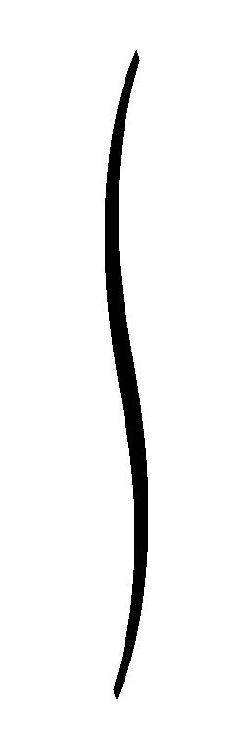！」
双子はギリギリと歯噛みしてリーンハルトを睨んだ。
メルヒオールが吼える。
「父上と同じ〈狂狼戦士〉だからって、余裕こいてると痛い目にあうぞ!?」
「え......？」
思いがけない言葉にたじろぐと、リーンハルトが唇をゆがめた。ふたりのあいだに一瞬流れた微妙な空気を素早く見てとったアルフォンスが小声で尋ねる。
「ん？ 知らなかった？」
「え、ええ......」
〈狂狼戦士〉というのは、戦神の加護を受けた凶猛な戦士のことだ。たったひとりで歴戦の兵の何十人分にも匹敵するという。
フィオリーネの父王ルガートは、その〈狂狼戦士〉だ。前王朝の権威が失墜し、下克上の内戦で乱れきったグランフェルト王国で、新たな王位を巡る熾烈な内乱をルガートが制することができたのは、率いる軍隊の強さに加えて彼が〈狂狼戦士〉だったからだと言われている。
戦うほどに血臭に酔い痴れ、力を増す。ついには敵味方の区別すらなくし、己の前に立ちふさがる者を殲滅するまで刃を振るい続けるという、恐ろしい戦士──。
話に聞いてはいても、フィオリーネにとってルガートは愛情深く優しい父だ。父が部下の騎士たちと模擬戦をしたり、馬上槍試合で戦うのを何度も見学したが、どんなに激しい戦いでも、けっして我を忘れて暴れ出すようなことはなかった。
母も〈狂狼戦士〉と化した父を見たのは一度だけだそうだ。たまたまふたりきりのときに敗残兵の集団に命を狙われた。父は母と二人乗りした馬上で槍を振るい、襲ってきた百人は下らぬ兵をあっというまに殲滅したという。
それ以来父が〈狂狼戦士〉と化したことは一度もない......はずだ。少なくとも、フィオリーネが生まれた頃には戦はほぼ収束していた。戦場での詳細は、王宮で待つ家族にはわからないけれど......。
そっとリーンハルトを窺うと、彼は無言でフィオリーネを一瞥し、双子王子に冷ややかな視線を向けた。
「──失礼ながら、〈狂狼戦士〉になどならなくても、お二方のお相手くらい務まります」
「言ったな！」
「というか、なったら確実にお二方を殺してしまいますので、なりません」
「ますますムカつく！」
「二人がかりなら勝てるとでもお思いなら大間違いですよ。手加減などいたしませんので。もし、お二方が絡んでくるようなことがあれば、遠慮せず本気で叩きのめすようにと国王陛下から申しつかっております」
「ふふん、望むところだ」
「目にもの見せてやる」
双子は怯みもせず、揃って不敵な笑みを浮かべた。思い直してくれるようフィオリーネがどんなに頼んでも頑として応じない。リーンハルトにすれば、挑戦されたからには騎士として受けて立つ以外に選択肢はなかった。
刺々しい雰囲気のまま晩餐が終わり、早々に私室へ引き上げた。湯浴みをし、寝支度を整えても、そわそわと気分が落ち着かない。リーンハルトはいつにも増して無表情で不機嫌だ。並んで寝台に横たわっても、手を伸ばしてくる気配はなかった。
「......あの。すみません、本当に」
「あなたが謝ることはない。言い出したのは兄上がただ」
「でも......」
言いよどむと皮肉っぽい声で問われた。
「心配か？ 私が負けると」
「そんなことありません！」
びっくりしてフィオリーネは身を起こした。リーンハルトは頭の後ろで手を組んで嘆息した。
「......私が〈狂狼戦士〉だと知って、怖くなったんじゃないのか」
「確かに驚きましたが、怖くなどありませんわ」
きっぱり返すとリーンハルトは横目でちらっとフィオリーネを見やり、ほろ苦い笑みを浮かべた。
「父君がそうだから、だろう？」
「確かにそれは......、あるかもしれません。わたしたちは幼い頃、父の武勇譚を聞くのが大好きでした。叔父様や将軍にせがんで、よく話して聞かせてもらったものです」
父は自分では語りたがらなかったから。そんな褒められたものではないと苦笑して......。
身近な人物が語ってくれる逸話にわくわくしながら聞き入った。強くて優しい父がますます好きになった。〈狼王〉の子であることが誇らしかった。
「狼は家族を守って戦う獣なのだと、母が言っていました。強くて恐ろしい獣だけれど......、家族想いの、誇り高い獣なのです。そう思えば、やはり憧れを感じます」
「......戦神の加護は呪いと表裏一体だ」
「え？」
「父君から聞いていないか」
少し考え、フィオリーネは頷いた。
「そういえば一度、そんなことを呟いていたような......。双子の兄たちが十四歳くらい......だったかしら。いったいどうすれば〈狂狼戦士〉になれるのかと父を問い詰めたことがあるのです。父は、そんなものにはならないに越したことはないと、真剣な顔つきで兄たちを戒めました」
「陛下の仰るとおりだ。〈狂狼戦士〉になど、ならずに済めばそのほうがいい。今は陛下が戦っておられた戦乱の時代とは違う。戦神の加護は、もはや呪いにしかならない」
リーンハルトは溜息をついた。彼はごろりと寝返りを打ち、フィオリーネに背を向けて呟いた。
「なろうとしてなれるものではないんだよ、〈狂狼戦士〉というものは......。努力や才能は関係ない。逆に、どんなになりたくなかろうと戦神に選ばれてしまえば逆らうことは不可能だ」
「だから『呪い』だと......？」
答えはなく、溜息だけが返ってきた。
「......もう寝なさい」
「はい」
素直に頷いて横になり、そっと背中に額を寄せる。
ぴくりと筋肉が動いたものの、彼は何も言わず、振り向くこともなかった。それでもフィオリーネは眠りに落ちるまでずっと彼の背に寄り添っていた。
翌日、軽い食事を摂ると『決闘』の準備が始まった。場所はふだん騎士たちが訓練をしている外郭の練兵場だ。
鉄板で裏張りした革の胸甲を鎖頭巾付きの鎖帷子に重ね、紋章入り戦衣をまとう。逆三角形の盾と刃を潰した長剣を持ち、双子王子とリーンハルトは向き合った。三人とも面頬付きの鉢形兜をかぶっている。
双子は身長も体格もほぼ同じなので、戦衣と盾に描かれた次男を表わす三日月と三男を表わす星の紋章がなければ区別がつかない。
リーンハルトは双子王子よりも頭半分上背があり、戦衣と盾には新リンドホルム家の紋章である不死鳥と、妻のフィオリーネが父王から受け継いだ火を吐く有翼狼が半々に描かれている。
リンドホルムの騎士たちと、王子の護衛として付き従ってきた騎士たちが周囲を取り囲むなか、フィオリーネは一段高くなった場所に据えた床几に腰掛けて見守った。
傍らには副官のジークヴァルト卿とカトリンが佇み、後ろには他の侍女たちが全員控えている。彼女たちは美しく溌剌とした双子王子に興味津々だ。
「......まずは兄である僕からだ」
おもむろにアルフォンスが一歩前に出る。
「ふたり同時に来られてもかまいませんよ」
リーンハルトが平淡な声で応じた。ふたりとも兜越しで声がくぐもっている。アルフォンスはムッとして言い返した。
「僕ひとりでは不足だと？」
「別に。単に面倒なだけです」
慇懃無礼にリーンハルトは言い放った。
「ほんとムカつくな！」
鉄靴をガシャガシャ鳴らしながらメルヒオールが兄に並ぶ。
「せっかくのご好意だ。一緒にやろうぜ、アル」
「いいけどさ。大事な奥方の前で恥をかいても知らないぞ？」
「お気遣いには及びません」
「ふんっ！ 俺たちだって、〈狼王〉の息子の名に恥じぬよう、毎日欠かさず鍛練してるんだからな」
「では、どれだけ上達したか見せていただきましょう」
どこまでもリーンハルトは余裕だ。双子は同時に面頬をガシャンと下ろし、身構えた。リーンハルトも面頬を下ろし、籠手を嵌めた手でぶんっと剣を振るう。
じりじりと睨み合う三人を、フィオリーネは青くなって見つめた。
「ふたり同時だなんて......」
日頃から父に鍛えられている兄たちは、けっして弱くはない。王子だからと手加減することを、自らはもちろんどの師範役にも父は許さなかった。
リーンハルトが間違いなく強いことは訓練を見てわかっている。それでも同時に手練ふたりを相手にするのは厳しいのでは......？ 双子ならではの以心伝心で、兄たちの連携プレーはかなりのものだ。
先にしかけたのはメルヒオールだった。彼は男きょうだいの中では末っ子のせいか、双子兄のアルフォンスに輪をかけてヤンチャというか、好戦的で向こう見ずだ。
リーンハルトは難なく剣撃を受け止め、目まぐるしい打ち合いが始まった。その様子を観察しながらアルフォンスが隙を狙う。
わずかにリーンハルトの体軸が傾いた瞬間を見逃さず、アルフォンスが斬りかかる。リーンハルトは左手に持った盾で斬撃を受け止め、力任せに撥ね除けると同時に、がら空きになったメルヒオールの胴体に長剣を叩きつけた。
おおっ、と歓声が上がり、フィオリーネは息をのんだ。ハラハラと身を乗り出すフィオリーネの傍らで、ジークヴァルトは顎を撫でて楽しげに呟いた。
「ほう......。確かにお二方とも腕を上げられたようですな」
「でも御館様はまだまだ余裕みたい」
カトリンの声も昂奮している。くくっとジークヴァルトはふくみ笑った。
「当然。我が殿は最強と謳われる国王陛下とも互角に渡り合える、数少ない騎士のひとりですから」
まぁ！ すごい！ と侍女たちが目を輝かせて騒ぐ。しかしフィオリーネは夫が強いからといって喜んでばかりもいられなかった。妹として、大好きな兄たちにもがんばってほしい。もちろん、最終的にはリーンハルトに勝ってほしいのだが......。
（怪我をしたらどうしよう）
刃先は潰してあるとはいえ、力任せに叩きつけられればかなりの痛手をこうむるのは間違いない。打撲で済めばまだしも、骨折する可能性だってあるのだ。
結局、フィオリーネはどっちが優勢でもハラハラしどおしだった。双子ならではの連携プレーから繰り出される攻撃は、リーンハルトに息つく暇も与えない。彼がすでに防戦一方になっているように思え、フィオリーネはこくりと喉を震わせた。
「ほほう、これはなかなか......」
意外そうに目を瞠ってジークヴァルトが呟く。
「いつまでも仔狼というわけではなさそうですな」
「だ、大丈夫かしら......」
「心配めさるな、侍女どの。万が一、殿が止まらなくなった場合は、我らリンドホルムの騎士が全力で引き剥がしますから」
「はぁ？」
意味を図りかねたカトリンは目を白黒させたが、フィオリーネには理解できた。もしもリーンハルトが〈狂狼戦士〉になったら──ということだ。ジークヴァルトを始め側近の騎士たちが、見学だけのはずなのに妙に重装備だと思ったら......。
（そういうわけだったのね）
話に聞いただけでも〈狂狼戦士〉の戦闘力は凄まじい。いくら強くなったとしても、あっというまにふたりとも斬り払われてしまうだろう。止めに入るのだって、きっと命懸けだ。その様を想像してフィオリーネは青ざめた。
戦いにじっと視線を注ぎながらジークヴァルトはひとりごちた。
「そうなったらなったで、お二方の力量の証明にはなりますが。......ま、大丈夫でしょう」
思わず彼を見上げたフィオリーネは、ガキンと大きく響いた金属音にハッと視線を戻した。リーンハルトが双子のどちらかと剣を深く交えていた。アルフォンスかメルヒオールなのかは紋章が見えないのでわからない。もうひとりはこちらに背を向けている。
先ほどから双子は、互いに入れ替わりながらリーンハルトを挟み打ちにしていた。だが、彼は背後にも目がついているのかと思うほど機敏に立ち回り、ふたりの攻撃をあるいは受け止め、あるいは躱し、隙を狙っては攻撃をしかける。
ただ、攻撃しているともう一方が背後を狙ってくるので、なかなか勝負を決められない。
（両方一度に決めるしかない......？ そんなの不可能よ）
三人とも兜をかぶっているので顔が全然見えない。いったいどんな表情をしているのだろう。リーンハルトは焦っているのか。大言壮語を吐いたと後悔しているだろうか。
（──いいえ。勝つと言ったからには、彼は必ず勝つわ）
「リー......」
思い切って声援を送ろうとしたが、躊躇して尻すぼみになってしまう。フィオリーネはぎゅっと拳を握りしめた。
彼だけに声援を送ったら、兄たちを裏切ることにならないだろうか。がっかりさせてしまうかもしれない。
（仕方ない、わ）
己の立ち位置は自分で選ばなければ。庇護され、可愛がられる一方の『妹』ではなく、夫を支え、共に歩む『妻』であることを、わたしは......選ぶ──！
口許に両手を添え、声の限りに叫んだ。
「リーンハルト！ がんばって──!!」
一瞬、三人の動きが止まったように思えた。次の瞬間、目にもとまらぬ早業で双子の一方が吹き飛ばされて転がる。
地面に叩きつけられた勢いで剣が飛んだ。間髪入れずに身体を回転させたリーンハルトの目の前に、剣を振りかぶるもうひとりが迫る。
「はぁあっ！」
裂帛の気合で振り下ろされた剣が、リーンハルトの兜をわずかにかすめる。彼は回転した勢いのまま身体を沈め、脚払いをかけたのだ。
体勢を崩した相手は剣を取り落としてひっくり返った。即座に体勢を戻したリーンハルトが胸部を鉄靴で踏みつけ、逆手に持ち替えた剣を喉元めがけて突き下ろす。
「──参った！」
踏みつけられた剣士が慌てて両手を上げ、降参を叫ぶ。剣先が鎖頭巾すれすれに、地面に突き刺さった。
リーンハルトが身を起こし、相手の紋章が見えた。三男の星。メルヒオールだ。
背後でアルフォンスが起き上がり、尻餅をついたまま兜を外した。
「くそぉ、もうちょっとだったのに」
大きく肩を上下させて溜息をつく。メルヒオールも身を起こして兜を取り、ぶるぶると頭を振って汗を飛ばした。
「いいところまで行ったと思ったんだけどなぁ」
「......残念でしたな」
兜を外したリーンハルトが微笑んだ。多少上気しただけの涼しげな顔を、メルヒオールは悔しそうに睨んだ。
「ちぇっ、全然正気じゃないか」
「そんなに死にたいですか？ だったらもっと修練を積まないと」
「言ってくれるよ......」
ぶすくれながら、差し出されたリーンハルトの手を掴む。彼は同じように座り込んで息を切らせているアルフォンスを助け起こした。
向かい合い、剣を下げて互いに一礼すると、観衆からわーっと歓声と拍手が巻き起こる。フィオリーネも立ち上がって全力で拍手を送った。
戻ってきた三人をいそいそと出迎える。
「お疲れさま。みんなすごかったわ」
「悔しいけど、まだまだだな。てんで敵わないや」
「世辞ではなく、だいぶ腕を上げられましたよ。可愛い妹姫が私を応援したショックで隙が生まれたのでしょう」
「無理にフォローしてくれなくていいよ」
「あれがなくてもどうせ二、三分しか違わなかったさ」
双子は揃って肩をすくめた。
「でも、ま、感謝してもらってもいいよな。惚れ直しただろう？ フィオ」
「えっ......」
ニヤニヤと冷やかされ、赤くなって口ごもる。
「リーンハルトだって、大事な奥さんに声援されて嬉しかったよなぁ？」
「......もちろんです」
しかつめらしい顔をしながら、彼は面映げに目を泳がせた。
「それじゃ、礼として僕らに稽古をつけてくれたまえ！」
「そうだ！ 稽古をつけてもらうまで帰らないからな」
偉そうに胸を張る双子に、げんなりとリーンハルトは眉を垂れた。
「あなたがたは本当に、何しにいらしたんですか......」
「文句言うなよ。貴公は俺たちの義弟なんだぞ？」
リーンハルトがものすごく厭そうな顔をしたので、思わず噴き出してしまう。くすくすと笑うフィオリーネを、リーンハルトは眩しげに眺めた。
結局、双子は十日ほどシュトルツェーレ城砦に居坐った。渋い顔をしつつもリーンハルトが兄たちに親身に稽古をつけてやる様子を、フィオリーネはにこにこしながら見学した。
兄たちは無鉄砲で尊大なところはあるが、根は素直だ。実力を認めた相手からは積極的に教えを請おうとする。どんなに固辞されても食い下がり、相手が根負けするまでつきまとうのだからかなりしつこい。
強くなることは、双子にとって一番の目的であり、楽しみでもあるのだ。
リーンハルトがどんなに強くても、彼らの『義弟』である以上、それなりに敬意を払わなければならない。騎士として、主君の子である王子たちを粗略に扱うわけにはいかないからだ。そんな『弱み』もあっけらかんと利用として悪びれないのだから、もう諦めるしかない。
もっとも、そういうからりとした明るさが、苦笑まじりでも皆から愛される所以なのだろうけれど。
訪問から十日経ち、明日帰ると朝食の席で双子が言い出すと、リーンハルトの秀麗な顔に安堵が浮かんだ。
「今、やっとか......って思っただろ」
目敏くメルヒオールに睨まれ、彼は涼しい顔で頷いた。
「大変にホッといたしました」
「正直な奴だ」
腕を組んだアルフォンスが仏頂面で頷く。
「俺たちは義兄なんだぞ。もっといてくださいと世辞にも言うべきじゃないか？」
「あいにく世辞は口にしない主義でして。それに、そんなことを言えば本気でここに住み着かれそうですし」
恬淡と返され、双子は肩をすくめた。
「もっと邪魔してイライラさせてやりたいところだけど」
「やり過ぎるとフィオに嫌われてしまうからな～」
顔を見合わせてニヤニヤする双子にリーンハルトが仏頂面になる。
「なぁ、フィオ。帰る前に、三人で遠乗りしないか？」
「えっ」
「ちょっと砦の周りを廻るだけさ。──かまわないよな？」
リーンハルトは何故かムッとしたように眉間にしわを寄せた。
「......こちらの騎士を同行させていただけるのなら」
「いいよ。どっちみち案内役が必要だし。あ、言っとくけど貴公はダメだからな」
「邪魔はいたしません」
冷ややかに彼は応じた。不機嫌の理由はなんとなく察しがつく。フィオリーネはまだ彼と一緒に外出したことがないのだ。以前、町へ行きたいとねだったときは喧嘩になってしまったし。
「あの......。一緒に、行きませんか？」
おずおずと誘ってみるとリーンハルトは小さく微笑んだ。
「兄妹水入らずの話もあるだろう。楽しんできなさい」
そう言われては食い下がるわけにもいかず、フィオリーネはしゅんとしつつ頷いた。
最後の稽古をつけてくれと双子がねだったので、遠乗りは午後からになった。どうせなら外で昼を食べようと、昼食をバスケットに詰めてもらう。
稽古を終えた双子が汗を流して着替えるのを待つあいだ、ふと思いついて厩舎へ行ってみた。そういえば嫁いできて以来、馬に乗っていない。乗馬は習得しているから不安はないけれど、どんな馬に乗るのか気になる。
ちょうどリーンハルトが白い馬を引き出してきて、フィオリーネに気付くと憮然とした顔になった。彼がこんな顔をするのは一種の照れ隠しなのだともうわかっているから、気にせず歩み寄る。
「綺麗な馬」
「......あなたに乗ってもらう馬だ。よく訓練された儀仗馬だから扱いやすいと思う」
「素敵ね！ ありがとう」
そっと鼻面を撫でると、白馬はおとなしく頭を垂れた。黒い瞳は優しく、とても賢そうだ。
「気に入った？」
「ええ、とても」
頷くと、彼はホッとしたように微笑んだ。
「乗ってみる？」
すでに婦人用の鞍が着けられている。彼の手を借りて鞍に横座りし、手綱を取って厩舎の前を歩かせてみた。かかとで合図して少し走らせ、見守っているリーンハルトの元へ戻る。
「とても乗りやすいわ。指示もよく通るし」
「あなたの指示が的確だからだよ」
微笑まれて嬉しくなる。
「......一緒に行きたかったわ」
「兄君たちが帰ったら、出かけよう」
「ごめんなさい。最初はあなたと出かけたかったの。本当よ」
「謝ることはない。タイミングが合わなかっただけだ。ちょうどこの馬が手に入って、遠乗りに誘おうとした矢先にお二方が現れてね」
「そうだったの......」
兄たちに悪気がなかったのはわかっているが、やはり残念だ。眉を垂れるフィオリーネに、リーンハルトは悪戯っぽく囁いた。
「遠乗りは先を越されてしまったから、今度ふたりで出かけるときは私の馬に二人乗りしよう」
「二人乗り？」
「いやかい？」
くすりと笑まれ、頬を染めてぶんぶん首を振る。彼が閨事を匂わせたのはすぐにわかった。兄たちが訪れて以来、ずっとしていない。交接はもちろん、口での奉仕もだ。キスだって、挨拶としてごく軽く唇を合わせるだけ......。
初めて抱かれて以来、十日も間が空いたのは初めてだ。客間とは離れているのだから、致したところで気付かれないし、気付いたとしても文句を言いはしないだろう。冷やかされるかもしれないが......。ただ、なんとなくお互いそんな気になれなかったのだ。
一方で、思う存分触れ合いたいという気持ちも日々高まっている。彼の美しい翠の瞳に翳のように欲望が揺らめくのを感じ、ドキドキと鼓動が速まった。
自らの爪に唇を押し当て、おずおずと手を伸ばす。リーンハルトはうやうやしくその手を取り、そっと爪にキスした。
ちろりと舌で指先を舐められたとたん、ぞくっと下腹部を戦慄が駆け抜けた。ズキズキと痛むほど雌蕊が疼いてフィオリーネは顔を赤らめた。
（やだ......、はしたないわ）
己を戒めつつ、彼の瞳にも自分と同じ欲望が宿っているのだと思うと嬉しくなる。
「おーおー、お熱いねぇ」
絶妙の二重唱で冷やかされ、互いにパッと手を離す。振り向くと双子王子がニヤニヤしていた。即座にふだんの冷厳な顔つきになるリーンハルトをふたりは感心したように眺めた。
「なんなら一緒に来てもいいんだよ。俺たち兄弟なわけだしさ？」
「遠慮いたします。どうぞ、存分に別れを惜しんでください」
「『二度と来るな』って聞こえたぞ」
「さすがは王子殿下、察しのよいことで」
アルフォンスの厭味にもリーンハルトは冷ややかな微笑を平然と返す。
「うわぁ、目つき怖っ......」
「本気で殺しに来そうだ。さっさと退散するに限るな」
ふたりは従者の引いてきたそれぞれの馬に素早く騎乗した。護衛の騎士たちもすでに準備を整えている。
砦からは案内役としてジークヴァルトともうひとり、オリヴァーという若い騎士が同行することになった。最も信頼している副官をわざわざ供に付けるあたり、敬意を払うという以上に何か警戒している気がしないでもない。
「じゃあね～」
「世話になったな、義弟よ」
ふざけた口ぶりに、リーンハルトが不審げに眉をひそめる。別れを告げるには早くないかと訝しみつつ、兄たちに促されてフィオリーネは馬の向きを変えた。侍女のカトリンも従者と同じく駿馬に乗って従っている。
案内役のジークヴァルトを先頭に一行が動き出す。振り向くとリーンハルトは腕を組み、憮然とした顔でじっと見送っていた。
心配しないで、と意を込めて軽く手を振ると、彼は苦笑して片手を上げた。兄たちに続いて城門をくぐる。
（砦を出るのは結婚してから初めてなんだわ）
そう考えるとなんだか驚いてしまった。庭の四阿で過ごすことも多く、ずっと城内で暮らしていても閉じ込められている気はしなかった。もともと引きこもりだったせいかもしれない。厚い城壁に守られた城にいればやはり安心できる。
とはいえたまには外に出るのも悪くない。兄たちと会話しつつ馬を進めながら、リーンハルトと一緒に来たかったわ、と改めて残念に思った。
（二人乗りしようって言ってくれた......）
嬉しくて、思い出すだけで口許がほころぶ。そんな上機嫌な妹を横目で見やり、双子は示し合わせたようににんまりしたが、リーンハルトと二人乗りすることを想像してときめいていたフィオリーネは全然気付かなかった。
城砦の周囲は交戦場として空き地になっており、もう少し下れば渓谷沿いに森林が広がっている。旧王朝時代から王家の狩猟場だが、ここまで足を伸ばすことは稀だ。
現在の国王ルガートは森の管理を近隣で一番近い城市のゴルツ城伯に委託し、委託料の代わりに自由な狩猟を許していた。狩猟権は砦に駐屯する守備隊にも与えられており、いちいち城伯の許可を取らずとも森を散策したり獲物を捕ることができる。
それを聞いた双子は、もっと早く知りたかったと悔しがった。ふつう、王族が訪問すればもてなしとして狩猟を行うものだ。リーンハルトだってそれは考えたはず。
しかし、来た早々わけのわからない『決闘』を挑まれ、勝てば勝ったで稽古をせがまれ、これ以上歓待する必要なしと見做したのだろう。そういう割り切ったところも彼らしく、なんだか笑える。
護衛の騎士は少し離れて付いてきている。案内役のジークヴァルトたちも、三人が道から外れない限りは好きに進ませるつもりらしい。
見たところゴルツ城伯はきちんと手入れをしているようだ。委託といっても丸投げされているわけではない。砦の守備隊が食料確保のため定期的に狩りを行っているし、抜き打ちで森林監督官が査察を行う場合もある。不適切と見做されれば管理費代わりの狩猟権を取り上げられてしまう。
途中で巡回中の森番と行き会ったが、ジークヴァルトと顔見知りだったので咎められることはなかった。
白い花が群生している場所を見つけて敷物を広げ、のんびりと昼食とお喋りを楽しむ。
そろそろ引き返そうかと森を出たあたりで、急に双子が馬を止めた。
「──さて。それじゃ、ここでお別れだね」
フィオリーネはびっくりして兄を見返した。
「帰るのは明日じゃないの？」
ふたりは同じ悪そうな顔でニヤリとした。
「リーンハルトには世話になったことだし、一日でも早く解放してあげようと思ってさ」
「だったらそう言ってくれればいいのに......」
「そこまで喜ばせてやりたくないよなぁ」
「なぁ？」
頷きあう兄たちに絶句する。
「で、でも。しばらく会えないんだし......、せめて晩餐を一緒にしたかったわ」
あまりに急だったのでつい洩らすと、にわかにふたりは目をキラッとさせた。
「そう思う？」
「当然だよな！ フィオは優しいもの」
「えっ？ ええ......もちろん......よ......？」
なんとなく怪しい雲行き......と危ぶみつつ頷くと、ふたりはにっこりと満面の笑みを浮かべた。怪しい。怪しすぎる。
「じゃあ、僕らと一緒にゴルツの城市で一泊しよう。もう宿は取ってあるんだ」
「──お待ちください」
唖然としたフィオリーネが答えるよりも早く、ジークヴァルトが険しい顔で割って入る。
「宿とはゴルツ城伯の館のことですか？」
「違うよ。町の旅籠に部屋を取ったってこと。っていうか、ずっと取ってあったのさ。前払いで一カ月分払ってある」
ジークヴァルトはげんなりと眉を垂れた。
「......そんなに長居するおつもりだったのですか」
「念のためだよ。今夜一泊したら帰る。ぜんぜん泊まらないんじゃもったいないじゃないか。払った宿代は帰って来ないんだぞ」
「どうしてそんな無駄遣い......」
思わず洩らすと兄たちは揃って眉を吊り上げた。
「フィオに別居の練習をさせようと思ったんだよ！」
「意味わかりませんっ」
負けじと眉を吊り上げて言い返す。
「フィオだって旅籠に興味あるだろう？ 一度泊まってみたいって言ってたよねぇ」
「何年も前のことじゃない」
「もう興味なくなった？」
フィオリーネは口ごもった。好奇心をなくしたわけではないし、兄たちと出かけるのはいつだって楽しかった。
「......もしかして、不安？」
「俺たちはもう信用できないのかな......？」
しょんぼりと尋ねる兄たちの姿にハッとした。
フィオリーネが引きこもりになった原因──。楽しかった市場見学の途中で誘拐されかけたこと。そのとき同行していた兄たちは、ずっとそれを気にしていた。
自分たちが陽動に引っかかったせいで妹に怖い思いをさせてしまったと。そのせいで引きこもりになってしまったのだと。
兄たちはそれ以来、強くなることに執着するようになった。それまではむしろ、双子同士の張り合い以外は勝敗にこだわらなかったのに。
フィオリーネは急いで首を振った。
「そんなことないわ！」
兄たちのせいだと恨んだことなどない。まさか平和な王都のど真ん中で誘拐されるなんて、誰も想像していなかったのだから。
「兄様たちのことは信頼しています。昔も今も変わらずに」
「本当？」
「もちろんよ」
大きく頷くと兄たちは皓歯を覗かせてにっこりした。
「じゃあ、決まりだね」
「......え」
「というわけで、ジークヴァルト卿。フィオリーネは今夜僕たちと町に泊まる。旅籠は〈踊る子ヤギ亭〉だ」
「勝手に決められては困ります！」
にっこりされて騎士が太い眉を逆立てる。
「僕らはこの国の王子だし、フィオリーネは実の妹だ。なんの問題もない」
「それはそうですが、フィオリーネ様は我が主の大事な奥方です！ 殿の許しもなく......」
「じゃあ、これ渡しておいて」
いきなり折りたたんだ手紙を差し出され、ジークヴァルトは面食らった。
「......なんですか、これは」
「事情説明」
ニコニコと答える王子に騎士は渋面を作る。フィオリーネも驚いた。手紙まで用意していたからには、完全に最初から計画していたに違いない。
「アルフォンス殿下......」
「俺はメルヒオールだ」
「これはとんだご無礼を。見分けが付きませんで」
「よく言うよ。わざとやってるくせに」
「なにせ主が厭味な奴だからな」
双子は肩をすくめた。渋々受け取った手紙を扱いあぐねる騎士を見かねてフィオリーネは声をかけた。
「心配ないわ。兄たちと一緒ですもの」
「はぁ......」
「もちろん〈踊る子ヤギ亭〉は知ってるよな？ 事前に調べさせたんだ。守備隊の騎士たちが休日に飲みに来るところだと」
「まぁ、そうなの？」
「はぁ」
ジークヴァルトは気まずそうな顔で頷いた。
「酔いつぶれた時には泊まることもあるそうだね？ 騎士が泊まるくらいなんだから安心だよなぁ」
「......確かに怪しい店ではありませんが、奥方様がお運びになるような場所でもありません」
そう言われるとむくむくと好奇心が沸き起こり、意地でも行きたくなってしまう。
「行ってみたいわ。守備隊長の妻として、騎士たちがどんな場所でくつろいでいるのか、把握しておく必要があります。万が一に備えて」
「そのとおりだ！ 我が妹は立派な奥方だとは思わんか、ジークヴァルト卿？」
「......もちろんです」
困惑を抑えて重々しく頷き、騎士は眼光鋭く王子たちを見遣った。
「本当に、〈踊る子ヤギ亭〉にお泊りになるのでしょうな？」
「父上と兄上の名誉にかけて、本当だとも。けっして余所へは行かない」
片手を上げ、神妙な顔で双子が宣誓する。ジークヴァルトは溜息をついた。
「......わかりました。私は殿にこの手紙をお届けに戻りますが、旅籠までオリヴァーが同行いたします」
双子が了承したのでジークヴァルトは後ろ髪を引かれる様子で砦に引き返していった。
フィオリーネは兄たちに従いつつ、リーンハルトに一言詫びを入れるよう求めた。
兄たちは素直に承諾し、宿に着いたらすぐに書くと約束してくれた。
町は城壁に囲まれているものの、城門は開放されていて出入りは自由である。一応、警備の兵が門の側に複数いて目を光らせており、きらびやかな騎士と貴婦人の一行に気付いた彼らは好奇の目を向けた。先導する騎士がシュトルツェーレ城砦の騎士だと気付いたらしく、誰何されることはなかった。
小さな町だが活気がある。もう夕方なので商店は店じまいを始め、通りには人々が忙しそうに行き交っていた。近隣の農村から商売に来た者たちが帰途につく頃合いのようだ。
宿は城門からわりあい近く、角をひとつ曲がったところにあった。これなら、緊急事態にはすぐに飛び出せる。けっこう大きな店で、隣には馬車置き場や厩もある。ここは大手の商人もよく利用するのだと、オリヴァーが説明してくれた。
馬を預けて店の入り口へ向かう。壁から下がった大きな看板には、頭に花輪を載せ、後ろ脚で立つ子ヤギが描かれていた。ベルのついた赤い首輪をした子ヤギは腰に前脚をあてて楽しそうに踊っている。これなら文字が読めない者でも間違えることはない。
一カ月分の宿賃を前払いした気前のよい客を、店主は愛想よく出迎えた。砦に現れる前日、ここに一泊したのだそうだ。砦の騎士とは顔見知りだったので、彼らが守備隊長の客人だと知るとさらに愛想はよくなった。身分は明かさなかったが、念のためフィオリーネは外套の頭巾を目深に下ろした。
地階が食堂兼居酒屋で、一階と二階が旅籠の客室となっているのだが、兄たちは二階を全部借り切っていた。
これは贅沢というより用心のためで、王族に限らず貴族が旅籠に泊まるときは警備のためにそうする。通常、王侯貴族はその地方の領主館に泊まるもので、見知らぬ他人と同宿する旅籠は好まないものだが、好奇心旺盛な双子はあえて旅籠を選ぶことも多い。
王子たちの部屋は最上等の次の間付きで、そこでフィオリーネは兄たちがリーンハルトに詫びの手紙を書くのを待つあいだ、足湯を使って身体を休めた。
砦に残してきた荷物もすでに運び込まれており、改めてフィオリーネは呆れた。最初からそのように従者に指示しておいたのだ。
（これじゃ、手紙が届く前に気付かれてもおかしくないわ）
出掛けに兄たちの妙な挨拶を聞いて、すでに不審を抱いていたようだし。
「御館様が、お怒りにならないといいのですけど」
フィオリーネの足をタオルでぬぐいながら、カトリンが呟く。
「お小言はくらうかもしれないけど、叱りつけられることはないんじゃないかしら」
「そりゃ、奥様が言い出したことじゃありませんもの。王子様がた、絶対御館様で遊んでますよね。ほんと、怖いもの知らずなんだから」
溜息をつく侍女にフィオリーネは苦笑した。それは大いにありそうだ。
やがて兄たちが書き終えた手紙を見せに来た。内容を確認し、ベルトに下げた小物入れに手紙をしまうと、フィオリーネは兄たちに連れられて階下へ降りた。
夕餉の時間にさしかかり、食堂は混み合い始めていた。王子たちはあらかじめ店主に言って食堂の一角を予約しておいた。その辺のぬかりなさは、しょっちゅう王宮を抜け出しては市井を徘徊している彼ららしい。
フィオリーネが兄たちとよく出かけていた頃はまだ未成年だったし、夜に王宮外に出ることは禁止されていたので、居酒屋に来たのは初めてだ。
メニュー表などはなく、注文を取りに来た給仕に出せる料理を聞いて、好みのものを選ぶ。食材があれば要望に応じて作ってもらうこともできるという。酒はワインやエール、蜂蜜酒があった。
四人掛けのテーブルを四つ確保してあり、隅のテーブルに兄たちとカトリンと一緒に座る。フィオリーネが一番奥で、三方を壁と兄とでガードされている。
食事は城で出てくる料理とはずいぶん違っていたが、どれも美味しかった。宮廷料理は見た目も重要なので凝った装飾が施されていたりするが、居酒屋ではそんな気取りはない。
かなり豪快にどーんと出てきた料理に目を丸くしたフィオリーネは、兄が切り分けてくれた肉をおそるおそる口に運んで笑顔になった。
「美味しい！ 鴨肉ね」
「こっちのウサギの煮込みもなかなかいけるよ。レンズ豆とチーズが入ってる」
「本当だわ」
最初警戒していたカトリンも、美味しい美味しいと笑顔で食べ始める。城の食卓とは違って互いの距離が近いのもいい。兄たちはスパイス入りのエール、フィオリーネとカトリンは蜂蜜酒で乾杯した。
周りのテーブルの騎士や従者たちも和気藹々と飲んだり食べたりしている。リンドホルムの騎士はオリヴァーひとりだけだが、兄の護衛たちもすでに十日も砦で過ごして親しくなっていたので居心地悪くはないようだ。
オリヴァーはフィオリーネから見て前方のテーブルに背を向けて座っていたのだが、そこへ料理を運んできた給仕の女性が甲高い声を上げた。
「あれっ、誰かと思ったら──」
どうやら顔見知りらしい。
「今日は見たことない顔ぶれね！ 交替したの？ 歓迎会？」
周囲を見回しながら、彼女は矢継ぎ早に質問する。ちらっと見えた顔は、そばかすが目立つもののさっぱりした性格が窺える陽気な顔だちだ。茶色の髪を左右にわけて三つ編みにしている。十五、六歳だろうか。ちょっと男の子みたいな雰囲気の少女だ。
答えるオリヴァーの声はよく聞き取れない。
「あ、お客さん？ うちに泊まってるの？ だったら酔いつぶれても大丈夫だね！ じゃんじゃん飲んでお金落としていってよ。うちのエールは親戚が醸造してるんだ。美味しいよ！」
少女の声にどっと笑いが起こる。
「ねぇねぇ、隊長さんは？ いないの？」
またきょろきょろしながら少女が尋ねる。守備隊長を務めるリーンハルトのことだろうか。オリヴァーの答えに彼女はがっかりと肩をすくめた。
「なぁんだ、残念。最近全然来てくれないんだもん、寂しくって。──え？ 何？ ──ああ、そっか。結婚したんだよね。奥さんのご機嫌とるのに忙しいのかなぁ。いいとこのお嬢さんなんでしょ？ きっと気位が高くてわがままなんだろうね」
当人が背後にいることを知っている騎士は慌ててたしなめたが、そうとは知らない少女はあっけらかんと続けた。
「愚痴ならいくらでも聞くからさ。たまには顔見せてよ、って言っといて」
ますますオリヴァーが慌てると、別方向から客がジョッキを振りかざして少女を呼んだ。
「おーい、エーリカ。エールのお代わり頼むぜ」
（──エーリカ？）
どこかで聞いた名だわ......と首を傾げてフィオリーネはハッとした。リーンハルトの『愛人』の名前だ！
「あいよ！」
威勢よく答え、少女は『じゃ、ごゆっくり！』とにっこりして呼ばれたほうへ去った。青い顔でおそるおそる振り向いた騎士の脇腹に、ちょうど背中合わせに座っていたメルヒオールが、どすっと肘鉄を喰らわせる。
「だーれが気位が高くてわがままだって？」
「も、申し訳ありませんっ」
オリヴァーはますます青ざめ、こめかみに青筋を立てたメルヒオールに頬をぐいぐい引っ張られて涙目になった。気を取り直したフィオリーネは急いで兄を制した。
「やめて、メル兄様。彼が言ったわけじゃないわ」
「そりゃそうだが」
と言いつつなかなか手を離そうとしない。
「なぁ、『隊長さん』というのはリーンハルトのことだよな？」
「は、はひ......」
頬を掴まれているせいで、騎士はもごもごと答えた。
「あいつ、居酒屋に来ることあるのか」
「た、たまには......」
「兄様！」
フィオリーネに睨まれ、やっとメルヒオールは手を離した。
「今の女、リーンハルトとずいぶん親しそうな口ぶりだったが」
「えっ!? そんなことありませんよ。子ヤギちゃ......エ、エーリカは人懐っこくて愛想がいいんです。客商売ですから」
「子ヤギちゃん？」
「て、店主の娘で......、ここの看板娘なんですよ」
「ああ、『踊る子ヤギ』か。なるほど」
「幾つなんだ？ ずいぶん若そうだな」
「十四か十五だと思いますけど......」
「ぬっ!? リーンハルトの奴、そんなに若い娘が好みなのか!?」
ガタッと隣でアルフォンスが身を乗り出し、フィオリーネはギョッとした。騎士はフィオリーネ以上に仰天してぶんぶん首を振った。
「ち、違います！ あの子はただ殿に懐いてるだけなんですっ。酔漢に絡まれて難儀してるところを殿が助けてやって、それですっかり懐いちゃったんですよぉ。物怖じしない娘で......。本当にそれだけです～」
「ふん、若い娘に懐かれてデレデレと鼻の下を伸ばしているのだろう。まじめくさった顔をして、実態はこれか！」
「許せん！ フィオのような美しい妻を娶りながら、育ちきってもいない小娘と浮気するなど──」
「────誰が浮気している、と？」
地獄の底から湧き上がってくるような、冷え冷えとした声が響いた。テーブルの全員がごくりと唾をのむ。おそるおそる顔を上げると、いつのまにか傍らに殺気だった雰囲気をまといつかせたリーンハルトが仁王立ちしていた。
そこへ、『恰好いい隊長さん』の出現に気付いたエーリカがすかさず飛んできて左腕にぎゅーっとしがみついた。
「あぁん、隊長さーん！ やっと来てくれたぁ！ エーリカ、ずっと待ってたんですよ～」
オリヴァーが真っ青になり、ぴくりとリーンハルトの目許が引き攣る。ゆっくりと右手が上がり、少女を殴り飛ばすつもりかとフィオリーネは焦った。しかし彼はそっと少女の腕をほどいて押しやった。
「......すまないが、今日は妻を迎えに来ただけなのでな」
「妻!?」
ぽかんとする少女には目もくれず、リーンハルトは隅っこで青ざめて固まっているフィオリーネに手を差し伸べた。
「帰るぞ」
「は、はい」
平板な声がかえって恐ろしく、焦って腰を浮かせる。隙間から出ようとするといきなり腕を取ってぐいと引かれ、身体が宙に浮いた。
「あ痛！」
うっかりアルフォンスの頭を蹴ってしまう。気がつくとフィオリーネはリーンハルトに横抱きにされていた。
「ご、ごめんなさい、アル兄様──」
「謝る必要などない。当然の報いだ」
「なんだよ～。考えたのはメルだぞ」
「あなたがたは一心同体なのでしょう？ だったらわずかな違いとはいえ兄であるあなたが責任を取るのですな」
夜の吹雪を思わせる声音と冷えきったまなざしに、恐れ知らずの双子もさすがに凍りついた。
「く......。後でメルを蹴ってやる」
「成人前であればふたり並べて尻を百叩きしているところだ。いくらごきょうだいとはいえ、我が妻を勝手に連れ帰られては困ります」
「えっ......？」
連れ帰る？ どこに？ ──まさか、王都に......!?
双子がジークヴァルトに託した手紙が思い浮かぶ。
（兄様たち......、いったい何を書いたの!?）
リーンハルトは挨拶もせず踵を返すと、大股に歩きだした。
「帰るぞ、オリヴァー。カトリン」
「はっ」
「はいっ」
侍女と砦の騎士が慌てて後を追う。リーンハルトの肩ごしに兄たちを見ると、ふたりは苦笑して手を振っていた。
四人が出て行って店の扉がバタンと閉まると、それまで目を丸くして突っ立っていたエーリカが悲鳴を上げた。
「ああああの人！ まさかあの人が隊長さんの奥さんだったの!?」
どうしようどうしようと涙目で騒ぐ看板娘を、苦笑しながら双子がなだめる。咎められることはないと何度も言い聞かせ、やっと安心してエーリカは店の奥へ戻った。
「──あそこの人たちは砦の守備隊なのかい？」
カウンターにいた客が尋ねる。短い黒髪の青年だ。肌色はやや浅黒く、瞳は夜空を思わせる濃紺。目許涼しい美青年は興味深そうに騎士たちを眺めている。
「いえ、お客さんだそうです。王都から来られた方々だとか」
「へぇ......」
「──お客さん、ファラハールの人？」
「ああ、商人さ」
にっこりと青年はエーリカに笑いかけた。
「じゃあ、目立たないようにしたほうがいいですよ。王都の騎士様たちに見つかったら、ここでのようになぁなぁでは行かないと思うし」
ファラハール人はグランフェルト王国への出入りを禁じられている。しかし国境を挟んだ互いの町では、ある程度の行き来や小商いは黙認されていた。金払いがいいので、客としては悪くない。
「そうだね。ありがとう、気をつけるよ。──ワインのお代わり、もらえるかな？」
「はぁい。ただいま」
エーリカが引っ込むと、青年はカウンターに肘をついてくすりと笑みを洩らした。
「......縁があるなぁ。まさかこんなところでまた会えるとは、ね」
「我が君」
隣に座っていた体格のよい男が、たしなめるように低い声で呼ぶ。青年は軽く手を上げ、護衛らしき男を制した。
「ちらっとしか見えなかったけど......、やっぱり可愛いな」
フィオリーネ。グランフェルトの姫君。〈狼王〉ルガートの愛娘。
一目見て欲しくなった、美しい少女。王女と知れば尚更に──。強引に連れ帰ることには失敗したが、けっして諦めたわけではない。結婚していたってかまうものか。むしろ色香が増してますます魅惑的だ。
「──お待ちどおさま。ワインのお代わりね」
エーリカがカウンターにカップを置く。愛想よく微笑んで彼は代金を渡した。
王都から来たという騎士たちにカップを掲げる。離れているのでもちろん彼らは気付かない。向かい合って喋っている双子を眺め、黒髪の青年はニヤリとした。
かつて追いかけられ、全速力で必死に逃げた相手だ。今度はそうはいかない。何も知らずに彼らは去っていく。地団駄を踏む様を想像すると、かつて味わわされた屈辱感が幾分薄らいだ。
「楽しみだな」
呟いて彼は機嫌よくワインを呷った。
第五章 心のなかの砦
並足で馬を進めながらリーンハルトは無言だった。宿を出ると店の前に繋いであった自分の軍馬にフィオリーネを座らせ、その後ろに跨がる。乗ってきた白い儀仗馬よりもずっと体高があるので目線の高さが全然違った。
カトリンたちが出てくるのを待つあいだも彼は無言だった。フィオリーネもなんといって謝ればいいかと考えあぐねて黙り込んでいると、白馬の手綱を引いてオリヴァーが出てきた。カトリンが後ろに続いているのを確かめ、リーンハルトは馬の向きを変えた。
城門は半分閉まっていた。警備兵は立派な軍馬を見ただけで誰だか察したらしく、何も言わなかった。
フィオリーネはぼんやりと夜空を見上げた。無数の星が静かに瞬いている。前方に黒々とわだかまる影はシュトルツェーレ城砦だ。
（あそこが、今はわたしの家なんだわ......）
リーンハルトの居る場所が、自分の居場所。そう決めた。自らの心で。
「──帰りたかった？」
ぽつりとリーンハルトが呟き、たまたま砦のことを思い浮かべていたフィオリーネは、何も考えずについ頷いてしまった。
「ええ。──えっ!? ど、どこのこと？」
「むろん王都だ」
リーンハルトは唇をゆがめた。フィオリーネはぽかんと彼を見つめ、我に返ってぶんぶんかぶりを振った。
「い、いま答えたのは砦のことで......！ 王都に帰りたいなんて思ってませんっ」
「兄たちに連れ帰ってほしいと頼んだのではないのか」
「そんなこと頼んでません！ 最後に一緒に遠乗りしようというだけで、まさかそのまま出て行くつもりだったなんて......」
「手紙には、居心地悪そうなので連れ帰る、と」
「!? 居心地悪くなんてありません！」
「気を遣わなくていい。王宮育ちなら、いろいろと不満があって当然だ」
「そんなことっ......、本当に、わたし......」
「正直に、言ってほしい。言ってくれれば改善するから」
「......！」
驚いて彼の顔を見上げる。星明りの下、彼の端整な顔が少しだけ気恥ずかしそうに見えた。
「あなたに......側にいてほしいんだ。不満があるのならできるかぎり改める。生活上のことだけでなく、私自身の態度や言葉づかいも」
かぁっと頬が熱くなった。
「別に......不満なんて......」
「遠慮しなくていいのだぞ？」
「............ぅ......浮気......しないで、くれれば......」
独りごちるように呟くと、くすりと笑う声がした。
「『愛人』か。......いないよ、そんなもの」
「......そのような気が......してました」
衛兵たちが交わす軽口を聞いて、カッとなった。だが、言い争ううちになんとなく、誤解しているのではと思えてきた。
「言い訳、だったのかも......。あなたの気持ちを確かめたくて」
正面切って問うのは怖くて。ただ好きではないと切り捨てられるよりも、他に好きな人がいるのだと言われたほうが、まだ望みがあるように思えて。
「......そうだな。私も、居もしない『愛人』を言い訳にした。あなたが、私を『愛人』から奪うと言ってくれたのが──嬉しくて」
「え？」
「妬いてくれたのだと、嬉しくなったんだ」
フィオリーネはカァッと頬を染めた。
「と、当然じゃないですか......。妻、なんですもの......」
「そうだな」
リーンハルトは上体をかがめてフィオリーネの額にちゅっとくちづけた。
「......だが、あなたは命じることもできた。一言、『別れろ』と。王女であるあなたなら、当然そう命じるものと思っていた。だが、あなたは私を『籠絡する』と言い出した。驚いたよ」
無我夢中で宣言したときのことを思い出し、フィオリーネは両手で顔を覆った。
「だ、だって、わたしのことを......好きになって、ほしかったんですもの......。あなたの心を、独占したかったの......」
「私の心か......。だったらあなたは、とっくに望みのものを手に入れている。一目見た瞬間に、私はあなたに跪いていたのだから」
「......ぇ」
目を瞠って見上げると、彼は照れくさそうに微笑んだ。
「自分でも信じられないのだが......、どうやらあなたに一目惚れしてしまったらしい」
まじまじと彼を見つめ、フィオリーネは燃えるように熱くなった頬をぎゅっと押さえた。
「一目惚れ......？ わたしに......ですか......!?」
「意外か？ あなたのように美しい人ならば、むしろ当然だろう」
「そ、そんなこと......」
リーンハルトは一息置いて、呟いた。
「あなたに好きになってもらいたいと望んだ瞬間──、私は恐れた」
「え......？」
「あなたのこの愛らしい顔が恐怖に引き攣り、美しい瞳が嫌悪で覆われる様を見たくなかった。それくらいなら、愛されないほうがずっとましだと」
「ど、どうしてそんなこと言うの!? ......っ、噂のことなら、わたし──」
「あなたが知っているとは思わなかったな。てっきり何も知らず、父王に命ぜられるまま嫁いできたものとばかり」
「父はきちんと話してくれました。その上で、悪意から流されたくだらない噂に過ぎないと断言したわ」
彼はほろ苦い笑みを浮かべた。
「そう。あなたが承知の上で嫁いできたと知っても安心できなかった。今度は父君に対するあなたの信頼を踏みにじることになるのではないかと、新たな恐れが生まれた」
「......あなたは怖がってばかりね」
勇気を出して皮肉ると、しんみりと彼は笑った。
「そうだよ。私はどうしようもない臆病者なんだ。怖いから、高い壁を作って張りめぐらせる。──この砦のようにね」
フィオリーネはハッと視線を上げた。
いつのまにか、シュトルツェーレ城砦が間近に迫っていた。
身繕いを済ませて侍女を下がらせると、フィオリーネは手紙を持って寝室へ行った。すでにリーンハルトはベッドにいて、枕に寄り掛かり、ぼんやりと何事か考え込んでいる。
「──これ。兄たちが書いた詫び状です」
そっと差し出すと、彼は我に返った様子で手紙を受け取って読み始めた。
「......困った方々だ。いつまでも悪戯小僧の気分が抜けないらしい」
溜息混じりに呟かれ、申し訳なさにフィオリーネは肩をすぼめた。
「わたしを心配してくれてのことなんです。兄たちは王都から遠く離れた砦に行くことを最後まで反対していたの。目が届かないところへは行かせたくないと......」
「責任を感じていたのだろうな」
リーンハルトの呟きに、こくりと頷く。誘拐事件で傷つき、苦しんだのは自分だけではない。側にいながら妹を危険な目に合わせたことを、兄たちはずっと気に病んでいた。
「わたしも、家族から離れることに不安がなかったわけじゃない。でも......。怖がって安全な場所に引き籠もっていたら、いつまで経っても乗り越えられないと思ったの。だから、あえてここへ来ることにした。そうすれば、自分を鍛えられるんじゃないかと──」
じわっとにじんだ涙を振り払うようににっこりする。そんなフィオリーネを、彼は眩しそうに見つめた。
「あなたは強い人だな」
「そうかしら？」
「とても勇敢だ。臆病な自分が、恥ずかしくなる」
「......褒めすぎだわ」
赤くなると、リーンハルトは微笑んで唇にキスした。
「あなたは私に勇気を与えてくれた。あなたがなりふりかまわず私を求めてくれたから......、自分にもそんな価値があるのかもしれないと思えるようになったんだ」
「あなたは素晴らしい人よ？ 強くて優しい、素敵な人だわ」
「優しいわけじゃない。ただ臆病なだけだ」
「そんなことないわ！」
ぎゅっと彼を抱きしめる。
「あなたが好きよ。大好き。だから、確かに贔屓目はあるかもしれない。それでもやっぱり、あなたはとても優れた騎士だと思うの。わたしを尊重して、大切にしてくれている。......誰よりも大事な人だと言ってくれて、すごく嬉しかった」
「ああ、あなたはこの世でもっとも貴く、大切な人だ。......だからどうしても、あなたに嫌われたくないという気持ちが先立ってしまう」
「どうしてそう思うの？ わたし、あなたのことが好きなのに。──いいえ、ただ好きなんじゃないの。愛しているわ。あなたに欠点があるのなら、それも含めて全部愛してる」
「......私が狂った狼でも？」
突き刺すような視線に息をのむ。こくりと喉を震わせ、フィオリーネはまっすぐに彼を見返した。
「あなたが〈狂狼戦士〉だろうとそうでなかろうと、関係ないわ」
そっと彼の手を取り、唇に押し当てる。
「怖いなら、支えるわ。わたしには勇気があるのでしょう？ 本当にそう思っているなら、わたしを信用して。癒えない傷を負っているのなら、恐れずにそれを見せて」
「あなた自身も傷ついているというのに？」
「わたしの傷は、とっくに癒えているわ。あなたを愛することで自然と克服できたの。気付いたときにはすでに癒されてた......」
微笑むと、彼の顔が一瞬泣きだしそうにゆがんだ。
「私は──怖いんだ。知らぬ間に、大切な人を傷つけてしまうことが」
「〈狂狼戦士〉に変わること？」
彼はにわかに青ざめ、震えるように頷いた。
「......最初は、ほんの子どもの頃だった」
ごくりと彼の喉仏が動く。途切れがちに語られる言葉に、フィオリーネは真摯に耳を傾けた。
貴族の子弟なら誰でもそうするように、リーンハルトは七歳で王宮の小姓勤めを始めた。国王の長子であるローラントと同い年で、公爵の嗣子という身分もあったため、王子の学友として、遊び友だちとして親しく付き合った。
従騎士に叙せられてすぐ、久しぶりの休暇をもらって父の領地へ戻った。そこで、思いがけない事件が起こった。旧リンドホルムの一族が、取り上げられた領地と爵位を取り戻そうと、叛乱を起こしたのだ。
「──あなたも承知しているとおり、私の家系は旧リンドホルム家とはまったく血縁関係がない。ルガート陛下に刃向かった報いとして領地と爵位を召し上げられ、私の父に褒賞として与えられたんだ」
旧公爵家の一族はそれを恨み、復讐の機会を狙っていた。だが、正面から戦いを挑むには圧倒的に兵力が足りない。そこで卑劣にも夫人と子どもたちを誘拐し、人質として交渉しようと企んだのである。
公爵夫人は国王ルガートの出身であるオーレンドルフ辺境伯の縁の女性だった。現在の当主リュカ卿の従姉妹にあたる。見捨てることはできないだろうと踏んだのだ。
彼らは目立たぬように機会を窺い、たまたま護衛の少ない私用での外出のときに馬車に襲いかかった。
「......母は隣人の伯爵夫人の出産祝いに出かけたんだ。私と妹を連れて」
互いの領地のあいだには森が広がっている。その森の真ん中で、待ち伏せしていた兵に襲われた。彼らは真っ先に護衛の騎士を狙い、慌てて応戦しようとした従僕を始末すると、馬車のなかで震えている夫人とふたりの子どもたちを無理やり引きずり出した。
リーンハルトは地面に倒れ臥している騎士に気付いて駆け寄った。首に矢が突き刺さっていた。戦場を駆け抜けるわけではないので、兜は外して鞍につけていたのだ。
瀕死の状態で、騎士はぱくぱくと口を動かした。声は出ず、血泡が噴き出しただけだった。それでも彼は必死に目で訴えていた。戦えと。
「......実際は、逃げろと言ったのかもしれない。彼は幼い私に稽古をつけてくれた騎士だった。古くから我が家に仕えていた......」
リーンハルトは鞘に収まったままの彼の剣を、無我夢中で引き抜いた。こちら側で生き残った男は自分だけ。騎士の子として戦わなくてはならない。
大切な人を守るために──。
全力で斬りかかった。訓練を受けているとはいえ、従騎士になったばかりの少年の実力などたかが知れている。
あっさりと跳ね飛ばされ、地べたに叩きつけられて鼻血が出た。それでも剣を離さずよろよろと立ち上がると、敵の兵士たちは狂ったように嗤った。まるで野盗のような粗暴さだった。
かつては騎士だったのかもしれないが、世を拗ねた今はただのならず者だ。不平不満を溜め込む一方、新しい世の中に順応しようともせず。ただ失った栄光を取り戻せばすべてが解決すると思い込んで──。
「......母と妹の悲鳴が聞こえた。奴らは私を挑発するかのように、彼女たちを羽交い締めにして剣を突きつけていた」
後ろから忍び寄った男に蹴り飛ばされた弾みで剣が手から離れる。男は嘲笑した。
『おとなしくしてろよ、坊ちゃん』
嘲って乱暴に引き起こそうとした瞬間、リーンハルトは相手がベルトに挿していた短剣を奪い取り、渾身の力で胸に突き立てていた。
引き抜くと、大量の血がボタボタと滴り落ちた。生温い、べたつく感触。むせ返るような金臭いにおい。視界が真っ赤に染まって──。
「──気付くと、襲ってきた敵はひとり残らず絶命して、地面に横たわっていた」
フィオリーネは絶句して彼の手をぎゅっと握りしめた。それにも気付かずリーンハルトは話を続けた。
「母と妹は抱き合って震えていた。ふたりが無事だと知って、ホッとして近寄ろうとしたら、妹が悲鳴を上げた」
怖いと泣きわめき、こっちへ来ないでと叫んだ。母も真っ青になって、ガタガタ震えながら後退った。わけがわからずリーンハルトは棒立ちになった。ふと見ると、いつのまにか取り落としたはずの長剣を握っていた。刃は血にまみれていた。
身体中に返り血を浴びていた。顔をぬぐうと掌が真っ赤に染まった。
そしてやっと理解した。倒れている男たち全員を殺したのは、自分なのだと。母と妹が怯えているわけも。
そのうちに、空の馬車が戻ってきたことに驚いた家人が駆けつけた。父と騎士たちはその場の惨状に絶句した。『おまえがやったのか？』と問われ、『たぶん』と答えた。そのときの記憶がなかったので『はい』とは言えなかった。
事件はただちに国王に報告されたが、同じような企てが起こることを警戒して内密に処理された。そしてリーンハルトは宮廷に送り返された。ショックを受けた幼い妹が痙攣を起こし、情緒不安定になったので、母はその看病にかかりきりとなったのだ。
あるいはそれに託つけて、息子と向き合うことを避けた。母が自分に恐怖を抱き、避けていることは明らかだった。
父は、おまえは母と妹を守ったのだと言ってくれた。戦神に加護された、選ばれた戦士になったのだと。しかしまだ髭も生えない少年が、十数人もの大人、それもそこそこ腕に覚えはあるだろう騎士くずれをたったひとりで血祭りに上げたことには、さすがに戦慄を禁じえない様子だった。
『国王陛下には、おまえのことは伝えてある。きっと力になってくださるだろう』
そう言って父は息子を宮廷務めに復帰させた。
「──お父様が、〈狂狼戦士〉だったから、ね......？」
呟くとリーンハルトは気を取り直したように頷いた。
「陛下は自分が〈狂狼戦士〉になったときのことを話してくださった。これは運命だからどうしようもない。折り合いをつける他ないのだと、溜息混じりに仰った。どう折り合いをつけるかは、自分で探さなければならない......とも」
リーンハルトには、自分を律する以外、折り合いのつけ方がわからなかった。すでに国内は平定され、散発的な反抗が起こる程度。ルガートのように戦場で華々しい活躍を示す機会はすでに失われていた。
いつまたあのときのように我を忘れるかもしれないという恐れは根深く、その反動で鍛練に励んだ。強くなればいい。〈狂狼戦士〉になどならなくても、どんな相手にでも勝てるくらい強くなれれば。
そうすれば、自分を見失わずに済む──。
「......確かに強くなった。感情に振り回されないすべも身につけた」
己を抑制するうちに喜怒哀楽をほとんど感じなくなった。これなら大丈夫だろうと安堵した。父も安心したのだろう。縁談を持ってきた。実はずっと前からの約束だったのだと、言いにくそうに打ち明けた。
「父は若い頃、とある男に命を救われたのだそうだ。その男に、父は誓ってしまった。その男の娘を、自分の息子の嫁として迎える、と」
当時の父はまだ結婚もしていなかったから、軽く考えていたのだろう。戦乱のさなかで、息子を設けるまで生き残れる保証もなかった。国が平定され、新国王に縁の女性を妻に迎え、領地と公爵位を得た。
息子が生まれ、娘が生まれ。いつしかそんな約束をした記憶も薄らいだ、ある日のこと。父を訪ねてきた男が、誓約書を示してにんまりした。
『娘ができたので、約束を守ってほしい』と。
「──それが、許嫁の方......？」
「ああ」
苦い顔でリーンハルトは頷いた。
その男は平民だったが、戦乱の時代に敵味方なく巧みに立ち回って資産家となっていた。そうなれば次に狙うのは社会的地位だ。
しかし爵位を得るには基本的に武勲を立てることが必要だった。あるいは国王に取り入り、資金援助をしたり、為政に協力するなどで一代限りの爵位をもらうという手もある。
だが、その位置はだいぶ前から別の商人ががっちり押さえていて、入り込める余地はなかった。そこで自分の娘を嫁がせて縁を繋ごうと考え、何人もの騎士を『出世払い』で援助し、同じような誓約書を書かせたのだ。
「そのなかで一番出世したのが、幸か不幸か私の父だったんだな」
一度交わした約束を違えることは騎士の信条に反する。ましてや正式な誓約書があるのだから断れない。撥ねつけるようなら国王に訴え出ると男は脅した。国王としては約束を守れと言うほかなく、父はいらぬ恥を掻くことになる。
リーンハルトは婚約を受け入れた。心惹かれる女性はいなかったし、母と妹とはあれ以来ずっとぎくしゃくしたままだ。女性全般に不信感というか、隔意を抱くようになっていた。
容姿や腕前、地位に惹かれて寄ってくる女性たちも、本性を知れば恐れ、離れていくに決まっている。期待したくなかったから、どの女性にも冷淡に接した。そのせいで矜持の高い貴婦人たちの逆恨みを買い、騎士にあるまじき冷血漢と謗られるようになった。
しかし公爵家の跡取りとしていずれは結婚し、次の跡取りを設けなければならない。だったら父の名誉を守れる相手を娶るのが最善だろう。
「むしろ、心惹かれない女性のほうがいいと思ったんだ」
「傷つかずに、済むから......？」
フィオリーネの問いに、リーンハルトは自嘲の笑みを浮かべた。
「ああ、そうだな。私は臆病者だからね......。どうでもいい相手なら、嫌われたところで痛手をこうむることはない。──でもそれは、間違いだった」
ずきっと胸が痛む。
「好きになってしまった......？」
「違うよ」
こわごわ尋ねると、彼は苦笑してかぶりを振った。
「私は誤解していたんだ。〈狂狼戦士〉というものを」
「......？」
「変化のきっかけは、相手の強さではなかったんだ。まったく関係ないわけではないが、強さよりもむしろ数なんだ」
「数......？」
「そう。相手が多ければ多いほど、そして、次々に襲いかかってくるほど、〈狂狼戦士〉の特性が発揮される。そして一度切り替わってしまえば、視界に入るすべてのものを殲滅するか、気を失わない限り、止まらない。だから万が一のときは私を殴って気絶させるよう部下には命じてある。──許嫁が『消えた』一件で、そのことを思い知らされた」
「消えた......？」
「ああ。また同じようなことが、起こったんだ」
今から四年前、婚約が整った直後のこと。娘が盗賊に攫われたと、男が青くなって駆け込んできた。その頃、街道沿いに無頼の輩が徒党を組んで商隊を狙う事件が頻発していた。それに巻き込まれたらしい。
討伐隊が組織されることになったが、娘を案じる父は、一刻も早く取り戻してくれとリーンハルトをせっついた。娘が傷物にでもなったら......と気が気でなかったのだろう。
討伐隊の到着を待つべきだと言うと、男は激怒してリーンハルトを詰った。わざとぐずぐずして、婚約を破談に持ち込むつもりに違いないと決めつけた。
そんなつもりは毛頭なかったが、許嫁に対する愛情のなさを突かれたようで厭な気分になった。
「盗賊団の規模がかなり大きいことはわかっていた。内乱の敗残兵や傭兵くずれを取り込んで、ふくれ上がっていたからね。どうせなら徹底的に叩いておく必要があった。......だが、それも言い訳だったかもしれないな。押し付けられた結婚を厭う気持ちが、まったくなかったとは言えないから......」
冷静に判断すれば待つべきだった。家臣の騎士たちの多くはそれぞれの所領に散らばっており、すぐに動けるのは交替で城に詰めている数名の騎士とその持ち兵、公爵家が召し抱える直属の警備兵だけだ。かといって城を空にするわけにもいかない。
婚約者の父をなだめるため、やむなくリーンハルトはわずかな手勢を率いて盗賊の根城に向かった。
「様子を見るだけのつもりが、結局戦闘になってしまってね......。はっきりとした記憶があるのは途中までで、後は何がどうなったのかよくわからない。部下が言うには、居合わせた盗賊の八割方を私ひとりで殺ったようだ。我に返ったときには、奴らは全滅していた」
気を取り直し、盗賊の根城となっていた廃墟を捜索したが、婚約者の姿はなかった。
「痕跡はあった。彼女がそこにいたことは確かだ。しかし、どんなに捜しても見つからなかった」
やがて慌てて駆けつけた家臣や討伐隊も到着し、改めて捜索したが結果は同じだった。
リーンハルトは勝手な行動を取ったことで、国王から厳しい叱責を受けた。幹部クラスの盗賊は全員彼に殺されてしまい、残ったのは加わったばかりの下っぱが数人だけ。盗賊団を率いていたのは誰なのかなど、解明は不可能になってしまったのだ。
さらに、娘を取り戻すことができなかった男は、それをリーンハルトのせいにしてそこらじゅうで悪評をたてた。盗賊団を壊滅するついでに邪魔な婚約者を葬り去ったのだと。
「──そんな！ だってその方の死体はなかったのでしょう!?」
フィオリーネが悲鳴を上げると、リーンハルトの目つきはいっそう陰鬱になった。
「だからこそ、どんな無茶苦茶なことも言えたんだよ。......殺して喰ったのだと」
「どうしてそうなるの!? あなたはひとりではなかったのでしょう!? お供の騎士たちが見ていたはずよ」
「あいにく部下たちとは途中ではぐれてしまったんだ。彼らが私を発見したとき、私は折り重なる死体を前にぼんやり突っ立っていたそうだ。頭からバケツで血をかぶったかのように、全身血みどろでね......」
凄絶な様を思い浮かべ、フィオリーネは青くなって口許を押さえた。
「......そんなのありえないわ。〈狂狼戦士〉は敵を殲滅するまで止まらないと言われてるけど、殺した人間を食べたりしないはずよ。お父様に訊いてみて！」
「もちろんお訊きしたよ。そんなことはしないだろうと陛下は仰ったが、絶対にしないとは言わなかった。何故だと思う？ 真偽はともかく、古文書をひもとけばそういう例がいくつも記録されているからだよ」
「......!?」
フィオリーネは絶句し、激しくかぶりを振るとひしとリーンハルトに抱きついた。彼は炎に手を伸ばすかのようにフィオリーネの髪にこわごわと触れた。
「〈狂狼戦士〉の特性はひとりひとり異なる。陛下がしなかったからといって、私もそうだとは限らない。していないと断言はできないし、保証してやることもできない......と、正直に言われた。その上で陛下は、私がそのようなことをしたとは微塵も思わないと、まっすぐに私の目を見据えて言ってくださった。だから......、私が信じきれないのは陛下ではなく、私自身なんだ......」
血を吐くような告白に強くかぶりを振り、全身全霊を込めて彼を抱きしめる。
「............おかしいわ」
「え......？」
フィオリーネは顔を上げ、不確かな彼の瞳を射るように見つめた。
「死体がなかったからといって、どうして食べてしまったことになるの？ ふつうは『生きている』と思うはずよ。まして親なら我が子の死をそう簡単には認められない。逃げ延びて、どこかで生きているに違いないと希望を抱くはず。そうじゃない？」
「ああ......。そう......だな......」
面食らったようにリーンハルトが頷いた。
「なのに、殺された挙げ句、食べられてしまったと言い出すなんて、どう考えてもおかしいわ。獣だって獲物を丸飲みにはしない──できないでしょう？ 大蛇でもない限り。その......食べ滓とか、絶対に出るはずよ。そういうものがあったの？」
「......いや。死体はどれも五体満足だったし、人体の残骸......のようなものは発見されなかった」
「だったら決まりよ！ その人は死んでないわ。ましてや食べられてなんかいない。どこかで生きているのよ」
リーンハルトは目を瞠り、まじまじとフィオリーネを見つめた。
「生きているならどうして姿を現さないんだ？」
「わからないけど......、あなたが気が進まなかったように、その人も結婚に乗り気ではなかったのかもしれないわね」
「確かに......」
思い当たるふしがあるのか、リーンハルトは眉根を寄せて頷いた。
「それなら父親がそんな極端な悪評を流した理由も見当がつくわ。彼女は逃げ出した。つまり、父親にしてみれば『逃げられた』のよ。公爵家と縁を繋ぐ目論見が潰えてしまった。その八つ当たりで、とんでもない噂を流したんだわ」
自信満々に言い切ると、感心したように見つめていたリーンハルトがくしゃりと顔をゆがめた。
「......それは思ってもみなかったよ。ありえないと否定してもらえても、いまひとつ信じきれなかったが......」
「だって、逃げたんだと考えたほうが合理的だし、辻褄が合うでしょう？」
「確かに。......しかし、『合理的』とあなたが言うのは意外だな」
「まぁ。わたし、そんなに非合理かしら？」
ちょっとムッとして睨むとリーンハルトは眉を垂れた。
「いや。すまない、ご婦人というものは論理など無視して我を押し通すものだと思っていた」
「ひどい偏見だわ」
「そうだな。まったくだ。......すまない。今後は改める」
真摯に謝る姿が清々しい。フィオリーネは苦笑して首を振った。
「仕方ないわね。実際、そういう人は多いのでしょうし。面白がって無責任に噂を広めたのは、女性のほうが多かったかもしれないわ」
軽い気持ちで喋っているうちにどんどん噂が一人歩きして。いつしかそれこそが『怪物』のようになってしまった。
リーンハルトはそっとフィオリーネの頬に手を添えた。
「......あなたは素晴らしい人だ。私にはもったいないくらいに。今更だが、本当に私でいいのか？」
「あなたがいいの。他の人は厭。あなたは？」
「私もあなたがいい。他の女性は厭だ」
「浮気はなし、ね？」
「してないし、しないよ」
彼は笑ってそっとフィオリーネにくちづけた。やわらかく食まれる感触をうっとりと味わう。互いの唇をついばみあううちに彼の舌が半開きの歯列を割ってぬるりと入り込んだ。
昂奮にぞくっと身を震わせ、ねだるように身体をすり寄せる。ちゅぷ、くちゅと耳元で響く淫靡な水音に秘芯がきゅうっと締まり、下腹部がうずうずと戦慄いた。
「ぁ......。はぁ......ん......」
性急に舌を絡め、擦りあわされる。熱い舌で口腔内をくまなくねぶり尽くされ、快感にじわりと瞳を潤ませてフィオリーネは喘いだ。
やっと唇を離したリーンハルトが、熱い吐息混じりに囁く。
「あなたが欲しい......」
欲望をにじませる声音に、はしたないほど媚蕾が疼いた。
「ぁ......、わたし、も......っ」
押し倒されて身体が弾む。瞬く間に薄い夜着を剥ぎ取られ、震える双丘を掬い取るように掌に包まれた。
節高の指でぐにぐにと揉み絞られ、卑猥に形を変える両の乳房に顔を赤らめる。頂きは早くも鮮やかな血色をおび、ピンと尖っている。指先に摘んだ乳首をくりくりと転がされるとじっとしていられず、喘ぎながらフィオリーネは身体をくねらせた。
「そんなに腰を振って......。いやらしいな」
唆すような囁きに頬を染めながら彼に抱きつく。
「欲しいの。お願い、早く......っ」
「もう少し我慢しろ......とは言えないな。私も欲しい。今すぐに」
膝頭を掴んで左右に大きく割り広げられる。くぱりと開いた秘裂はすでに蕩けた蜜で満たされていた。彼は濡れ溝に屹立をこすりつけ、花芽を押しつぶすようにぐいぐいと腰を前後させた。たまらない快感にフィオリーネは嬌声を上げた。
「ひぁっ、あっ、あぁあッ......」
「......ぐちゃぐちゃだ」
熱い泥濘を掻き回しながら昂奮した声でリーンハルトが呟く。
「こうしてるだけで、達ってしまいそうだ......」
怒張しきった肉槍を淫唇で挟み込み、勢いをつけて擦り上げられる。先端が充血した花芽を引っかけ、小突き上げる。その刺激だけでフィオリーネは愉悦の極みに達してしまった。
「あぁあああっ......」
ぷしゅりと蜜潮が噴きだし、腿や下腹部をぐっしょりと濡らした。あふれる蜜はすでに後孔まで達している。
「はぁ......ぁ......ん......」
濡れた睫毛を力なく瞬き、淫らな吐息を洩らす。ひくひくと戦慄く花弁を掻き分けて、ぐぷりと雄茎が隘路に押し入った。身構える暇もなく、一気に奥処まで淫刀を突き込まれた。
「ひッ......！」
ずんっ、と最奥を先端で抉られ、衝撃に息が詰まる。はぁっとリーンハルトが熱い吐息を洩らした。
「く......。すごい締めつけだな......。絞り上げられるみたいだ......」
挿入の衝撃でチカチカと視界で星が瞬く。否応なく絶頂させられてフィオリーネは力なく喘いだ。
やがて締めつけを堪能したリーンハルトが猛々しく動き出した。前戯もほとんどなく、いつになく性急な挿入だったが、急いているのはフィオリーネも同様だ。
兄たちが滞在しているあいだ、ずっとしていなかった反動だろうか。今は少し乱暴にされるくらいがかえって嬉しい。彼もまた我慢できないほど求めているのだと実感できるから......。
「あ。あ。あ。リーンハルト......っ、もっと......、もっと突いて......！」
はしたなくもせがんでしまう。
「......こうか？」
望みどおり彼がぐいぐいと腰を入れてくる。
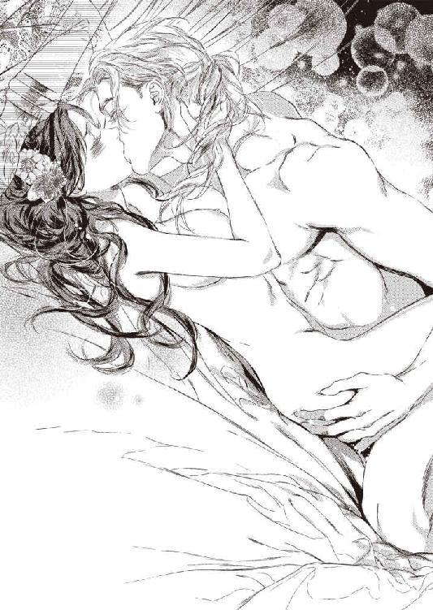
「あぁっ......！ い、ぃ......。気持ち、ぃ......っ。もっと奥処......、突いて......っ、ずんずん......って......」
「いやらしい奥様だ。だが、そこがいい」
嬉しそうに笑って、獰猛に唇をふさぐ。
「ん......ッ、んぅ」
すがりつき、揺さぶられながらフィオリーネは懸命に舌を絡めた。
「女神のように尊いのに......こんなにも可愛くて、淫らだ。たまらないよ......」
熱い吐息を洩らし、ごりごりと子宮口を突き上げる。
「ぁ、あ！ あんッ、んん......、ひ......ぁ......あ......！」
びくっと背がしなる。髪の毛が逆立つような感覚とともに凄まじいばかりの快感が押し寄せた。熱い飛沫が注がれるのを感じると同時にフッと意識が途切れ、気がつくとあやすように頬を撫でながら繰り返しくちづけられていた。
「フィオリーネ......。愛してる......」
涙ぐみながら何度も頷き、背中に腕を回して抱きしめる。彼が未だ猛ったままであることを感じて頬を染めた。覗き込んだ瞳に欲望がたゆたい、妖美な光がゆらめいている。
どちらともなく腰が揺れ始め、結合部分から蜜まじりの精がねっとりと泡立ちながら噴きこぼれた。
何度気を遣っても際限なく欲望が芽吹いた。フィオリーネは我を忘れて喘ぎ、悶えた。
箍が外れたような嬌態に欲望を煽られたリーンハルトもまた淫戯に没入し、体勢を変えながら幾度となくフィオリーネを貫いては絶頂させた。好きではなかったはずの後背位にもひどく昂奮を覚え、夢中で腰を振りたくった。
半ば朦朧としながら媾合を繰り返し、互いに抱き合って泥のような眠りについたときには夜空はほんのりと白み始めていた。
第六章 愛の翼、欲望の枷
すべてのわだかまりが解け、遅まきながら真の蜜月が始まった。もはや『勝負』は関係なかったけれど、意地を張り合っているあいだにフィオリーネの身体はすっかり愉悦を覚え込み、快楽になじんでしまった。
促されるまま彼に跨がり、騎乗位でうっとりと身体を揺らしていて、ふと我に返って恥ずかしくなった。
「これじゃ、どっちが籠絡されたんだかわからないわ。......わたしの負けね」
溜息をつくと、リーンハルトは愛おしそうに微笑んだ。
「いいや、勝利はあなたのものだよ。私はあなたに夢中なんだ。愛しい人。さぁ、もっと腰を振って。私のものでうんと気持ちよくなって、可愛い声を聞かせてくれ」
甘い声で請われれば悪い気はしない。彼が喜ぶように腰を振り、たゆたゆと乳房を揺らしてみせた。彼の美しい翠の瞳が欲望に艶めく様は、何度見ても飽きない。ドキドキして、もっといやらしいことでもなんでもしてあげたくなってしまう。
もっとも、大抵の淫戯は賭けをしているときに済ませてしまったのだが。気持ちが通じあえば得られる悦びは段違いだ。
ときには庭を散策中に茂みの陰で身体を繋げたこともあった。誰かに見られるのではないかとひやひやしたが、それにまた昂奮を煽られて声を抑えるのが一苦労だった。
むろん、いつも近くに控えているカトリンには筒抜けなのだろうけど、よくできた侍女はそんなことはおくびにも出さず澄ましている。
リーンハルトは部下たちに対しては冷厳な表情を崩さなかったが、妻を溺愛していることはさっそくに知れ渡り、四角四面の堅苦しい人物だと思われていた彼の印象はずいぶん変わったのだった。
甘い新婚生活が飽きもせず続く、ある日のこと。フィオリーネに一通の招待状が届いた。ゴルツ城伯夫人からの、慈善バザーへの誘いだ。
慈善活動は貴婦人にとって義務のようなものだ。何かと行動を制限されがちな上流階級の女性にとっては外出のいい口実にもなる。もちろん、自らの『仕事』として熱心に取り組む女性も多い。
フィオリーネの母王妃も定期的に慈善の催しを開き、病院や孤児院を慰問していた。父王は長く続いた戦乱で低下した医療水準を引き上げることに心を砕き、各地に病院を作ると同時に医師や看護師の育成にも熱心に取り組んでいる。
今回フィオリーネの元に届いた招待状は、貴婦人たちが手作りした小物類や不用となった装身具などを売り、その売り上げを養護施設に寄付するというものだ。
事情通の侍女によれば、実態はほとんど上流階級の女性たちの茶話会みたいなものだという。出品されるものは商人たちが分け合って買い上げる。同時に彼らは持参した自分たちの商品を売り込み、いつもその売り上げのほうが買取額を大幅に上回るのだそうだ。
「抜け目ないわねぇ」
カトリンが呆れた鼻息をつき、フィオリーネは苦笑した。
「でも、そのぶんこちらが出すものも少しは上乗せして引き取ってくれるのでしょう？」
町出身の侍女が頷く。
「皆さん、見栄もあるので、品質のいいものを出されます。刺繍を施した手巾なんかは売れ筋で、どの商人も喜んで引き取ってくれますわ。宝石を使った装身具も人気です」
宝飾品は一から作ったものよりも中古品のほうが多いくらいで、鑑定がきちんとなされていれば王侯貴族でも気にせず購入する。母はいつも顔なじみの商人があちこちから仕入れてきたなかから気に入ったものを選んでいた。フィオリーネもいくつか買ってもらい、今でも大切にしている。
「あとは......古着ですね。仕立てるのはお金がかかって大変なので、中古品がよく売れるんですよ」
「きちんと売り上げ金が寄付されて、なおかつ商人の利益にもなるのなら別にいいんじゃないかしら」
フィオリーネが言うと、カトリンも頷いた。
出席してもかまわないかとリーンハルトに尋ねると、彼は少し考え込むような顔になった。
「バザーはかまわないが......、場所はゴルツ城伯の館か」
「はい。あの、何か問題でも......？」
「いや」
リーンハルトは苦笑してかぶりを振った。
「あの城伯夫人がどうも苦手でね。噂話が大好きなご婦人で。ま、今回は女性だけの集まりだから私はお呼びでないが」
「行かないほうが、いいですか？」
「そんなことはない。あなたもたまには思う存分羽を伸ばしたいだろう」
「別に我慢なんてしてませんけど......」
からかうように言われて少し赤くなる。
「行ってきなさい。ただし、カトリンを連れて、馬車で行くのだよ。道中の護衛も付ける」
はい、と素直に頷いた。王都でも、お忍びでなければ侍女や護衛を連れて馬車で出かけるのが当然だった。
許可を得たので、さっそく出品するものを侍女たちと一緒に選んだ。
刺繍は手慰みとしてふだんからおこなっているのでたくさんある。使い勝手のよさそうな手巾やちょっとした小物の他、ミパルティのために手作りした首輪も持っていくことにした。
最初はリボンを結んでいたのだが、すぐに解けてしまうので、砦の鍛冶屋に頼んで小さな金具を作ってもらい、ベルト状のものにした。綺麗な生地や余ったレース、ガラスビーズなどもあしらって、なかなか可愛くできていると思う。
もう何個も作って余りぎみだし、猫を飼っている女性は多いので需要があるかもしれない。商人に売るのではなく、出席者に買ってもらえれば交流の糸口にもなるだろう。
あとは、王宮から持参したものの、もう着ないだろうなと思われる少女っぽい色みのドレスなども思い切って手放すことにした。
初めて参加するバザーで様子がわからないので品数は控えめにしておく。カトリンが言うには、王女であり公爵夫人であるフィオリーネを招いたのは城伯夫人の見栄と客寄せのためだろうとのことだ。確かにそれはあるかもしれない。
バザー当日、出品物を馬車に積み、カトリンと護衛の騎士二名、従僕二名を伴ってフィオリーネは砦を出た。
先日、騎馬で通過した城門を、今度は馬車のなかから眺める。城伯の館へ続く道はいくつも角があり、曲がりくねっていた。
やがて望楼つきの内壁で囲まれた城館が見えてくる。昔はここも戦闘用の砦だったが、周囲に人が集まって民家が建ち並ぶようになり、防壁で囲って都市となったのだ。
フィオリーネが到着すると、すでに参加者全員が顔を揃えていた。結婚の祝宴に招かれていたのは城伯夫人だけなので、あとはすべて初めて顔を合わせる人々だ。
貴族としては最下位の諸侯の奥方がふたりいる他は爵位を持たない騎士の奥方や、富農・豪商の妻とその娘たちだった。
砦の守備隊長には伯爵以上の爵位を持つ騎士が就任するため、誰であろうと赴任するのは城伯よりも身分の高い人物だ。現在の守備隊長リーンハルトは公爵。さらにフィオリーネは王女であり、兄嫁が今のところいないので王妃に次ぐ高貴な身分である。
辺境の住民にとって、本来なら遠目にさえ見ることのできない貴婦人だ。直に挨拶できることに、みな感激しきりだった。城伯夫人など得意満面である。彼女の虚栄心を満たすために招かれたのは間違いなくても、地元の住民と親しく接することができるのは嬉しい。
王都から遠く離れた場所では王家への忠誠心も薄くなりがちだ。フィオリーネに対する心証は、そのまま王家に対する心証となるのだから、ぞんざいな受け答えはできない。むろん、夫の率いる守備隊に対しても、よりいっそう信頼を深めてほしい。
そう考えるとなかなか緊張したが、気取らない応対にみな好印象を持ってくれたようだ。フィオリーネが持参した出品物は、待機している商人にはほとんど渡らずに参加者たちのあいだであっというまに捌けてしまった。
猫の首輪も大好評だった。やはり猫を飼っている女性は多く、ドレスも娘に着せたいとすぐに売れた。
残りの出品物は商人がすべて買い上げ、昼食が済むと今度は彼らが持ってきた商品が並べられた。フィオリーネは夫と一緒に選びたいからと、眺めるだけに留めた。抜け目ない商人たちは、さっそく砦に伺いますと揉み手をした。
見ているだけでも楽しかったし、頼まれて似合いそうなものを見立ててあげればとても喜ばれた。王女のお見立て、というだけでも参加者にとっては嬉しいようで、売れ行きのよさに商人もほくほく顔だ。
そろそろ帰ろうとすると、少し休んで行かれてはと城伯夫人に引き止められた。別に疲れてはいなかったが、主催者である夫人をねぎらうつもりで承知した。
他の参加者たちと別れ、別室へ向かう。
「実は......、わたくしの姪が、ぜひ奥方様にお会いしたいと申しておりますの」
歩きながらひそりと小声で耳打ちされた。カトリンは数歩下がって付いてきている。夫人は横目でちらっと彼女を見た。聞かれたくなさそうだが、遠ざけるつもりはない。カトリンは単なる召使ではないし、長い付き合いで口の固さは信用している。
「......バザーにはいらっしゃらなかったのね？」
「ええ、引っ込み思案な娘で......」
夫人は眉を垂れて苦笑した。案内されたのは城のずっと奥まった一角だった。テーブルには洋梨やラズベリーのワイン、林檎酒などの飲み物、ナッツ菓子や蜂蜜ケーキなどの軽食が用意され、フィオリーネよりいくらか年上らしい女性が待っていた。
フィオリーネを見ると彼女はさっと立ち上がり、膝を折って挨拶した。
「姪のイジドーラです」
城伯夫人の紹介で、彼女はさらに頭を垂れる。フィオリーネは頷いた。
「ごきげんよう」
「お初にお目にかかります、奥方様」
顔を上げたイジドーラを見て、フィオリーネはおやと思った。引っ込み思案と夫人は言っていたが、顔だちはむしろ勝気そうだ。美しい女性だけれど、こちらを見る青い瞳はどこか品定めするような目つきで、正直あまりいい気分はしない。
金髪を結い上げ、宝石を散りばめた櫛を挿している。首飾りもドレスも豪華なものだ。城伯夫人の姪にしてはずいぶん華美な気がするが、きっと生家が裕福なのだろう。
イジドーラの口端がほんの一瞬奇妙にゆがむ。彼女はすぐににっこりして席を勧めた。
「わざわざお運びいただき光栄ですわ。どうぞお座りくださいませ」
一同が着席すると給仕が飲み物を注ぐ。夫人の目配せで召使は一礼して退出した。室内には四人だけが残った。
最初は当たり障りのない話をしていたが、やがてフィオリーネは隣に座るカトリンの異変に気付いた。こくりこくりと舟を漕いでいる。
「カトリン？ 大丈夫？」
そっと揺すってみると、彼女はぼんやりした顔で恥ずかしそうに頷いた。
「すみません、奥方様。なんだかすごく......眠くて......」
呟くあいだにも瞼が下がり、ついに彼女はテーブルに突っ伏してしまった。
「カトリン、カトリン」
いくら揺さぶっても、すやすやと寝息が聞こえるばかりだ。本格的に寝入ってしまったらしい。
「どうしたのかしら......」
困惑するフィオリーネに愛想よく夫人は勧めた。
「疲れているのでしょう。そのまま寝かせてあげては」
「大丈夫、しばらくすれば目を覚ましますわ」
イジドーラの口調にふと不審を覚えた。眉をひそめて見つめると、彼女は嘲るようにくすりと笑った。
「侍女には聞かれたくないので眠っていただきましたのよ」
「......なんですって？」
「お怒りにならないでくださいましな、王女様」
城伯夫人が急いで取りなす。
「彼女の話を聞けば必ずご納得いただけますわ。飲ませたのはただの眠り薬ですから心配なさらずともほどなく目を覚まします」
「カトリンは子どもの頃からずっと仕えてくれている信頼のおける侍女なのよ？ それでも聞かれたくないというからには、よほど内密の話なのでしょうね」
「ええ、もちろん」
せせら笑うようにイジドーラが答えた。ムッとして睨んでも、挑みかかるような視線が返ってくるだけだ。仕方なくフィオリーネは頷いた。
「では伺いましょう。その前に、カトリンをそこの長椅子にでも寝かせてください。このままじゃ可哀相。でも、別室に運び出すことは許しません」
「まぁ、ひとりになるのが怖いんですの？」
「自分の立場をわきまえているだけです」
挑発には乗らずそっけなく返すとイジドーラのこめかみがぴくりと引き攣った。慌てて夫人が割って入る。
「もちろんですわ。ゆっくり寝かせてあげましょう」
夫人はベルを鳴らして給仕を呼び、部屋の一隅にある長椅子に移した。カトリンは目を覚ますことなく昏々と眠り込んでいる。
「──それで。話とはなんですか」
「王女様はリンドホルム公爵の評判について、ご存じなのかしら......？」
目を細め、イジドーラが嘲るように尋ねる。
「元婚約者についての馬鹿げた噂のことなら知っています」
ぴしゃりと返すと、イジドーラは大仰に目を丸くした。
「まぁ！ 承知の上で嫁いでいらっしゃるなんて、王女様は勇敢な方ですのね」
「くだらない噂など信じません」
今更そんなことを持ち出す意図がわからず、用心深く彼女を窺う。城伯夫人が妙にわくわくした顔つきなのも気になった。
（なんなの、いったい......？）
イジドーラは余裕の表情でベリーのワインを一口飲み、艶然と微笑んだ。
「ご安心なさって。その噂はでたらめです」
「......！」
「公爵は婚約者を殺しておりませんし、食べてもいません。婚約者は生きています。こうして今ここに、ね」
フィオリーネはぽかんとイジドーラを見つめた。
「あなたが......？」
「ええ。リンドホルム公爵リーンハルト様の婚約者だった、イジドーラ・ディターレです。わたしが婚約していた頃は、まだ公爵位は継いでいらっしゃいませんでしたが」
くすりと彼女は笑った。気取っていても、底知れぬ悪意を感じさせる笑みだ。この女は危険だと、本能が囁く。
「......生きていたのなら、どうして戻ってこなかったの？ そのせいでリーンハルトはあなたのお父様にとんでもない悪評をたてられたのよ」
「それは申し訳なかったと思いますわ」
しおらしくうなだれながら、その表情はちっとも悪いと思っていないようだ。
「仕方なかったのです。リーンハルト様とは結婚したくなかったんですもの......。だってわたし、恋人がいましたのよ？ なのに公爵家と縁を繋ぎたがった父に、無理やり婚約させられたんです」
フィオリーネは目を瞠った。まさか本当に自分の推測が当たっていたとは。
「わたしの恋人は騎士でしたの。いわゆる......盗賊騎士」
「──は？」
「リーンハルト様が皆殺しにしてしまった盗賊団を率いていましたのよ」
きゅうっと口角を吊り上げてイジドーラは笑った。
「彼は跡取りではなかったので武芸で身を立てようとしたのですけれど、周囲とうまくいかなくて......。腕はとても立つのに、少ぅし短気なのですね。──それでまぁ、いろいろとございまして、正騎士様の従者も馘になったものですから、自主的に街道沿いの警備を始めましたの」
「それって......要するに通行人に難癖をつけて金品を巻き上げるのでしょう。私闘権を盾に強奪を繰り返す騎士くずれがいることくらい知っています」
「まぁ、王女様は意外と物知りでいらっしゃいますのねぇ」
ほほほ、とイジドーラは厭味ったらしい哄笑を上げた。
「仰るとおりですわ。でも私闘権は騎士として当然の権利ですもの、彼は悪いことはしていませんのよ。それに、女性にはとても優しいんですの。強くて頼りがいのある、素敵な騎士ですわ」
けろりとした顔でのたまうイジドーラを、フィオリーネは呆れて眺めた。
城伯夫人は彼女の話にうんうん頷きながらうっとりと頬を染めている。おそらく頭のなかではハンサムな悪漢騎士が活躍するロマンチック活劇が展開されているのだろう。
フィオリーネとて恋と冒険の騎士物語は大好きだ。自分で読むのも、朗読してもらうのも、吟遊詩人の弾き語りもみんないい。だが、あくまで娯楽としてのフィクションであることは理解している。父や兄から盗賊騎士のロマンチックとは程遠い実情を何度も聞いた。
現実を知らないであろう城伯夫人はともかく、イジドーラは恋人の行状をなんとも思わないのだろうか。
「あなた、平気なの？ 恋人が罪もない人たちを脅して、金品を強奪しても？」
「命まで取るわけじゃありませんもの。また稼げばいいんですわ」
さらっと返され、開いた口がふさがらない。イジドーラは逆に恨みがましくフィオリーネを睨んだ。
「なのにあの男は、彼を慕って集まった仲間たちを皆殺しにしたんですよ。悪い評判が立つくらいなんだと言うの。ざまぁみろだわ」
一瞬たじろいだものの、気を取り直してフィオリーネは毅然と言い返した。
「リーンハルトは高潔な騎士です。無抵抗な相手を攻撃するわけがない。きちんと投降勧告したはずだわ。それでも向かってきたから仕方なく──」
「だからといって、何も皆殺しにすることないじゃないのっ」
非難され、ぐっと詰まる。それはリーンハルト自身が気にしていたことだ。叱責も受けた。〈狂狼戦士〉はひとたび箍が外れてしまえば敵を殲滅するまで止まらない。たとえ降参し、必死に命乞いしたところで耳には届かない。
「......あなたの恋人も亡くなったの......？」
「おあいにくさま、ピンピンしてますわよ」
イジドーラは憎々しげにフンと鼻息をついた。
「どうせあの根城は捨てるつもりだったの。国王軍に目をつけられてしまったし。だから、仲間たちがあの男の注意を引きつけているあいだにわたしたちは脱出した。適当なところで逃げ出して、あとで落ち合うはずだったのに......。ひとりも来なかった」
悔しそうに唇を噛む姿にフィオリーネは絶句した。
「しばらく待ったけど、下っぱ以外は全員殺されてしまったとわかって諦めたわ。わたしたちはふたりで国境を越え、ファラハールへ逃げたの」
「ファラハールへ......!?」
「その頃はまだ行き来が自由だったから。そこでよい方に巡り会って、騎士として仕官することができたわ。とてもよいご主人様よ。彼ばかりかわたしのことも重用してくれる」
イジドーラは蛇のような目つきでにんまりした。
「その方、あなたにとても興味があるんですって。ずいぶん前からご執心で......。国へ連れ帰ってお妃になさりたいそうよ」
「な......!? 何言って......」
「王女様には、公爵よりもふさわしいお相手だと思うわ。──ねぇ、陛下」
「!?」
「むろんだ」
笑みをふくんだ声が背後から響き、ぎくりと竦み上がる。振り向くと、開け放してあったテラスから、ひとりの男性が現れた。
黒い髪。夜空のごとき濃紺の瞳。やや浅黒い肌色。男らしく野性味のある、精悍な美貌の青年だ。
身にまとっているのはファラハールの衣服だろうか。立ち襟の白いシャツの上に合わせた深いＶネックの黒い長外套は膝丈で、金糸を使った精緻な刺繍が施されている。
ベルトには豪華な鞘に収められた短剣。黒革の細身のブーツはぴかぴかに磨かれ、かかとには金の拍車が付いていた。
すらりと背が高く、堂々とした体躯と態度からも高い身分であることが窺える。
（陛下、ですって......？）
──まさか......!?
エキゾチックな美青年は呆然とするフィオリーネに歩み寄り、跪いてうやうやしく手を取った。
「ファラハールの国王セリムだ。グランフェルトの王女、フィオリーネ姫。また逢えて嬉しいよ」
手の甲に唇を押し当てて妖しく微笑む。隣国の国王を名乗る青年を、フィオリーネは当惑して見返した。
（また......？）
何を言っているのだろう。ファラハールの王と会ったことなどない。
とまどってフィオリーネは青年を見返した。濃紺の虹彩には銀粉の如き光が散らばり、まさしく星空のようだ。
（......見たことが、ある......？）
この瞳に、じっと見つめられたことがあるような──。
記憶の底で、何かが揺らめいた。何か恐ろしいものが、のたりと鎌首をもたげる。
反射的に引き抜こうとした指を掴まれ、背中が冷たくなった。青年はかすかに目を細め、ニッと笑った。
「......っ！ あな、た......!?」
「思い出してくれたかな？ 三年前、あなたを見初めて我が国へお連れしようとしたのだが......、残念ながら失敗してしまった」
あのときの、誘拐犯──!!
力任せに手を振り払ってフィオリーネは席を立った。
「どういうこと!? 国王が、余所の国の王女を攫うなんて......っ」
「あの頃はまだ国王ではなく王子だった。お忍びでグランフェルトの王都を視察していたんだが、帰国するにあたって何か手みやげが欲しくてな」
彼は悪びれもせずニヤリとした。
「手みやげ......!?」
「滞在中に偶然あなたを見かけ、一目で心惹かれた。最初は王女だとは知らなかったが、わかればなおのこと欲しくなった。グランフェルトの国王、〈狼王〉ルガートの、ただひとりの愛娘」
「だ、だったら正式に結婚を申し込めば......。あなたは王子だったのでしょう？ なのに誘拐するなんて......」
「確かに、ふつうに考えればそうすべきだったろう。しかし果たしてルガート王が承知するかどうか。いや、望みは薄いとわかっていた。すでに我が国とグランフェルトはかなり揉めていたからな」
フィオリーネはとまどった。国交断絶は誘拐事件がきっかけではなかったのか......？
表情を読んだセリムがにんまりする。
「我が国が、ルガート王の反対勢力に資金提供していることがバレてしまってね」
「......！」
「国交断絶は避けられない状況だった。そんな時期に視察に行ったのは、今を逃せば王都まで入り込める機会は当分ないだろうと思ってのことだ。だから、『後ほど改めて』という選択肢は、あのときの余にはなかったのだよ」
「だ、だからって街中で誘拐するなんて......無茶苦茶だわ......！」
「王城に忍び込んで攫うよりは、まだ成功の確率が高かった。出だしは上手く行ったのに、思ったより早く兄王子たちに気付かれてしまって。侍女の呼子には参ったよ。叫び声だけなら騒ぎでかき消すこともできたろうに、あんなものを吹き鳴らされては」
フィオリーネはぎゅっと拳を握り、苦笑いするセリムを睨み付けた。あのとき機転を利かせてくれた侍女は、今は薬を盛られて眠り込んでいる。頼るわけにはいかない。
「まぁ、確かにあの一件で幾分かは国交断絶が早まったかもしれないな。おかげで商人たちからは文句たらたら、父にもひどく怒られた。その詫びにいろいろと手を回して、この国境の町で商売ができるように取り計らった。城伯にはずいぶん賂を送ったし、特例を認めさせるために説得力のある請願書を作るにあたって、それらしい文言も考えてやった。──そなたを諦めたわけではけっしてなかったのでな」
伸ばされた手を、フィオリーネは毅然と撥ねのけた。セリムは目を瞠ったが、気分を害した様子はなく、むしろ嬉しげにニヤリとして手の甲を撫でた。
「昨年、父が亡くなって跡を継ぐと、早速そなたとの婚姻をルガート王に打診した。余が誘拐犯だとは気付かれていなかったからな。代替わりは関係改善にちょうどよい機会だと持ちかけたのだ。友誼のしるしとして互いに婚姻関係を結ぼうと。そなたを妃として迎える代わりに余の妹をローラント王太子の妃として輿入れさせる。いい考えだとは思わないか？ なのにルガート王はにべもなく断り、そのうえ慌ただしくそなたを降嫁させてしまった......。ひどい侮辱だ。一国の王の求婚を断って、臣下に嫁がせるとは」
「身分など関係ないわ。父はわたしが幸せになることを願って、最もふさわしい相手を選んでくれたのよ」
「公爵夫人より王妃のほうが、ずっとそなたにふさわしい」
「言ったでしょう？ 身分は関係ないと。わたしはリンドホルム公爵ではなく、リーンハルトを愛しています」
「王妃になりたくないのか？」
「なりたくないわ。他のお相手を捜してください」
きっぱり言うと、セリムは肩をすくめた。
「やれやれ。ふつうは目の色を変えて王妃になりたがるものなのに」
ぼやく王に、それまでおもしろそうに眺めていたイジドーラがくすくす笑った。
「女というものは、心から愛する殿方がいれば地位など二の次なのですわ、陛下」
「ああ、そうか。おまえも地位より愛を選んだのだったな、ナフラよ」
「はい」
芝居がかってイジドーラが会釈する。
「ナフラ......？」
「余がこの女に与えた名だ。我が国の言葉で『蜂』を意味する。艶やかな女だが、うっかりすると刺されてしまう。蝶より蜂のほうがふさわしかろう」
「お褒めに預かり光栄ですわ」
「ふむ。地位より愛か......。ならば、そなたには余を愛していただくことにしよう」
「わたしが愛しているのはリーンハルトです。あなたを好きにはなりません！」
「それはわからんぞ？」
顎を掴まれ、ぐっと引き寄せられる。今度はもがいても振りほどけなかった。セリムは濃紺の瞳を妖しく輝かせ、こわばるフィオリーネの顔を覗き込んだ。
「女を躾けるための手段なら、我が国の後宮にはいくらでもある。夫のことなどすぐに忘れて余に夢中になるさ。そして王妃にしてほしいと自らせがむのだ」
「そんなことしませんっ、離して！」
いきなり身体を反転させられ、後ろ手に拘束されてフィオリーネは呻いた。耳元に唇を寄せてセリムが囁く。
「いいのか？ あまり手間をかけさせると、この侍女の眠りを永遠のものとしなくてはならなくなる」
「......っ」
「この侍女は三年前と同じ女だな？ 見覚えがある。あのとき邪魔をしてくれた報いを、今ここで受けさせてやってもよいのだぞ」
片手で難なくフィオリーネを押さえ込んだ男が、空いた手でベルトに挿していた短剣を引き抜く。フィオリーネは真っ青になった。
「やめて！ カトリンを傷つけないで」
「そうしてほしければ、おとなしく従うことだ」
「......わかったわ」
やむを得ず頷いた。セリムが視線を向けるとイジドーラは頷いて立ち上がった。
「馬車の用意はできています」
「よし。侍女が目を覚ます前に出よう。余とて好きこのんで人を殺めたいわけではない。〈狂狼戦士〉とかいう化け物とは違うんだ」
「〈狂狼戦士〉は戦神に選ばれた戦士よ！ 化け物なんかじゃないわ！」
イジドーラが嫌悪に顔をゆがめて吐き捨てた。
「見境なしに殺しまくるような奴が化け物でなくてなんなのよ？」
「────ちょ、ちょっと待って！ 冗談でしょう!?」
金切り声で叫んだのはゴルツ城伯夫人だった。彼女はセリムが登場した頃からぽかんと成り行きを眺めていた。頭の中の妄想劇場は、いつのまにか尻すぼみに終演となっていたらしい。
「話が違うわ、イジドーラ！ あなた言ってたじゃない！ 事件の真相を明かして、自分が生きて幸せに暮らしていることを知らせて、公爵様と王女様を安心させてあげたいって......。だからわたくしは......！」
「王女様にはご安心いただいたわ。公爵様には叔母様が話してあげて」
嘲笑されて城伯夫人は眉を吊り上げた。
「あんたは姪じゃない、赤の他人よ！ こんな、とんでもないことにわたくしを巻き込まないで！」
「うるさいわねぇ」
肩をすくめたイジドーラは卓上にあったナプキンを掴み、城伯夫人の口にねじ込んだ。
「ぅぐ!?」
どこからともなく取り出した紐で、目を白黒させる夫人を手早く縛り上げ、カトリンが眠っている長椅子の足元に容赦なく突き飛ばす。
「侍女が目を覚ましたら解いてもらえるわ。しばらくの辛抱よ。──念のため、足も縛っておきましょう」
足首も縛り上げられた夫人は目に涙を浮かべて必死にイジドーラを見上げたが、返ってきたのは冷笑だけだった。
途中で騒がれては困るとセリムに進言し、彼女はフィオリーネの口にもナプキンを押し込んだ。縛られてはいないが、男の大きな手でがっちりと後ろ手に拘束されて身動きできない。さらに悲鳴を上げることもできなくなった。
三人はバルコニーから中庭に出ると、植え込みの陰に沿って館の裏手に廻った。抜かりなく下見をしていたようで、先導するイジドーラの足どりに迷いはない。
裏口の木戸を開けるとそこには目立たない感じの馬車が一台停まっていた。三人が乗り込むと即座に馬車は走り出した。馬車のなかには頭巾付きの外套が用意されていて、フィオリーネはそれをすっぽりとかぶせられた。外套の下では相変わらず手首を拘束されている。
馬車は正門ではなく、城館に近い側門から城外へ出た。市場や繁華街からは遠いので、出入りする者は少なく、衛兵もひとりしかいない。
イジドーラが馬車の窓から顔を覗かせて手を振ると、引き止められることもなく馬車は城市の外へ走り出た。
単に顔見知りだったのか、買収されているのかはわからないが、これでもう馬車を止めるものはない。フィオリーネは絶望に呻いた。
（このままファラハールへ連れて行かれてしまうの......!?）
「......ここまで来ればいいだろう」
呟いたセリムが掴んでいた手を離し、口に押し込まれたナプキンを取ってポイと窓外に投げ捨てる。フィオリーネは無我夢中で窓から顔を突き出した。
いつのまにか馬車は異国の装束をまとった騎士の一団に前後左右を囲まれていた。ファラハールの騎士たちが、道沿いに潜んで馬車が来るのを待っていたのだ。
これでは決死の覚悟で馬車から飛び下りたところですぐに捕まってしまう。
くすくすと意地悪くイジドーラが笑った。
「砦の守備隊でなくて残念ねぇ。彼らが追いかけて来る頃にはとっくに国境を越えてるわ」
グランフェルトとファラハールの国境には河が流れ、自然の国境線となっている。橋はかけられていないので浅瀬を選んで渡らなければならないが、この辺りには馬車が渡れるような浅瀬は一か所しかない。
実際に行ったことはなかったが、城壁の上からあそこだとリーンハルトが示してくれた。不穏な動きがないか、いつも見張っているのだ、とも。
（──そうだわ！ ならばこの馬車も砦から見えているはずよ）
だめだ、気付いたところで間に合わない。それに守備隊は出て行くよりも入ってくる動きのほうを警戒している。ファラハールへ向かう馬車にはさほど関心を払わないのではないか。
いや、馬車だけならともかく、護衛の騎士たちがこんなにいたら不審に思うはず。商隊の護衛にしてはものものしすぎる。
（目を引くことができれば、もしかして......！）
窓から身を乗り出して手を振り回そうとしたが、気付いたセリムに引き戻されてしまう。
「おとなしくしていろ」
「いやっ、離して！」
抱きすくめられて暴れるフィオリーネに、セリムは呆れたような溜息をついた。
「やれやれ。ずいぶんと威勢よくなったものだ。以前連れ去ろうとしたときは半ば失神状態だったのに」
「幻滅なさったのなら馬車から突き落としてはいかが？ この女が死ねば、少しは殺された仲間の供養になりますわ」
冷笑を浮かべてイジドーラが恐ろしい科白を吐く。セリムは苦笑してかぶりを振った。
「まぁ、そう言うな。気の強い女のほうが躾け甲斐があるではないか。より一層愉しめるというものだ」
「陛下も物好きですわねぇ。それともファラハールの男は皆そのように悪趣味なのかしら」
呆れてイジドーラは肩をすくめた。ずけずけと不敬な言葉を吐いてもセリムはニヤニヤするばかりで咎めようとはしない。
抵抗をやめないフィオリーネを持て余したか、彼はいきなり唇をふさいだ。
「んむッ......!?」
ぞわりと鳥肌が立つ。なりふり構わず抗ったが両の手首を掴まれ、噛みつくように唇を押し付けられて身動きできない。舌先で上唇の裏をゾロリと舐められて嫌悪で鳥肌が立つ。
「おっと」
噛み付いてやろうとしたが素早く躱された。思いっきり突き飛ばして座席の隅に逃れると、セリムは唇を拭ってニヤリとした。
「危ない、危ない。愛らしい顔をして姫君は悍馬のようだな。......これは調教のしがいがありそうだ」
自分を守るように腕を身体に巻きつけ、背中を座席の角に強く押し当てて男を睨みつける。
セリムは降参とばかりに両手を挙げた。
「悪かったよ。もうしない。とりあえず、馬車の中では、な」
用心しながらフィオリーネは窓に取りすがった。ゆったりと座席にもたれてセリムはうそぶいた。
「気の済むまで眺めるといい。もう二度とは見られぬ景色だ」
フィオリーネは窓枠を握りしめ、遠く聳え立つシュトルツェーレ城砦を懸命に見つめた。
（お願い、気付いて。リーンハルト......！）
絶望のさなかにも必死に祈る。
「リーンハルト......」
思わず洩れたかすれ声に、イジドーラが馬鹿にしたように鼻を鳴らした。
「諦めなさい。たとえ声が嗄れるほど叫んだって聞こえやしないわ」
セリムが何か言ったが耳に入らなかった。フィオリーネはある一点を凝視していた。砦の方向から何かが近づいてくる。
豆粒のような点は、目を凝らすうちにどんどん大きくなった。最初はただの点にすぎなかったのが、やがて黒い馬にまたがって猛然と疾駆する騎士に見えてくる。
傾いた太陽がその影を長く大地に刻み、磨かれた銀の鎖帷子が神々しく輝く。その後方にはさらにふたりの騎士が見えた。
「リーンハルト......？」
「しつこいわねぇ」
呟き声にイジドーラが顔をしかめる。フィオリーネは窓から大きく身を乗り出し、声の限りに叫んだ。
「リーンハルト！」
「おい、そんなに身を乗り出すな。危ない」
辟易した口調でセリムがたしなめると同時に、彼の側の窓からファラハールの騎士が緊張した面持ちで叫んだ。
「陛下、何者かがこちらへ向かっています。守備隊の騎士かと......」
「何!? 気付いたにしても早すぎるだろう」
セリムもさすがに驚き、馬車の速度を上げるよう御者に命じた。
その間にも騎士は全速力で接近してくる。強健な漆黒の軍馬にまたがった、その姿。交戦場で演習を行う姿を何度も見た。
間違いない。彼だ。彼が来てくれた。リーンハルトが助けに来てくれた......！
「リーンハルト！ ここよ！ わたしはここ......きゃぁっ」
後ろから力任せに引っ張られ、バランスを崩してフィオリーネはセリムの腕の中に倒れ込んだ。遮二無二身を起こして窓にかじりつくと、勢いで肘鉄を食らったセリムが顎を押さえて毒づいた。
ファラハールの騎士たちが馬の向きを変え、迎撃に向かうのが見えて大きく息をのむ。
無駄のない動作で長槍を構え、揃って突撃態勢を取る。リーンハルトは兜の面頬を勢いよく下ろし、同じく槍を構えた。追い付いた二名の騎士も同様に槍を構えて突進してくる。
稲妻のごとく槍が一閃し、ファラハールの騎士が吹き飛ばされた。乗り手を失った馬が悲鳴のように嘶いて隊列を逸れて行く。
続けざまにファラハールの騎士が二人、馬から叩き落とされた。全力疾走する馬から放り出されてはただでは済まない。勢いよく転がった騎士たちは頚椎が折れたのか、横たわったままピクリとも動かない。
リーンハルトはすでに手綱を使わず、鐙と膝で巧みに馬を御していた。両手で長槍を回転させ、右へ左へ振り回すたびにファラハールの騎士たちが軽々と吹き飛ばされ、薙ぎ払われていく。唖然とするほどの凄まじい膂力だ。二名の騎士も奮闘しているが、リーンハルトの強さは段違いだった。
「なんなんだ、あいつは。化け物か!?」
いつのまにかフィオリーネと並んで闘いに見入っていたセリムが呆然と呟く。
リーンハルトは迎撃に向かった騎士たちをあっという間に始末すると、速度を上げた馬車を追い始めた。彼が窓に並び、面頬越しに目が合う。フィオリーネは身を乗り出し、セリムはたじろいだように引っ込んだ。
熱いものがこみ上げた瞬間、どこからか射かけられた矢が兜に当たって跳ね返った。続いて飛来した何本もの矢を、彼は煩わしげに槍で払った。
その動作でほんの少し速度が落ち、馬車が少しだけ前に出る。ファラハールの騎士たちが何か叫ぶのが聞こえ、セリムの顔に喜色が浮かんだ。
「援軍だ！」
前方に目をやると、いつのまにか国境の河が迫っていた。バシャバシャとしぶきを上げて、騎士の一団が渡河してくるのが見える。フィオリーネの喉から絶望の呻きが洩れた。
その瞬間、ドン！と馬車の扉に衝撃が走った。ふたたびリーンハルトが馬車と並走していた。
「フィオリーネ！」
面頬を上げてリーンハルトが叫ぶ。無我夢中でフィオリーネは窓から身を乗り出した。槍を右手で握った彼が、左手をこちらに差し伸べる。
「来い！」
躊躇なくその手を取ろうと伸ばした腕を、慌ててセリムが掴んだ。力任せに振り払うと、火事場の馬鹿力か、当たりどころが良かったのか、彼は馬車の反対側に転がった。
イジドーラに抱きとめられながら切羽詰まった声でセリムは叫んだ。
「やめろ──！」
意に介さず目一杯腕を伸ばしてリーンハルトの手を掴む。猛スピードで走る馬車は激しく振動していたが、彼は巧みに馬を御してぴたりと横に付けると、足を馬車の扉に踏ん張り、弾みをつけてフィオリーネの腕をぐいと引いた。
ふわりと一瞬、身体が宙を舞う。
次の瞬間、フィオリーネはしっかりと彼の胸に抱き留められていた。
「掴まってろ！」
「はいっ」
背中に腕を回してぎゅっとしがみつく。不死鳥と有翼狼の紋章が描かれた戦衣に頬を押し付けると、その下に付けた胸甲の固い感触が馬蹄の轟きとともに伝わってきた。
リーンハルトは力強く槍を一振りすると、河を渡ってきた一団に向かって手綱を捌きながら怒号した。
「退け──！ 汝らは国境を侵犯している！ ここはグランフェルトの領土だ、退かねば全員討ち果たすぞ！」
鋭い咆哮は届いているはずだが、彼らは自分たちの国王が乗った馬車を守ろうと必死に割り込んでくる。またもや矢が射かけられたが、槍の一閃ですべて払い落とされた。
「やめろ、姫君に当たる！」
馬車の窓にしがみついてセリムが叫ぶ。ファラハールの騎士が後方に向かって怒鳴ると弓矢の攻撃は止んだ。
敵が躊躇する隙を逃さず、リーンハルトは猛然と槍を振るった。そのたびに異国の騎士が薙ぎ払われてゆく。
砦の方向から土煙とともに鬨の声が上がった。守備隊が追いついてきたのだ。騎士たちの後には歩兵も続き、一斉にこちらへ押し寄せてくる。
セリムはこめかみに青筋をたてて部下たちに怒鳴った。
「戻れ！ くそっ、退却だ──！」
叫ぶと同時に馬車の屋根に何本もの矢が突き刺さる。セリムは慌てて頭を引っ込めた。
リーンハルトは馬車を止めようと御者を狙ったが、それを阻むべくファラハールの騎士が数人がかりで襲いかかった。
応戦しているあいだに馬車は浅瀬に突入し、水飛沫を跳ね散らかしながら渡り始めた。さすがに速度は落ちたものの、向こうの騎士たちも追撃を阻もうと必死で向かってくる。
激しい乱戦となった。槍が折れるとリーンハルトは長剣を手に戦い続けた。鋭い剣撃の音がひっきりなしに響き、フィオリーネは邪魔にならないように必死に頭を低くして身体を縮めていた。
とても目など開けていられない。恐ろしい金属音と絶叫、怒号が激しく頭上を行き交うなか、ただただリーンハルトの無事を祈った。
ようやく戦いの音が止み、馬が鼻息荒く足踏みを始める。おそるおそる頭を上げると、リーンハルトは血に染まった長剣を構えたまま、じっと前方を凝視していた。
すでに馬車は河の真ん中を越えて向こう岸に近づきつつあった。守備隊は河の半ばから向こうへは絶対に行かない。彼らの役目は国境を守ることだから──。
「......逃したか」
ぽつりとリーンハルトが呟いた。彼は遠ざかる馬車を食い入るように見据えている。兜の隙間から窺える瞳の冷徹さに、フィオリーネは思わずこくりと喉を鳴らした。
視線を戻した彼が面頬を上げて微笑んだ。
「大丈夫、私もあれからさらに鍛練を積み重ねた。もうこの程度で箍は跳ばないよ」
ホッとして笑顔になると、彼は無念そうに大きく息を吐いた。
「あなたを攫おうとした輩を、またもや取り逃がしてしまった......。すまない」
「いいえ！」
ふるふるとかぶりを振り、フィオリーネは対岸に乗り上げようとしている馬車を見つめた。
「もう、来ないと思います。きっと......」
「だといいが」
向こう岸に辿り着いた馬車は、速度を上げて遠ざかっていく。
「......っ、そうだわ！ わたし、彼女に会ったの」
「彼女？」
「あなたの婚約者だったひと。イジドーラ......、えぇと、ディターレ？」
「何......!?」
リーンハルトは愕然と目を見開いた。フィオリーネは彼女が得々と語った話をかいつまんで伝えた。驚きの表情で耳を傾けていたリーンハルトは、聞き終わると安堵と気まずさが入り交じったような、複雑な顔で呟いた。
「生きていたことは喜ばしいが......、まさかファラハールにいたとはな」
しかもただ暮らしているのでなく国王セリムに仕えているのだ。
「彼女の恋人──今は結婚しているようだけど──については、わからないの。素性も名前も......。だけど多分、こちらへは来ていないんじゃないかしら」
もしも夫が先ほどの戦いに加わっていたとしたら、イジドーラはもっと慌てていたのではないだろうか。追手の出現に驚き、焦ってはいたが、彼女は御者を急かせるばかりで戦いの行く末には注意を向けていなかったように思う。
「彼女の交友関係を当たればわかるだろう。騎士階級以上なら仕官の記録も残ってる」
「これで妙な噂が払拭できるわ」
ホッとしてフィオリーネは微笑んだ。
「これからは、ちゃんと自分を信じてあげてね？」
「ああ、そうするよ。あなたの信頼に応えるためにも」
そっと唇を重ねる。リーンハルトは馬から降りると汚れた剣を河の流れで洗い、きれいにぬぐって鞘に収めた。
ふたたび馬に跨がり、後ろに控えている騎士たちに頷く。
「敵方で生き延びた騎士がいれば砦に連行しろ。死者は向こう岸へ丁重に送り返せ」
「はっ」
副官のジークヴァルトが頷き、部下たちに指令を飛ばし始める。数人の護衛を従え、リーンハルトは砦に向かって馬を走らせた。残照の空に星が瞬き始めていた。
終章
リーンハルトが国境の手前で馬車に追いつけたのはカトリンの功績だった。実は彼女は眠り込んでなどいなかったのだ。
カトリンは単にフィオリーネの身の回りの世話を焼いたり話し相手をするだけの侍女ではなく、目付役と護衛も兼ねている。本職の騎士には及ばないものの、彼女自身騎士の娘として護身術を叩き込まれ、武器もひととおり扱える。医療に関する知識もかなりのもので、薬草にも詳しい。
城伯夫人とその姪なる女性との歓談で出された飲み物の味にカトリンは違和感を持った。フィオリーネに異変はない様子だが、念のため眠そうなふりをして探りを入れると、イジドーラがいやな感じにほくそ笑むのに気付いた。ピンと来たカトリンはだらしなく眠りこけたふりをして、しっかり全部聞いていたのである。
フィオリーネが連れ去られると直ちに飛び起き、護衛の騎士たちに知らせた。さらには思いも寄らぬ事態に動転し泣きじゃくる城伯夫人を脅して一番速い馬を用意させて飛び乗り、自らも全速力でシュトルツェーレ城砦に取って返した。
一方、砦の見張りはこちら側の騎士に加え、スカートの裾を旗のようになびかせて猛然と突進してくる異様な騎馬姿にすぐに気付いた。すわ緊急事態と警鐘をガンガン打ち鳴らし、ちょうど中庭で戦闘訓練を行っていたリーンハルトと騎士たちが城門に集結する。
見張りから報告を受けたリーンハルトは三人が戻ってくるのを待たずに飛び出した。行き会ったカトリンから説明を聞くや否や、副官には兵を率いて後から来るよう命じ、護衛騎士二名を従えて城市へ向かった。
高台にある砦から下っていくと、国境へ向けて猛スピードで疾走する怪しい馬車が見えた。馬車はファラハール人とおぼしき騎士の一団によって護衛されており、商人とは思えない。
さらに近づいていくと、ひとりの女性が馬車の窓から大きく身を乗り出した。乱れた黒髪が風にあおられ激しくたなびいている。
フィオリーネ......！
カッとなったリーンハルトはさらに馬を駆り立て、敵を蹴散らすとついに馬車に追いつき、手を差し伸べて声のかぎりに叫んだ。
『来い！』
と──。
すべてが終わって砦に戻ると、気を揉んでいたカトリンが安堵で泣きだしながら抱きついてきた。ひとりにして申し訳ありませんと涙ながらに詫びる侍女に、リーンハルトから事情を聞いたフィオリーネもまた瞳を潤ませながら礼を言い、ねぎらったのだった。
後でもいいと言われたが、記憶が鮮明なうちにと書記官を呼んで城伯の館で見聞きしたことをできるだけ詳細に述べ、文書に記録してもらった。それが済むと部屋に引き取り、ゆっくりと湯浴みをして早々に横になった。
緊張が解けてどっと疲れが出たのか、あっというまにフィオリーネは眠りに引き込まれた。
自分では平気だと思っていたのだが、やはり精神的な負担は大きかったらしい。それからしばらくのあいだフィオリーネは気が沈んで外にはあまり出ず、一日のほとんどを居室で過ごした。
リーンハルトから早馬で報告を受けた両親や、心配した兄たちから心のこもった真摯な手紙が届いた。繰り返しそれを読むうちにだんだんと萎えた気力も回復し始め、フィオリーネは時間をかけてそれぞれに返事をしたためた。
ゴルツ城伯とその夫人は、詮議のために王都へ護送された。夫人に悪気はなかったと思うが、浅慮だったことは否めない。イジドーラとどのようにして知り合ったのかなど、厳しく調べられることになるだろう。夫も収賄と文書偽造の罪に問われることは間違いなく、城伯の地位を保つことは難しそうだ。
捕虜となったファラハールの騎士たちも同様に王都へ送られることになり、リーンハルトは国王への報告がてら自ら連行することにした。
フィオリーネも一緒に行く。母王妃に顔を見せて安心させるためだが、そうでなくてもリーンハルトには二度も誘拐されかけた妻をひとりで残していくつもりは毛頭なかった。
「危なっかしくて、とても目を離せないからな」
騒ぎからひと月ほど経ったある夜のこと、寝室へ引き上げてきたリーンハルトは護送の日程が決まったと告げた後、生真面目な顔でそう付け加えた。
フィオリーネは目許を赤くして軽く夫を睨んだ。
「わたしだって用心はしているのよ」
「わかっているが、どうもな......。心配でたまらないんだ。いつも懐に入れておきたいくらいだよ」
フィオリーネは目を輝かせた。
「素敵！ そうしたらいつもあなたと一緒にいられるわ。──ああ、猫に変身できたらいいのにねぇ、ミパルティ？」
白黒斑の仔猫を抱き上げて頬擦りする。生まれてから三カ月ほど経ち、だいぶ大きくなった。
「言っておくが、猫は留守番だぞ」
「わかってます。──いい子でお留守番してるのよ？」
頭を撫でると、猫は目を細め、牙を剥きだしてファアアーと大あくびをした。
「ふふっ、遊び疲れて眠いんだわ」
フィオリーネはミパルティを寝床の籠に入れてやった。ベッドに戻ると、リーンハルトがごほんと咳払いをして居住まいを正した。
「？ なぁに」
「うむ......。実はな──」
「もしかして王宮に行くのが気が進まない、とか？ 完全にでたらめだってわかったんだもの、もう噂なんて気にすることないのよ？」
「いや、それはいいんだ、別に」
「お顔が赤いわ。......熱はなさそうだけど」
額に手を当てて首を傾げる。リーンハルトはまた咳払いをした。
「その......。やっと仕上がってきたのだ」
「何が？」
彼は隠し持っていた小さなケースを示した。掌に乗るくらいの楕円形で、美しい細工物だ。蓋には宝石が嵌め込まれている。
「まぁ、綺麗な匣！ ──これをわたしに？」
「いや！ 匣ではない。もちろん匣もあげるが......」
彼は緊張した面持ちで匣の蓋を開いた。フィオリーネは目を瞠った。天鵞絨張りの内部にはお揃いの指輪がふたつ並んでいた。
「これ......？」
「婚約指輪だ。急に結婚が決まって、贈りそびれたから......。婚礼のときに気付いて、急いで注文したんだが......、ずいぶん時間がかかってしまった。──今更、かな......？」
まじまじと指輪を見つめていたフィオリーネは、不安げな彼の声に慌ててかぶりを振った。
「そんなことないわ！ 嬉しい......」
「嵌めてもいいだろうか」
「もちろんよ」
頷いて左手を委ねる。リーンハルトは結婚式で嵌めた指輪をフィオリーネの薬指からそっと外し、婚約指輪を慎重に嵌める。黄金作りのシンプルな指輪はしっくりと指になじんだ。
「サイズは大丈夫そうだな。結婚指輪と同じサイズだから」
「ええ、ぴったりよ」
「結婚指輪を作らせたときに気付くべきだった。すまない」
「いいのよ」
微笑んでもうひとつの指輪に手を伸ばす。
「嵌めてもいい？」
「ああ」
ドキドキしながら彼の左手の薬指に指輪を嵌めた。自分の手と並べてにっこりする。
「お揃いの指輪......。嬉しいわ」
「これでやっと『婚約』が整ったな」
照れくさそうに微笑んで、リーンハルトは改めて結婚指輪をフィオリーネの薬指に嵌めた。そしてうやうやしく手をとると、ふたつの指輪にくちづけた。
「順番があべこべになってしまって、本当に悪かった」
「いいの。覚えていて、こうして作ってくれたんだもの......」
そっと唇を合わせる。もう一度、結婚の誓いをたてるように。
リーンハルトは愛おしそうにフィオリーネの頬を撫でた。
「私は幸運な男だ。結婚で幸せになれるなんて、思ってもみなかった。愛することを恐れ、逃げていた......。だが、あなたからは逃げられない。一目見た瞬間に捕まってしまった」
「わたしもよ。一目であなたを好きになった。運命がここにあると感じたの。あなたの側にいれば、きっと強くなれるって」
「あなたは強いひとだ」
「あなたこそ」
くすくす笑いながらこつりと額を合わせる。
「......お互いがいるから、ね？」
「そうとも」
頷いてリーンハルトはフィオリーネをぎゅっと抱きしめた。
「愛してる、フィオリーネ。兄君たちに問われて答えられなかった私を許してくれるか？」
「とっくに許してるわ。ちゃんと聞こえていたもの。わたしを見つめる瞳から、心の声が伝わってきたの。誰よりも大切だと言ってもらえて嬉しかった」
重なる唇の感触と温かさにうっとりする。彼に対する愛情が心の奥深くから迸り、あふれだすのを感じる。
リネンにそっと横たえられ、繰り返しキスを交わした。舌を絡ませ、口腔を探り合う。薄い布越しにやわやわと乳房を揉まれ、フィオリーネは熱い吐息を洩らした。
彼に触れられるのはどうしてこんなに心地よいのだろう。そっと撫でられるだけで芯から蕩けてしまいそうだ。
夜着を脱ぎ捨て、互いの裸身を愛撫しあう。耳朶を甘く食みながらリーンハルトが囁いた。
「これからは、あなたの好きなことをたくさんしてあげよう。今までずいぶん苛めてしまったからね」
艶めいたまなざしにフィオリーネは頬を染めた。
「そんなこと......。あなたを悦ばせることができれば嬉しいわ」
「あなたの悦びが私の悦びなのだよ」
甘い囁きだけで、ぞくぞくと愉悦が込み上げる。早くもぷっくりと勃ち上がった乳首をそっと摘まみ、リーンハルトは先端をくすぐるように舐め回した。
「んッ」
ぞくっと刺激が走り、顎を反らして熱い吐息を洩らす。
「あなたの乳首はすごく可愛い。最初は花びらのようにやわらかいのに、ちょっと刺激されただけで、ほら、こんなにこりこりと」
「やぁ......！」
はっ、と唇を押さえると、くっくとリーンハルトは喉を鳴らした。
「かまわないよ。『いや』も『やめて』も好きなだけ言えばいい」
「......聞いてはくれないのでしょう？」
「私にはどちらも『悦い』としか聞こえないからね」
「もうっ」
睨むと機嫌を取るようにくちづけられ、心地よさにたちまち瞳がとろんとなってしまう。彼が身を起こすと、物足りなさに腕を伸ばしながらぐずる。
「んや......、もっと」
リーンハルトは笑ってフィオリーネを抱き起こし、膝に載せて唇を合わせた。舌を絡めて扱かれるとちゅくちゅくと淫らな水音がすぐ耳元で響く。
「ん......ん......」
逞ましい背中に腕を回し、甘いくちづけに耽溺する。舌の付け根を刺激されると唾液が口中にあふれ、彼の唾液と混ざり合う。まるで媚薬のようなそれを、フィオリーネはこくこくと飲み下した。
口唇を貪りながらリーンハルトは両の乳房をぐにぐにと揉みしだき、捏ね回した。男の掌に包まれて自在にかたちを変えるふくらみが我ながらひどく淫靡でドキドキする。
母譲りの豊かな胸を突き出し、彼の動きに合わせて身体を揺らしながらさらなる快感を味わっていると、リーンハルトが上機嫌にふくみ笑った。
「いやらしいな......。うっとりした顔で大きな胸を揺らして。そんなに気持ちいいのかい？」
「ん......」
頬を染めてこくりと頷く。彼はフィオリーネの唇を舐め吸いながら、掬い上げるように執拗に乳房を弄った。
「......たまらないな。むちむちして手に吸いついてくるみたいだ」
「ふぁ......あん......」
下腹部がじんわりと熱くなり、花弁が引き攣るように震える。トロトロと蜜がこぼれ出すのを感じ、フィオリーネは恍惚の溜息を洩らした。
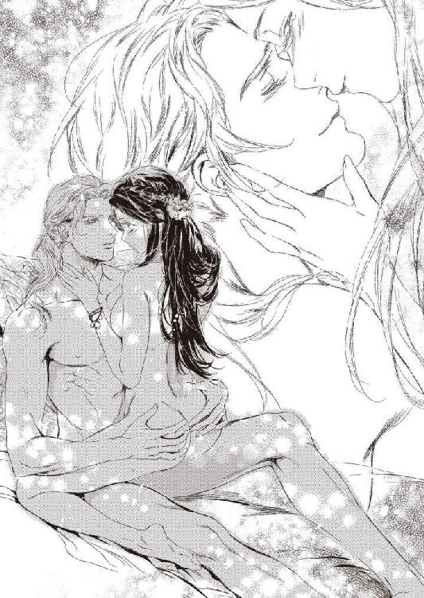
「達してしまった？」
頬を染めて頷くと、誘惑の声音で彼は囁いた。
「どのくらい蜜が出てるか、見せてごらん」
フィオリーネはおずおずと膝立ちになり、自らの秘処に指を差し入れた。くちゅん、と淫靡な水音がして、指先が蜜溜まりに沈む。
「ぁ......ん......」
ゆるく掻き回しただけでふたたび達してしまいそうになる。熱い蜜を掬い取って示すと、リーンハルトはためらいもせずその指を口にふくんだ。根元まで銜えられ、指の股をチロチロと舌先でくすぐるように突つかれる。
「んッ」
びくりとフィオリーネは肩をすぼめた。
「んゃ......、くすぐったぃ......」
「甘い蜜だ」
「そんな......」
やっと指を解放すると、リーンハルトは美しい翠の瞳に淫欲を宿して囁いた。
「さぁ、これを挿れて、自分で達するんだ」
催眠術にかかったかのように、彼の唾液で濡れそぼった指を花筒に押し込む。淫蜜で満たされた隘路はフィオリーネの細い指をにゅくりと呑み込んだ。
「あッ......！ はぁ......ぁん......」
腰を揺らしながらつぷつぷと抜き差しを始めると、彼は空いたほうの手を取ってねろねろと舐め回した。
「んっ、ぁっ、ンン......、や、っあ」
くすぐったさと心地よさに吐息が熱く乱れる。彼は人指し指と中指を口にふくみ、わざとのようにぺちゃぺちゃと音をたてて舐めしゃぶった。存分に唾液をまといつせると、彼はまたそそのかすように命じた。
「これで両方入るね？」
羞恥に涙ぐみながらも言われたとおり両手の指を蜜洞に挿し入れる。濡れそぼち、熱く蕩けた粘膜は左右二本ずつの指を難なく呑み込んだ。彼の雄茎よりは細いけれど、卑猥な指示に昂奮したのかひどく感じてしまう。
「あっ、あっ、あんっ、んんっ......」
ぐちゅぐちゅと抜き差しするたびに掻き出された蜜が滴り、彼の腿の上に落ちる。上体がグラグラして不安定だが、リーンハルトがしっかりと腰を支えているので倒れはしない。
「......素敵だ。すごくいやらしいよ、フィオリーネ」
昂奮をにじませる囁き声は甘くかすれ、官能的に耳をくすぐる。いっそう感じ入り、夢中になってフィオリーネは恥ずかしい行為に没頭した。たゆんたゆんと揺れる上気した豊乳を眺め、彼は飢えた獣のように舌なめずりをする。
「......ぁ、ぁ、ぁ......、あぁああっ......！」
快感の大波に攫われ、フィオリーネは背をしならせてびくびくと痙攣した。はぁはぁ喘ぎながら震える指を引き抜くと、粗相したように蜜潮がぽたぽたと滴り落ちた。
「やぁ......あ......、ごめ......なさ......っ」
「可愛いよ。とても色っぽくて昂奮した」
甘く囁いたリーンハルトに抱き寄せられ、ちゅっと褒めるようにくちづけられる。
そのまま舌を絡ませ、濃厚なくちづけを交わしていると、屹立がせっつくようにつんつんと花芽を突ついた。
腰を落とし、固く締まった先端に媚蕾をこすりつける。それだけでも昇天してしまいそうなほど気持ちがいい。舌を吸いあいながら濡れ溝で雄茎をくるんで扱くとリーンハルトがうっとりと吐息を洩らした。
「いけないひとだ......。私の奥方は、可愛い顔して床上手なのだから困ってしまうな......」
「気持ちいい？」
「ああ、すごく悦いよ」
ちゅっちゅっと音をたてて互いの唇を吸いねぶる。蜜襞が戦慄き、うっとりとフィオリーネは溜息をついた。ひくんひくんと痙攣しつづける花弁を割り、雄々しい怒張が蜜窟を突き進む。
膝から力を抜くと自重で身体が落ち、熱杭がぐちゅりと最奥に突き当たった。
「ぁ......！ ふか......ぃ......ッ」
目の前でチカチカと星が瞬く。続けざまの絶頂に意識がかすみ、朦朧とフィオリーネは逞しい胸板にもたれかかった。リーンハルトもまた恍惚とした溜息をついた。
「たまらないな......。あなたの此処は......まるで誂えたかのようにぴったりで......。貪欲に吸いついて......私を絞り上げる......」
「ひぁん！」
密着した腰をぐっと突き上げられ、かぼそい悲鳴が喉を突く。猛った肉槍に突き上げられるまま、頼りなく身体が揺れた。
「はんっ、あんっ、んん」
ぱちゅぱちゅと濡れた肌がぶつかりあう音が淫靡に響きわたる。フィオリーネは逞しい背に腕を回してしがみつき、肩口に顔を埋めて身悶えた。
彼の乱れた吐息が耳元で聞こえ、愛おしさと悦びとでますます昂奮が高まる。
「く......！ フィオリーネ......っ、もう......達きそうだ......！」
「来て......来て......、リーンハルトっ......、熱いの......欲し......。ぃ......っぱぃ......ッ」
咽ぶように、切れ切れに懇願する。翠の瞳の奥で淫欲の炎がいっそう激しく瞬いた。彼は歯噛みするように唸ると激しく腰を振って蜜洞を穿ち始めた。頭のなかが真っ白になり、ひたすら快楽だけを追い求める。
「あ、あ、あ、あぁ──......っ!!」
目も眩む絶頂感が押し寄せ、同時に胎内で灼熱が弾けた。煮えたぎるような奔流がどくどくと注ぎ込まれる。彼が腰を打ちつけるたびに熱いものが噴出し、蜜壺をいっぱいに満たした。
「ひ......ぁ......、あ......、まだ......、出て......っ」
荒い息を吐き、リーンハルトは繋がった腰をなお深く抉るように押し付けた。胎内で息づく雄茎の脈動が、痙攣する襞を通してどくんどくんと伝わってくる。欲望を吐き出してもまだ太棹は物足りなそうに猛っていた。
「っく......、まだだ......、まだ足りない......！」
彼は息を荒らげて呟いた。
「ああ、フィオリーネ......。私はやっぱりけだものだ......。あなたが欲しくてたまらない......止まらないんだ......っ」
切羽詰まった声に、ほろほろと涙をこぼしながらフィオリーネは頷いた。
「い......の......。もっと......して......？」
彼は唸り、身体を繋げたままフィオリーネをベッドに押し倒した。ふたたび律動が始まり、フィオリーネは我を忘れて喘ぎ、腰を振りたくって悶えた。
爪先から頭のてっぺんまで悦楽に塗りつぶされ、甘く痺れて力が入らない。ようやく彼が満足した頃には、フィオリーネは過ぎた快楽に蕩けきって半死半生の態だった。
詫びるように甘やかすように何度もキスされるうち、ようやく意識が戻ってくる。心配そうな彼の瞳を覗き込んで微笑み、腕を回して抱きついた。
「大好きよ、リーンハルト」
ホッとしたように彼が笑顔になる。
「やはりあなたには敵わないな。きっと一生敵わない。でも、それがいいんだ」
ふふっと笑ってくちづける。
「ずっと一緒ね？」
「ああ」
力強い声に安堵して懐に顔を埋める。あたたかな幸福感に包まれながら、フィオリーネは深く安らかな眠りへと誘われていった。
あとがき
こんにちは。このたびは『冷血公爵の溺愛花嫁 姫君は愛に惑う』をお手にとっていただき、まことにありがとうございます。お楽しみいただけましたでしょうか？
今回のヒロインは温かな家族のもとで愛されて育った、とても恵まれた立場にある王女様です。そのため騙されたり危険な目に遭った経験がなく、とある事件で大きなショックを受けて引きこもりになってしまいました。
そんなヒロインが結婚を機に家族のもとを離れ、夫とともに自分たちの新たな『楽園』を模索し始めるというストーリーです。
父王が熟考の末に決めた政略結婚で、お相手は王族にもゆかりのある公爵という高い身分の持ち主ですが、戦う貴族、つまりは騎士なのですね。国境守備を指揮するため、ヒーローは本来の領地を離れて砦に詰めています。そこにヒロインが嫁いでいくわけです。
ヒロインは温室育ちの王女様ですが、意外と根性があります。親の遺伝でしょうか。実はこのお話、蜜猫文庫で以前書かせていただいた『略奪花嫁 炎の愛撫に蕩ける氷華』の子ども世代のお話なのです。
いつか書きたいなぁとずっと思っていたのですが、おかげさまで末っ子ちゃんのお話を書くことができました。
もちろん物語としてはそれぞれ独立していますので、こちらだけでも大丈夫です。両親のエピソードが気になった方は併せてお読みいただくとおもしろいかもしれません。
初稿では前回のヒーローである父親や長兄も台詞つきで登場していたのですが、前作を未読の方には煩わしいかと思って削りました。ブログに載せておきますので興味があればご覧ください。https://blogs.yahoo.co.jp/koide_miki
ヒロインの兄三人については書くかどうかわかりませんが、今回、困ったちゃんな双子兄を書いていてとても楽しかったです。きっとこれからも何かと押しかけては『義弟』をオモチャにすることでしょう。ああ、ヒーローが眉間にしわを寄せる様が思い浮かぶ（笑）。
敵役もわりと好きなキャラです。実際に身近にいたらイヤですけど、悪役令嬢とその恋人（登場してませんが）は犯罪者カップルとして有名なボニー＆クライドみたいな感じ？ 愛し合っているのは確かだけど、非常に傍迷惑。
そしてヒロインに横恋慕して二度誘拐を企て二度とも失敗した隣国の王様。懲りない人です。またやります。当然また失敗しますけど。
この人には本気の恋をして更生してほしいですね。......いや無理かな。嫁を誠実に溺愛しつつ悪巧みも全力で楽しみそうな性格ですし。それはそれで書いたら楽しそうだけど、悪漢ヒーローに需要はなさそう。
最終的にはヒーローとヒロイン父によってこてんぱんに叩かれてやっとおとなしくなる......けどやっぱり懲りずに悪巧み......とか。う～ん、しょうもない人ですねぇ。まぁ、そのおかげでヒーローとヒロインのラブラブっぷりにも拍車がかかりそうなので、よしとしましょう。
さて、今回の挿画はＣｉｅｌ先生に付けていただきました。まだ表紙しか拝見していませんが、うっとり見惚れてしまいました。跪いてヒロインの手にキスする鎧姿のヒーロー。武装の騎士が大好物な作者には美味しすぎます......！
いつもお世話になっている編集様を始め、この本が世に出るまでにご尽力いただきました皆様と、この本を手に取ってくださった読者様に改めて厚く御礼申し上げます。ありがとうございました。
今回はあとがきが四ページもありまして。駄文のネタも尽きましたので削除した冒頭部分のさらに冒頭を載せておきます。続きはブログにて。
グランフェルト王国の都、グリトニール。蛇行するギョル河沿いの城下町を見下ろす小高い丘の上にそびえる宮殿の奥まった一室で、国王ルガートは手にした書状を憮然と眺めていた。
齢五十に達しても、鍛え上げた筋肉に鎧われた体躯は頑健そのもの。艶やかな黒髪にわずかな銀線が混じり始めたが、涼しげな目許には一本のしわもない。
すでに日は落ち、室内は燭台と暖炉の灯でやわらかなオレンジ色に染まっている。
コツコツとノックの音がして、彼は顔を上げた。
「入れ」
重厚な扉が開き、長男ローラントが顔を出す。琥珀色の髪に澄んだアイスブルーの瞳をした美青年で、今年二十五歳になった。
「お呼びでしょうか、父上」
「まぁ、座れ」
軽く顎をしゃくって差し向かいの椅子を示す。腰を下ろしたローラントは父の手にした書状を注意深く眺めた。
「......昼間届いた書状ですね」
「ああ。ファラハールの国王からの親書だ」
表情の薄いローラントの目許が、ぴくりと動く。彼は疑わしげなまなざしを父に向けた。
小出みき
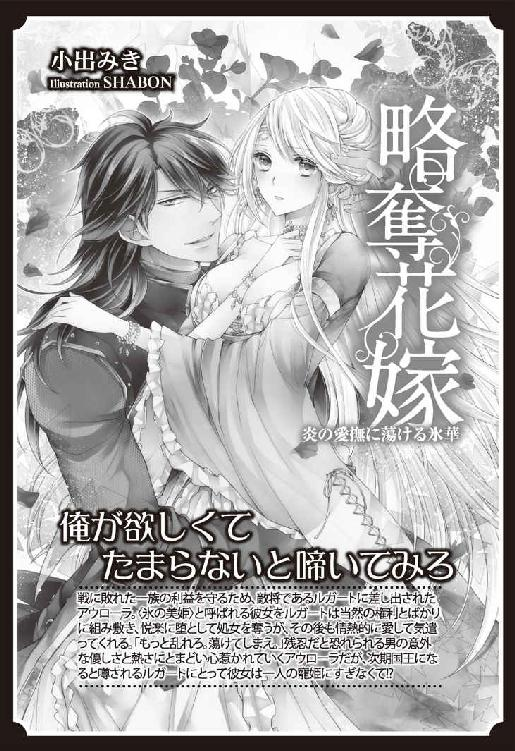
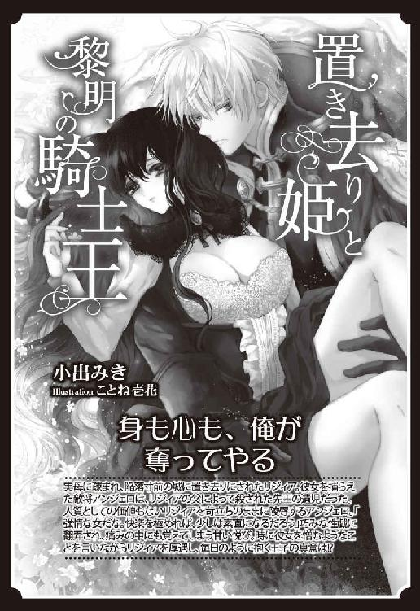
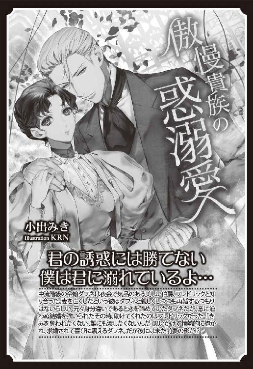
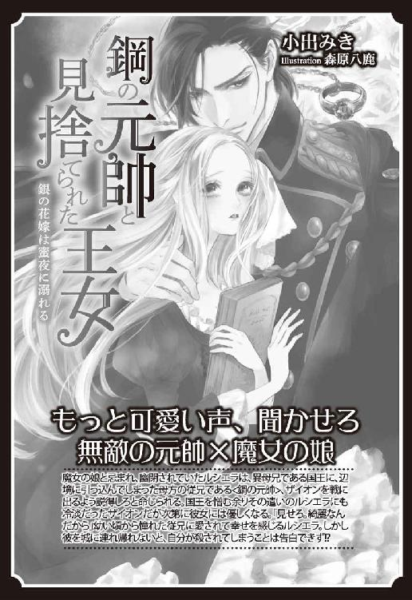
Story
小出みき
こいで みき
だいぶ涼しくなってきました。のんびり温泉に浸かりたいです。紅葉狩りもいいですね。
https://twitter.com/koide_miki
Illustration
Ciel
しえる
最近、観葉植物のクワズイモを買いました。
1日ごと成長するのスピードがすごい！ 思わずじっと見てしまいます。

蜜猫文庫をお買い上げいただきありがとうございます。
この作品を読んでのご意見・ご感想をお聞かせください。
あて先は下記の通りです。
〒102-0072 東京都千代田区飯田橋 2-7-3
㈱竹書房 蜜猫文庫編集部
小出みき先生／Ciel先生
冷血公爵の溺愛花嫁 ［電子書籍版］
～姫君は愛に惑う～
発行日 ２０１８年10月１日 発行
著 者 小出みき
デザイン antenna
発行者 後藤明信
発行所 株式会社竹書房
〒１０２－００７２
東京都千代田区飯田橋２－７－３
ＴＥＬ ０３－３２６４－１５７６
データ加工 有限会社ワイズネット
©KOIDE Miki 2018
本書の一部あるいは全部を著作権者および株式会社竹書房に無断で複写・複製すること、および放送・上演・公衆送信（ホームページ上への掲載を含む）などは、法律で認められた場合を除き著作権の侵害となります。